layout: true .toc.banner[ .logo.remarkonly[ .invertable[]  ] .shorttitle[ [ГИС обработка](#home) ] ] --- name: home class: metadata customtitle middle left giphy .toc.sidebar.left-column[ .outline[ # [Подготовка ](#Hdc8d2) # [Сбор данных ](#H0db48) # [Переброс данных](#Hca4d1) # [Треки ](#H7f976) # [Находки ](#Hec8ea) # [Анализ ](#analysis-gebco) ] ] .toc.mainbar.right-column.scrollable[ .author[Никита Платонов] .institute[с.н.с. ИПЭЭ РАН] .title[ Применение геоинформационных систем для обработки учётных данных ] .subtitle[ Трек «Морское биоразнообразие» ] .what[ Зимняя школа Плавучего университета 2025 ] .where[ ИПЭЭ РАН, Москва ] .when[ 2025-02-05 .updated[Обновлено: 2025-01-11 09:38] ] ] ] --- class: notable <iframe src="https://docs.google.com/document/d/1lcVnWwFZvUbjhWwU5UlUGe38h6quaaao2P38b-UEnvo/view?tab=t.0" width="1330" height="670px" data-external="1"></iframe> --- name: Hdc8d2 .toc.sidebar.left-column[ .outline[ # [Подготовка ](#Hdc8d2).fg[] ## [Tips & tricks ](#Hdc8d2).fg[].bg[] ## [Goodies](#hidden-goodies) ## [Программы](#soft-qgis-standalone) ## [Данные ](#He7853) # [Сбор данных ](#H0db48) # [Переброс данных](#Hca4d1) # [Треки ](#H7f976) # [Находки ](#Hec8ea) # [Анализ ](#analysis-gebco) ] ] .toc.mainbar.right-column.scrollable[ .header.h2.broad[ Tips & tricks .parent[.grand[Подготовка]] ] .fixprecode[ .font86[ .pulling[ .pull-left-55[ #### Интернет Рассчитывать на него не стоит + Всё необходимое скачать до рейса + Отключить обновления на <svg aria-hidden="true" role="img" viewBox="0 0 640 512" style="height:1em;width:1.25em;vertical-align:-0.125em;margin-left:auto;margin-right:auto;font-size:inherit;fill:currentColor;overflow:visible;position:relative;"><path d="M384 96V320H64L64 96H384zM64 32C28.7 32 0 60.7 0 96V320c0 35.3 28.7 64 64 64H181.3l-10.7 32H96c-17.7 0-32 14.3-32 32s14.3 32 32 32H352c17.7 0 32-14.3 32-32s-14.3-32-32-32H277.3l-10.7-32H384c35.3 0 64-28.7 64-64V96c0-35.3-28.7-64-64-64H64zm464 0c-26.5 0-48 21.5-48 48V432c0 26.5 21.5 48 48 48h64c26.5 0 48-21.5 48-48V80c0-26.5-21.5-48-48-48H528zm16 64h32c8.8 0 16 7.2 16 16s-7.2 16-16 16H544c-8.8 0-16-7.2-16-16s7.2-16 16-16zm-16 80c0-8.8 7.2-16 16-16h32c8.8 0 16 7.2 16 16s-7.2 16-16 16H544c-8.8 0-16-7.2-16-16zm32 160a32 32 0 1 1 0 64 32 32 0 1 1 0-64z"/></svg> и <svg aria-hidden="true" role="img" viewBox="0 0 384 512" style="height:1em;width:0.75em;vertical-align:-0.125em;margin-left:auto;margin-right:auto;font-size:inherit;fill:currentColor;overflow:visible;position:relative;"><path d="M16 64C16 28.7 44.7 0 80 0H304c35.3 0 64 28.7 64 64V448c0 35.3-28.7 64-64 64H80c-35.3 0-64-28.7-64-64V64zM144 448c0 8.8 7.2 16 16 16h64c8.8 0 16-7.2 16-16s-7.2-16-16-16H160c-8.8 0-16 7.2-16 16zM304 64H80V384H304V64z"/></svg>. + <svg aria-hidden="true" role="img" viewBox="0 0 448 512" style="height:1em;width:0.88em;vertical-align:-0.125em;margin-left:auto;margin-right:auto;font-size:inherit;fill:currentColor;overflow:visible;position:relative;"><path d="M92.1 254.6c0 24.9 7 49.2 20.2 70.1l3.1 5-13.3 48.6L152 365.2l4.8 2.9c20.2 12 43.4 18.4 67.1 18.4h.1c72.6 0 133.3-59.1 133.3-131.8c0-35.2-15.2-68.3-40.1-93.2c-25-25-58-38.7-93.2-38.7c-72.7 0-131.8 59.1-131.9 131.8zM274.8 330c-12.6 1.9-22.4 .9-47.5-9.9c-36.8-15.9-61.8-51.5-66.9-58.7c-.4-.6-.7-.9-.8-1.1c-2-2.6-16.2-21.5-16.2-41c0-18.4 9-27.9 13.2-32.3c.3-.3 .5-.5 .7-.8c3.6-4 7.9-5 10.6-5c2.6 0 5.3 0 7.6 .1c.3 0 .5 0 .8 0c2.3 0 5.2 0 8.1 6.8c1.2 2.9 3 7.3 4.9 11.8c3.3 8 6.7 16.3 7.3 17.6c1 2 1.7 4.3 .3 6.9c-3.4 6.8-6.9 10.4-9.3 13c-3.1 3.2-4.5 4.7-2.3 8.6c15.3 26.3 30.6 35.4 53.9 47.1c4 2 6.3 1.7 8.6-1c2.3-2.6 9.9-11.6 12.5-15.5c2.6-4 5.3-3.3 8.9-2s23.1 10.9 27.1 12.9c.8 .4 1.5 .7 2.1 1c2.8 1.4 4.7 2.3 5.5 3.6c.9 1.9 .9 9.9-2.4 19.1c-3.3 9.3-19.1 17.7-26.7 18.8zM448 96c0-35.3-28.7-64-64-64H64C28.7 32 0 60.7 0 96V416c0 35.3 28.7 64 64 64H384c35.3 0 64-28.7 64-64V96zM148.1 393.9L64 416l22.5-82.2c-13.9-24-21.2-51.3-21.2-79.3C65.4 167.1 136.5 96 223.9 96c42.4 0 82.2 16.5 112.2 46.5c29.9 30 47.9 69.8 47.9 112.2c0 87.4-72.7 158.5-160.1 158.5c-26.6 0-52.7-6.7-75.8-19.3z"/></svg> надежнее <svg aria-hidden="true" role="img" viewBox="0 0 496 512" style="height:1em;width:0.97em;vertical-align:-0.125em;margin-left:auto;margin-right:auto;font-size:inherit;fill:currentColor;overflow:visible;position:relative;"><path d="M248,8C111.033,8,0,119.033,0,256S111.033,504,248,504,496,392.967,496,256,384.967,8,248,8ZM362.952,176.66c-3.732,39.215-19.881,134.378-28.1,178.3-3.476,18.584-10.322,24.816-16.948,25.425-14.4,1.326-25.338-9.517-39.287-18.661-21.827-14.308-34.158-23.215-55.346-37.177-24.485-16.135-8.612-25,5.342-39.5,3.652-3.793,67.107-61.51,68.335-66.746.153-.655.3-3.1-1.154-4.384s-3.59-.849-5.135-.5q-3.283.746-104.608,69.142-14.845,10.194-26.894,9.934c-8.855-.191-25.888-5.006-38.551-9.123-15.531-5.048-27.875-7.717-26.8-16.291q.84-6.7,18.45-13.7,108.446-47.248,144.628-62.3c68.872-28.647,83.183-33.623,92.511-33.789,2.052-.034,6.639.474,9.61,2.885a10.452,10.452,0,0,1,3.53,6.716A43.765,43.765,0,0,1,362.952,176.66Z"/></svg> при малой пропускной способности #### Часовой пояс + Зафиксировать с момента начала до момента окончания рейса для всех участников и всех устройств на вахте + UTC, если судовое время меняется в течение рейса <!-- + любой, но неизменный --> + судовое время, если оно не меняется. #### GPS + Запись трека разными приборами (потеря сигнала, разряд батарей) + Задать часовой пояс ] .pull-right-45[ #### Фотоаппарат + EXIF нужен + Время и часовой пояс по GPS #### Наручные часы + Время и часовой пояс по GPS #### Диктофон + Время и часовой пояс по GPS #### Учётный лист + Карандаш + Время начала и окончания вахты + .clarify[ Ширина учётной полосы (при каждом изменении) + Все животные могут быть идентифицированы + Параметр для оценки плотности ] ] ] ] ] ] --- name: hidden-goodies class: blackout .toc.sidebar.left-column[ .outline[ # [Подготовка ](#Hdc8d2).fg[] ## [Tips & tricks ](#Hdc8d2) ## [Goodies](#hidden-goodies).fg[].bg[] ## [Программы](#soft-qgis-standalone) ## [Данные ](#He7853) # [Сбор данных ](#H0db48) # [Переброс данных](#Hca4d1) # [Треки ](#H7f976) # [Находки ](#Hec8ea) # [Анализ ](#analysis-gebco) ] ] .toc.mainbar.right-column.scrollable[ .header.h2.broad[ Goodies .parent[.grand[Подготовка]] ] .fixprecode[ + Настолки + Вкусняшки + Сигареты + Алкоголь ] ] --- name: soft-qgis-standalone .toc.sidebar.left-column[ .outline[ # [Подготовка ](#Hdc8d2).fg[] ## [Tips & tricks ](#Hdc8d2) ## [Goodies](#hidden-goodies) ## [Программы](#soft-qgis-standalone).fg[] ### [QGIS](#soft-qgis-standalone).fg[] #### [Standalone](#soft-qgis-standalone) <span class="bullet bullet-active">[•](#soft-qgis-standalone)</span><span class="bullet mslide10m">[•](#soft-qgis-standalone-next)</span>.fg[].bg[] #### [OSGeo4W](#soft-qgis-osgeo4w) #### [NextGIS QGIS](#soft-nextgis) #### [Расширения](#soft-qgis-plugins) ### [R](#H70f55) ## [Данные ](#He7853) # [Сбор данных ](#H0db48) # [Переброс данных](#Hca4d1) # [Треки ](#H7f976) # [Находки ](#Hec8ea) # [Анализ ](#analysis-gebco) ] ] .toc.mainbar.right-column.scrollable[ .header.broad[ Standalone ] .fixprecode[ <!-- [QGIS Web](https://qgis.org/en/site/) --> Сайт https://qgis.org/. Находим "Download" <iframe src="https://qgis.org/" width=100% height=630> </iframe> ] ] --- name: soft-qgis-standalone-next .toc.sidebar.left-column[ .outline[ # [Подготовка ](#Hdc8d2).fg[] ## [Tips & tricks ](#Hdc8d2) ## [Goodies](#hidden-goodies) ## [Программы](#soft-qgis-standalone).fg[] ### [QGIS](#soft-qgis-standalone).fg[] #### [Standalone](#soft-qgis-standalone) <span class="bullet bullet">[•](#soft-qgis-standalone)</span><span class="bullet bullet-active">[•](#soft-qgis-standalone-next)</span>.fg[].bg[] #### [OSGeo4W](#soft-qgis-osgeo4w) #### [NextGIS QGIS](#soft-nextgis) #### [Расширения](#soft-qgis-plugins) ### [R](#H70f55) ## [Данные ](#He7853) # [Сбор данных ](#H0db48) # [Переброс данных](#Hca4d1) # [Треки ](#H7f976) # [Находки ](#Hec8ea) # [Анализ ](#analysis-gebco) ] ] .toc.mainbar.right-column.scrollable[ .header.broad[ Standalone ] .fixprecode[ https://qgis.org/en/site/forusers/download.html <iframe src="https://qgis.org/en/site/forusers/download.html" width=100% height=670> </iframe> ] ] --- name: soft-qgis-osgeo4w .toc.sidebar.left-column[ .outline[ # [Подготовка ](#Hdc8d2).fg[] ## [Tips & tricks ](#Hdc8d2) ## [Goodies](#hidden-goodies) ## [Программы](#soft-qgis-standalone).fg[] ### [QGIS](#soft-qgis-standalone).fg[] #### [Standalone](#soft-qgis-standalone) #### [OSGeo4W](#soft-qgis-osgeo4w) <span class="bullet bullet-active">[•](#soft-qgis-osgeo4w)</span><span class="bullet mslide12m">[•](#H278d1)</span>.fg[].bg[] #### [NextGIS QGIS](#soft-nextgis) #### [Расширения](#soft-qgis-plugins) ### [R](#H70f55) ## [Данные ](#He7853) # [Сбор данных ](#H0db48) # [Переброс данных](#Hca4d1) # [Треки ](#H7f976) # [Находки ](#Hec8ea) # [Анализ ](#analysis-gebco) ] ] .toc.mainbar.right-column.scrollable[ .header.broad[ OSGeo4W ] .fixprecode[ Программное обеспечение с открытым исходным кодом для Windows https://trac.osgeo.org/osgeo4w/ <iframe src="https://trac.osgeo.org/osgeo4w/#QuickStartforOSGeo4WUsers" width=100% height=555> </iframe> Находим "Download the OSGeo4W network installer" ] ] --- name: H278d1 .toc.sidebar.left-column[ .outline[ # [Подготовка ](#Hdc8d2).fg[] ## [Tips & tricks ](#Hdc8d2) ## [Goodies](#hidden-goodies) ## [Программы](#soft-qgis-standalone).fg[] ### [QGIS](#soft-qgis-standalone).fg[] #### [Standalone](#soft-qgis-standalone) #### [OSGeo4W](#soft-qgis-osgeo4w) <span class="bullet bullet">[•](#soft-qgis-osgeo4w)</span><span class="bullet bullet-active">[•](#H278d1)</span>.fg[].bg[] #### [NextGIS QGIS](#soft-nextgis) #### [Расширения](#soft-qgis-plugins) ### [R](#H70f55) ## [Данные ](#He7853) # [Сбор данных ](#H0db48) # [Переброс данных](#Hca4d1) # [Треки ](#H7f976) # [Находки ](#Hec8ea) # [Анализ ](#analysis-gebco) ] ] .toc.mainbar.right-column.scrollable[ .header.broad[ OSGeo4W ] .fixprecode[ 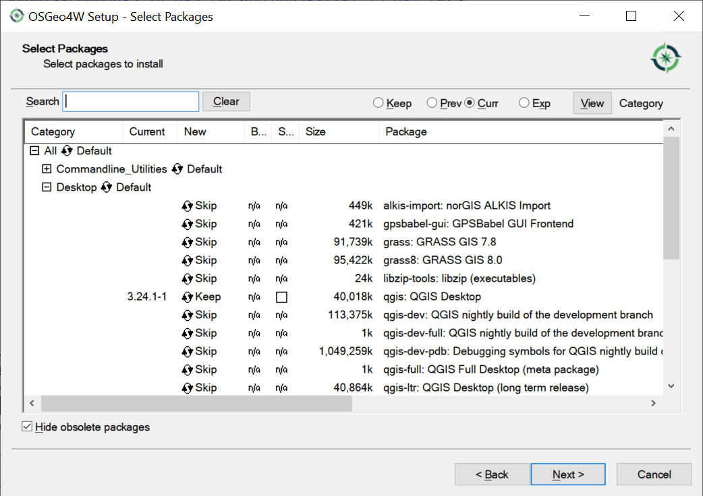 ] ] --- name: soft-nextgis .toc.sidebar.left-column[ .outline[ # [Подготовка ](#Hdc8d2).fg[] ## [Tips & tricks ](#Hdc8d2) ## [Goodies](#hidden-goodies) ## [Программы](#soft-qgis-standalone).fg[] ### [QGIS](#soft-qgis-standalone).fg[] #### [Standalone](#soft-qgis-standalone) #### [OSGeo4W](#soft-qgis-osgeo4w) #### [NextGIS QGIS](#soft-nextgis).fg[].bg[] #### [Расширения](#soft-qgis-plugins) ### [R](#H70f55) ## [Данные ](#He7853) # [Сбор данных ](#H0db48) # [Переброс данных](#Hca4d1) # [Треки ](#H7f976) # [Находки ](#Hec8ea) # [Анализ ](#analysis-gebco) ] ] .toc.mainbar.right-column.scrollable[ .header.broad[ NextGIS QGIS ] .fixprecode[ https://nextgis.com/nextgis-qgis/ (Windows) <iframe src="https://nextgis.com/nextgis-qgis/" width=100% height=530> </iframe> Находим "Download NextGIS QGIS" ] ] --- name: soft-qgis-plugins class: middle .toc.sidebar.left-column[ .outline[ # [Подготовка ](#Hdc8d2).fg[] ## [Tips & tricks ](#Hdc8d2) ## [Goodies](#hidden-goodies) ## [Программы](#soft-qgis-standalone).fg[] ### [QGIS](#soft-qgis-standalone).fg[] #### [Standalone](#soft-qgis-standalone) #### [OSGeo4W](#soft-qgis-osgeo4w) #### [NextGIS QGIS](#soft-nextgis) #### [Расширения](#soft-qgis-plugins).fg[].bg[] ### [R](#H70f55) ## [Данные ](#He7853) # [Сбор данных ](#H0db48) # [Переброс данных](#Hca4d1) # [Треки ](#H7f976) # [Находки ](#Hec8ea) # [Анализ ](#analysis-gebco) ] ] .toc.mainbar.right-column.scrollable[ .header.broad[ Расширения ] .fixprecode[ https://plugins.qgis.org/ <iframe src="https://plugins.qgis.org/plugins/?sort=-downloads" width="1330" height="630" data-external="1"></iframe> ] ] --- name: H70f55 .toc.sidebar.left-column[ .outline[ # [Подготовка ](#Hdc8d2).fg[] ## [Tips & tricks ](#Hdc8d2) ## [Goodies](#hidden-goodies) ## [Программы](#soft-qgis-standalone).fg[] ### [QGIS](#soft-qgis-standalone) ### [R](#H70f55).fg[].bg[] #### [Ядро](#Hc6949) #### [Пакеты](#H2dd31) ## [Данные ](#He7853) # [Сбор данных ](#H0db48) # [Переброс данных](#Hca4d1) # [Треки ](#H7f976) # [Находки ](#Hec8ea) # [Анализ ](#analysis-gebco) ] ] .toc.mainbar.right-column.scrollable[ .header.broad[ ### [R](#H70f55) ] .fixprecode[ https://www.r-project.org/. Выбираем "download R" и сервер для скачивания (mirror). <iframe src="https://www.r-project.org/" width="1330" height="630" data-external="1"></iframe> ] ] --- name: Hc6949 .toc.sidebar.left-column[ .outline[ # [Подготовка ](#Hdc8d2).fg[] ## [Tips & tricks ](#Hdc8d2) ## [Goodies](#hidden-goodies) ## [Программы](#soft-qgis-standalone).fg[] ### [QGIS](#soft-qgis-standalone) ### [R](#H70f55).fg[] #### [Ядро](#Hc6949).fg[].bg[] #### [Пакеты](#H2dd31) ## [Данные ](#He7853) # [Сбор данных ](#H0db48) # [Переброс данных](#Hca4d1) # [Треки ](#H7f976) # [Находки ](#Hec8ea) # [Анализ ](#analysis-gebco) ] ] .toc.mainbar.right-column.scrollable[ .header.broad[ Ядро ] .fixprecode[ https://cloud.r-project.org/ <iframe src="https://cloud.r-project.org/banner.shtml" width="1330" height="630" data-external="1"></iframe> ] ] --- name: H2dd31 .toc.sidebar.left-column[ .outline[ # [Подготовка ](#Hdc8d2).fg[] ## [Tips & tricks ](#Hdc8d2) ## [Goodies](#hidden-goodies) ## [Программы](#soft-qgis-standalone).fg[] ### [QGIS](#soft-qgis-standalone) ### [R](#H70f55).fg[] #### [Ядро](#Hc6949) #### [Пакеты](#H2dd31) <span class="bullet bullet-active">[•](#H2dd31)</span><span class="bullet mslide19m">[•](#Hb05fc)</span>.fg[].bg[] ## [Данные ](#He7853) # [Сбор данных ](#H0db48) # [Переброс данных](#Hca4d1) # [Треки ](#H7f976) # [Находки ](#Hec8ea) # [Анализ ](#analysis-gebco) ] ] .toc.mainbar.right-column.scrollable[ .header.broad[ Пакеты ] .fixprecode[ https://cloud.r-project.org/web/packages/ <iframe src="https://cloud.r-project.org/web/packages/" width="1330" height="630" data-external="1"></iframe> ] ] --- name: Hb05fc .toc.sidebar.left-column[ .outline[ # [Подготовка ](#Hdc8d2).fg[] ## [Tips & tricks ](#Hdc8d2) ## [Goodies](#hidden-goodies) ## [Программы](#soft-qgis-standalone).fg[] ### [QGIS](#soft-qgis-standalone) ### [R](#H70f55).fg[] #### [Ядро](#Hc6949) #### [Пакеты](#H2dd31) <span class="bullet bullet">[•](#H2dd31)</span><span class="bullet bullet-active">[•](#Hb05fc)</span>.fg[].bg[] ## [Данные ](#He7853) # [Сбор данных ](#H0db48) # [Переброс данных](#Hca4d1) # [Треки ](#H7f976) # [Находки ](#Hec8ea) # [Анализ ](#analysis-gebco) ] ] .toc.mainbar.right-column.scrollable[ .header.broad[ Пакеты ] .fixprecode[ [Отображение всех пакетов](https://cloud.r-project.org/web/packages/available_packages_by_name.html) <iframe src="https://cloud.r-project.org/web/packages/available_packages_by_name.html" width="1330" height="630" data-external="1"></iframe> ] ] --- name: He7853 .toc.sidebar.left-column[ .outline[ # [Подготовка ](#Hdc8d2).fg[] ## [Tips & tricks ](#Hdc8d2) ## [Goodies](#hidden-goodies) ## [Программы](#soft-qgis-standalone) ## [Данные ](#He7853).fg[] ### [Natural Earth ](#He7853).fg[].bg[] ### [OSM береговая линия ](#H02b54) ### [GEBCO батиметрия](#download-gebco) ### [ДДЗ морской лёд ](#Ha14b2) # [Сбор данных ](#H0db48) # [Переброс данных](#Hca4d1) # [Треки ](#H7f976) # [Находки ](#Hec8ea) # [Анализ ](#analysis-gebco) ] ] .toc.mainbar.right-column.scrollable[ .header.h3.broad[ Natural Earth .parent[.grand[Данные .grand[Подготовка]]] ] .fixprecode[ [Natural Earth World GIS Data](https://www.naturalearthdata.com/) <iframe src="https://www.naturalearthdata.com/downloads/" width="1330" height="540" data-external="1"></iframe> + Есть поддержка русскоязычных названий (см. поля "name_ru", "NAME_RU") ] ] --- name: H02b54 .toc.sidebar.left-column[ .outline[ # [Подготовка ](#Hdc8d2).fg[] ## [Tips & tricks ](#Hdc8d2) ## [Goodies](#hidden-goodies) ## [Программы](#soft-qgis-standalone) ## [Данные ](#He7853).fg[] ### [Natural Earth ](#He7853) ### [OSM береговая линия ](#H02b54).fg[].bg[] ### [GEBCO батиметрия](#download-gebco) ### [ДДЗ морской лёд ](#Ha14b2) # [Сбор данных ](#H0db48) # [Переброс данных](#Hca4d1) # [Треки ](#H7f976) # [Находки ](#Hec8ea) # [Анализ ](#analysis-gebco) ] ] .toc.mainbar.right-column.scrollable[ .header.h3.broad[ OSM береговая линия .parent[.grand[Данные .grand[Подготовка]]] ] .fixprecode[ + [Data Derived from OpenStreetMap for Download](https://osmdata.openstreetmap.de/) + [Land Polygons](https://osmdata.openstreetmap.de/data/land-polygons.html) + [Download large simplified polygons](https://osmdata.openstreetmap.de/download/simplified-land-polygons-complete-3857.zip) <iframe src="https://osmdata.openstreetmap.de/" width="1330" height="505" data-external="1"></iframe> ] ] --- name: download-gebco .toc.sidebar.left-column[ .outline[ # [Подготовка ](#Hdc8d2).fg[] ## [Tips & tricks ](#Hdc8d2) ## [Goodies](#hidden-goodies) ## [Программы](#soft-qgis-standalone) ## [Данные ](#He7853).fg[] ### [Natural Earth ](#He7853) ### [OSM береговая линия ](#H02b54) ### [GEBCO батиметрия](#download-gebco).fg[].bg[] ### [ДДЗ морской лёд ](#Ha14b2) # [Сбор данных ](#H0db48) # [Переброс данных](#Hca4d1) # [Треки ](#H7f976) # [Находки ](#Hec8ea) # [Анализ ](#analysis-gebco) ] ] .toc.mainbar.right-column.scrollable[ .header.h3.broad[ GEBCO батиметрия .parent[.grand[Данные .grand[Подготовка]]] ] .fixprecode[ + https://www.gebco.net/ + [Gridded Bathymetry Data](https://www.gebco.net/data_and_products/gridded_bathymetry_data/) + [Download data for user-defined areas](https://www.gebco.net/data_and_products/gridded_bathymetry_data/#area) + [Application](https://download.gebco.net/) См. [пример обработки](#analysis-gebco). <iframe src="https://download.gebco.net/" width="1330" height="485" data-external="1"></iframe> ] ] --- name: Ha14b2 .toc.sidebar.left-column[ .outline[ # [Подготовка ](#Hdc8d2).fg[] ## [Tips & tricks ](#Hdc8d2) ## [Goodies](#hidden-goodies) ## [Программы](#soft-qgis-standalone) ## [Данные ](#He7853).fg[] ### [Natural Earth ](#He7853) ### [OSM береговая линия ](#H02b54) ### [GEBCO батиметрия](#download-gebco) ### [ДДЗ морской лёд ](#Ha14b2).fg[].bg[] # [Сбор данных ](#H0db48) # [Переброс данных](#Hca4d1) # [Треки ](#H7f976) # [Находки ](#Hec8ea) # [Анализ ](#analysis-gebco) ] ] .toc.mainbar.right-column.scrollable[ .header.h3.broad[ ДДЗ морской лёд .parent[.grand[Данные .grand[Подготовка]]] ] .fixprecode[ https://seaice.uni-bremen.de/start/ <iframe src="https://seaice.uni-bremen.de/start/" width="1330" height="630" data-external="1"></iframe> ] ] --- name: H0db48 .toc.sidebar.left-column[ .outline[ # [Подготовка ](#Hdc8d2) # [Сбор данных ](#H0db48).fg[] ## [Наблюдения ](#H0db48).fg[].bg[] ## [Регистрация находок](#protocol) # [Переброс данных](#Hca4d1) # [Треки ](#H7f976) # [Находки ](#Hec8ea) # [Анализ ](#analysis-gebco) ] ] .toc.mainbar.right-column.scrollable[ .header.h2.broad[ Наблюдения .parent[.grand[Сбор данных]] ] .fixprecode[ 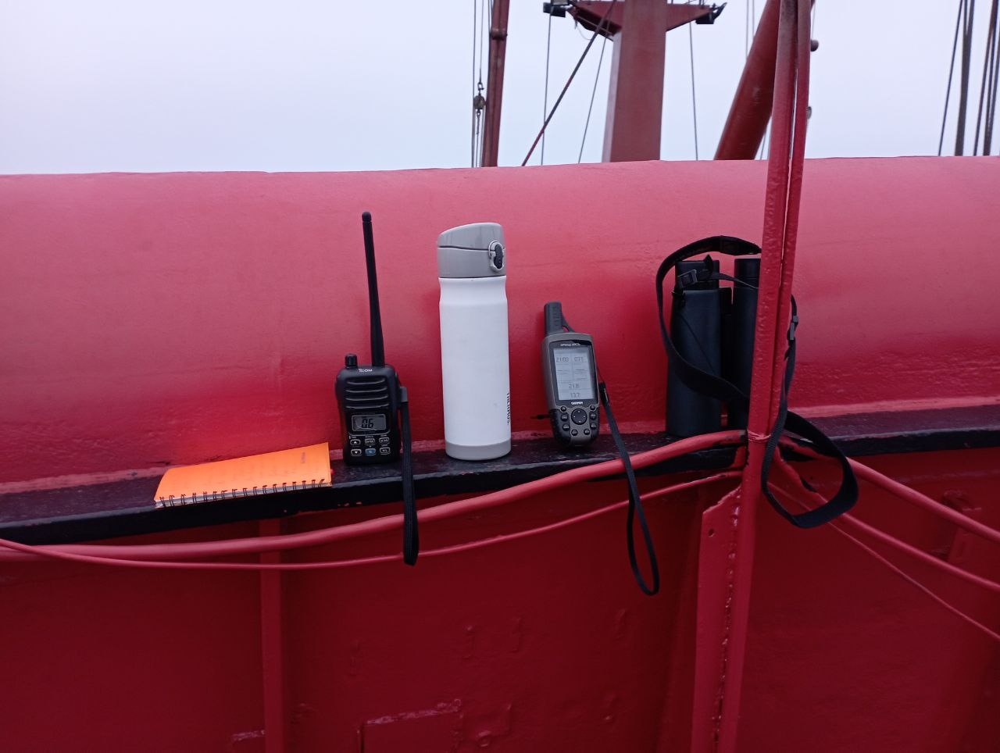 ] ] --- name: protocol .toc.sidebar.left-column[ .outline[ # [Подготовка ](#Hdc8d2) # [Сбор данных ](#H0db48).fg[] ## [Наблюдения ](#H0db48) ## [Регистрация находок](#protocol) <span class="bullet bullet-active">[•](#protocol)</span><span class="bullet mslide28m">[•](#Hec75a)</span><span class="bullet mslide29m">[•](#H9b729)</span>.fg[].bg[] # [Переброс данных](#Hca4d1) # [Треки ](#H7f976) # [Находки ](#Hec8ea) # [Анализ ](#analysis-gebco) ] ] .toc.mainbar.right-column.scrollable[ .header.h2.broad[ Регистрация находок .parent[.grand[Сбор данных]] ] .fixprecode[ 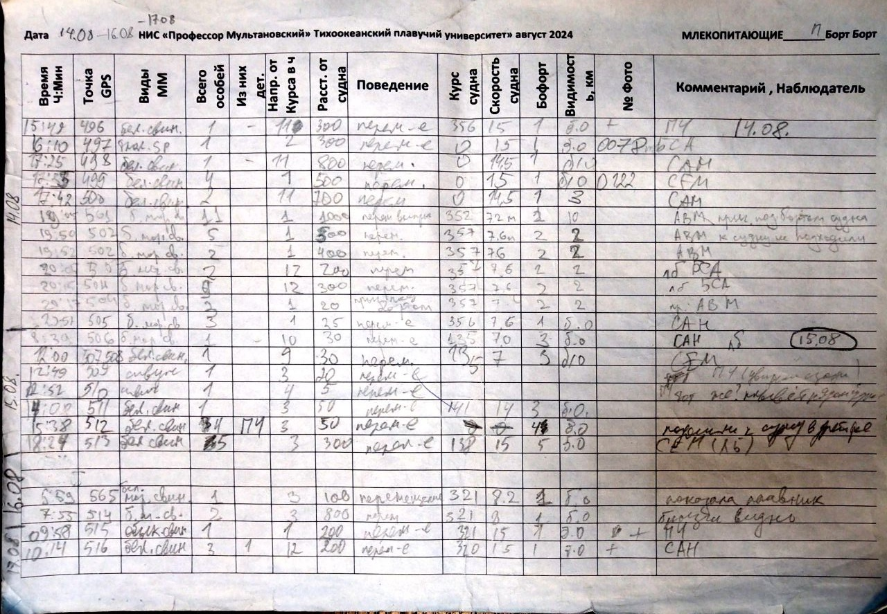 ] ] --- name: Hec75a .toc.sidebar.left-column[ .outline[ # [Подготовка ](#Hdc8d2) # [Сбор данных ](#H0db48).fg[] ## [Наблюдения ](#H0db48) ## [Регистрация находок](#protocol) <span class="bullet bullet">[•](#protocol)</span><span class="bullet bullet-active">[•](#Hec75a)</span><span class="bullet mslide29m">[•](#H9b729)</span>.fg[].bg[] # [Переброс данных](#Hca4d1) # [Треки ](#H7f976) # [Находки ](#Hec8ea) # [Анализ ](#analysis-gebco) ] ] .toc.mainbar.right-column.scrollable[ .header.h2.broad[ Регистрация находок .parent[.grand[Сбор данных]] ] .fixprecode[ .double[ 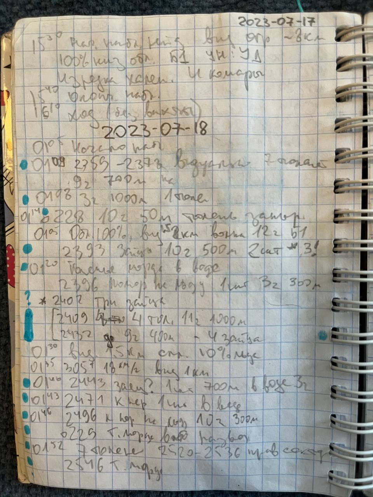 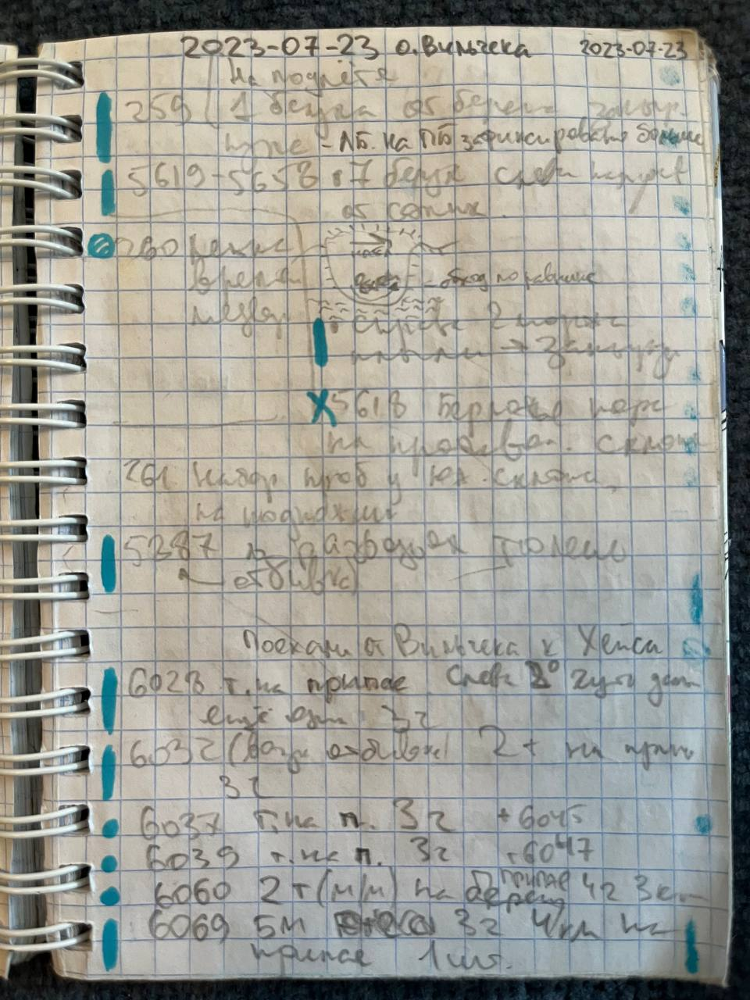 ] ] ] --- name: H9b729 .toc.sidebar.left-column[ .outline[ # [Подготовка ](#Hdc8d2) # [Сбор данных ](#H0db48).fg[] ## [Наблюдения ](#H0db48) ## [Регистрация находок](#protocol) <span class="bullet bullet">[•](#protocol)</span><span class="bullet bullet">[•](#Hec75a)</span><span class="bullet bullet-active">[•](#H9b729)</span>.fg[].bg[] # [Переброс данных](#Hca4d1) # [Треки ](#H7f976) # [Находки ](#Hec8ea) # [Анализ ](#analysis-gebco) ] ] .toc.mainbar.right-column.scrollable[ .header.h2.broad[ Регистрация находок .parent[.grand[Сбор данных]] ] .fixprecode[ Важно отметить время любым способом: + Поставить метку GPS, ввести в запись три цифры метки + Сделать фотографию (пусть даже «отбивку»), ввести в запись четыре цифры фото или диапазон номеров фото серийной съемки. + Выписать время (стараться до секунд) с GPS или наручных часов GPS пишет маршрут. При записи маршрута фиксируются и координаты, и время. По известному времени находки оцениваются её координаты. ] ] --- class: focus name: Hca4d1 .toc.sidebar.left-column[ .outline[ # [Подготовка ](#Hdc8d2) # [Сбор данных ](#H0db48) # [Переброс данных](#Hca4d1).fg[].bg[] ## [Из учётного листа ](#findings) ## [С GPS](#gps) ## [С фотоаппарата ](#Hef552) ## [После авиаучёта ](#H24348) # [Треки ](#H7f976) # [Находки ](#Hec8ea) # [Анализ ](#analysis-gebco) ] ] .toc.mainbar.right-column.scrollable[ .header.h1.broad[ Переброс данных ] .fixprecode[ .next[ - .header.next[[Из учётного листа ](#findings)] - .header.next[[С GPS](#gps)] - .header.next[[С фотоаппарата ](#Hef552)] - .header.next[[После авиаучёта ](#H24348)] ] ] ] --- name: findings .toc.sidebar.left-column[ .outline[ # [Подготовка ](#Hdc8d2) # [Сбор данных ](#H0db48) # [Переброс данных](#Hca4d1).fg[] ## [Из учётного листа ](#findings).fg[] ### [Таблица находок](#findings) <span class="bullet bullet-active">[•](#findings)</span><span class="bullet mslide34m">[•](#Hfcd8d)</span>.fg[].bg[] ## [С GPS](#gps) ## [С фотоаппарата ](#Hef552) ## [После авиаучёта ](#H24348) # [Треки ](#H7f976) # [Находки ](#Hec8ea) # [Анализ ](#analysis-gebco) ] ] .toc.mainbar.right-column.scrollable[ .header.h3.broad[ Таблица находок .parent[.grand[Из учётного листа .grand[Переброс данных]]] ] .fixprecode[ .protocol[ <div class="datatables html-widget html-fill-item" id="htmlwidget-b028a1ba73425efa27d6" style="width:100%;height:auto;"></div> <script type="application/json" data-for="htmlwidget-b028a1ba73425efa27d6">{"x":{"filter":"none","vertical":false,"extensions":["Scroller"],"data":[["2023-07-06",null,null,null,null,null,null,null,null,null,null,null,null,null,"2023-07-07",null,"2023-07-08",null,"2023-07-09",null,"2023-07-10",null,null,"2023-07-11",null,"2023-07-12",null,null,null,"2023-07-13",null,null,null,null,null,null,null,null,null,null,null,"2023-07-14",null,null,null,null,null,null,null,"2023-07-15",null,null,null,"2023-07-16",null,null,null,null,null,null,null,null,null,null,null,null,null,null,null,null,null,null,null,null,null,null,null,null,null,null,null,null,null,null,null,null,null,null,null,null,null,null,null,null,null,null,null,null,null,null,null,null,null,null,null,null,null,null,null,null,null,null,null,null,null,null,null,null,null,null,"2023-07-17",null,"2023-07-18",null,null,null,null,null,null,null,null,null,null,null,null,null,null,null,null,null,null,null,null,null,null,null,null,null,null,null,null,null,null,null,null,null,null,null,null,null,null,null,null,null,null,null,null,null,null,null,null,null,null,null,null,null,null,null,null,null,null,null,null,null,null,null,null,null,null,null,null,null,null,null,null,null,null,null,null,null,null,null,null,null,null,null,null,null,null,null,null,null,null,null,null,null,null,null,null,"2023-07-19",null,"2023-07-20",null,null,null,null,null,null,null,null,null,null,null,null,null,null,null,null,null,null,null,null,null,null,null,null,null,null,"2023-07-21",null,null,null,null,null,null,"2023-07-22",null,null,null,null,null,null,null,null,null,null,null,null,null,null,null,null,null,null,null,null,null,"2023-07-23",null,null,null,null,null,null,null,null,null,null,null,null,null,null,null,null,null,null,null,null,null,null,null,null,null,null,null,null,null,null,null,null,null,null,null,null,null,"2023-07-24",null,null,null,null,null,null,null,null,null,null,null,null,null,null,null,null,null,null,null,null,null,null,null,null,"2023-07-25",null,"2023-07-26",null,null,null,null,null,null,null,null,null,"2023-07-27",null,null,null,null,null,null,null,null,null,null,null,null,null,null,null,"2023-07-28",null,null,null,null,null,null,null,null,null,null,null,null,null,null,null,null,null,null,"2023-07-29",null,null,null,null,null,null,null,null,null,null,null,null,null,null,null,null,null,null,null,null,null,null,null,null,null,null,null,null,null,null,null,null,"2023-07-30",null,null,"2023-07-31",null,null,"2023-08-01",null,null,null,null,null,null,null,null,null,null,null,null,null,null,null,null,null,null,null,null,null,null,null,null,null,null,null,null,null,null,null,null,null,null,null,null,null,null,null,null,null,null,null,null,null,null,null,null,null,null,null,null,null,null,null,null,null,null,null,null,null,null,null,null,null,null,null,null,null,null,null,null,null,null,null,null,null,null,null,null,null,null,null,null,null,null,null,null,null,null,null,null,"2023-08-02",null,"2023-08-03",null,null,null,null],[null,"Ход","Ход","Ход","Ход","Ход","Ход","Ход","Ход","Ход","Ход","Ход","Ход","Ход",null,null,null,"Ход",null,"Ход",null,"Авиа","Авиа",null,null,null,"Рейд","Рейд","Рейд",null,"Ход","Ход","Ход","Ход","Рейд","Рейд","Рейд","Рейд",null,null,null,null,null,null,null,null,null,null,null,null,null,null,null,null,null,null,null,null,null,null,null,null,null,null,null,null,null,null,null,null,null,null,null,null,null,null,null,null,null,null,null,null,null,null,null,null,null,null,null,null,null,null,null,null,null,null,null,null,null,null,null,null,null,null,null,null,null,null,null,null,null,null,null,null,null,null,null,null,null,null,null,null,null,null,null,null,null,null,null,null,null,null,null,null,null,null,null,null,null,null,null,null,null,null,null,null,null,null,null,null,null,null,null,null,null,null,null,null,null,null,null,null,null,null,null,null,null,null,null,null,null,null,null,null,null,null,null,null,null,null,null,null,null,null,null,null,null,null,null,null,null,null,null,null,null,null,null,null,null,null,null,null,null,null,null,null,null,null,null,null,null,null,null,null,null,null,null,null,null,null,null,null,null,null,null,null,null,null,null,null,null,null,null,null,null,null,null,null,null,null,null,null,null,null,null,null,null,null,null,null,null,null,null,null,null,null,null,null,null,null,null,null,null,null,null,null,null,null,null,null,null,null,null,null,null,null,null,null,null,null,null,null,null,null,null,null,null,null,null,null,null,null,null,null,null,null,null,null,null,null,null,null,null,null,null,null,null,null,null,null,null,null,null,null,null,null,null,null,null,null,null,null,null,null,null,null,null,null,null,null,null,null,null,null,null,null,null,null,null,null,null,null,null,null,null,null,null,null,null,null,null,null,null,null,null,null,null,null,null,null,null,null,null,null,null,null,null,null,null,null,null,null,null,null,null,null,null,null,null,null,null,null,null,null,null,null,null,null,null,null,null,null,null,null,null,null,null,null,null,null,null,null,null,null,null,null,null,null,null,null,null,null,null,null,null,null,null,null,null,null,null,null,null,null,null,null,null,null,null,null,null,null,null,null,null,null,null,null,null,null,null,null,null,null,null,null,null,null,null,null,null,null,null,null,null,null,null,null,null,null,null,null,null,null,null,null,null,null,null,null,null,null,null,null,null,null,null,null,null,null,null,null,null,null,null,null,null,null,null,null,null,null,null,null,null,null,null,null,null,null,null,null,null,null,null,null,null,null,null,null,null,null,null,null,null,null,null,null,null,null,null,null,null,null,null,null],[null,null,null,null,null,null,null,null,null,null,null,null,null,null,null,null,null,"16:20",null,"01:12",null,null,"05:28",null,null,null,"04:04","04:58","05:01",null,"04:03",null,"04:47","06:32","06:53","13:47","15:40","21:18","21:20","21:31","22:38",null,"03:19","03:44",null,"15:00","15:00","19:33","19:47",null,"09:30","14:59","19:28",null,"01:53",null,"03:12","03:16","03:55",null,"04:03",null,"04:59","06:06","06:20","07:15","07:27","07:56","08:07","08:12","08:12","08:13","08:13","08:12","08:13","08:13","08:13","08:13","08:13","08:13","08:13","08:13","08:14","08:14","08:14","08:00","08:16","08:16","08:18","08:19","08:20","08:23","08:23","08:24","08:24","08:26","08:26","08:26","08:37","08:41","08:49",null,null,null,null,null,null,null,"08:34",null,null,null,null,null,null,null,null,null,null,"10:40",null,"07:06",null,"01:09","01:08","01:14",null,"01:20",null,null,null,null,"01:40","01:43","01:46",null,"01:52","01:52","01:52","01:52","01:52","01:52","01:52",null,"01:54",null,null,null,null,null,null,null,null,null,null,null,null,null,null,null,null,null,null,null,"02:09",null,"02:13","02:18",null,null,"02:19",null,null,null,null,null,null,"02:59",null,"03:19","03:28",null,null,null,null,null,null,"03:57",null,null,null,"04:03",null,null,null,null,null,null,"04:33",null,null,"05:01",null,null,null,"08:09","08:10","14:39",null,"15:15","15:22","15:29","17:45","17:47","18:15","20:30","20:57","23:31","23:35",null,null,null,"04:12","04:15",null,null,null,null,null,"14:25",null,null,null,null,null,"14:22","14:22","14:21",null,"13:53",null,null,null,null,null,"16:30","16:35","16:47",null,"01:14",null,"02:55","02:59","17:15",null,null,"06:46","08:11","08:21","08:22","08:30","08:31","10:23","12:45",null,null,null,null,"18:59","19:03","19:08","19:33","19:47","20:23","20:47","20:56",null,null,null,"00:38","00:38",null,null,null,null,"00:42","05:08",null,null,null,null,null,null,null,null,null,null,null,null,null,null,null,null,null,null,null,null,"09:19","10:15","10:19",null,"10:53","11:14",null,null,null,null,null,null,null,null,null,null,null,"06:34","06:41","06:41",null,null,null,"10:10","13:16","13:21","15:15","15:20","15:33","15:48","15:48","17:18",null,null,"20:00",null,null,null,null,null,null,null,"05:02","17:28","17:24",null,null,null,null,null,null,null,null,null,"08:22","13:46","14:44","15:29","15:42","15:50","15:07",null,"05:39","13:26","13:47","13:50","13:54","14:01","14:05","14:09","04:40","15:54",null,"16:59",null,"20:00","19:59","20:55","20:57",null,null,"08:30","13:04","13:28","13:37","13:43","13:45","13:52","13:59","13:59","14:06","16:35",null,null,null,null,null,null,null,null,null,null,null,null,null,"15:09",null,null,null,null,"19:07","19:15","22:18",null,"08:25","17:23",null,"03:21","19:08",null,null,null,null,null,null,null,null,null,null,"16:30","15:00",null,null,null,null,null,null,null,null,null,null,null,null,null,null,null,null,null,null,null,null,null,null,null,null,null,null,null,null,null,null,"08:27",null,"10:29","10:31","10:32","10:32","10:34","10:36","10:37","10:37","12:56","13:00","13:03","13:05","13:06","13:09",null,null,null,null,null,null,null,null,null,null,null,null,null,null,null,null,null,null,null,null,null,null,null,null,null,null,null,null,null,"17:19",null,"17:26",null,null,"20:17",null,null,null,"14:18","10:37",null,"13:00"],[null,"П","П","Б","Б","Б","Б","Б","Б","Б","Б","Б","Б","Б",null,null,null,"П",null,"П",null,"П","ПЭ",null,null,null,"ПМ","Б","Б",null,"П","П","П","Б","Б","П","П","Н","НЭ","Н","Н",null,"П","П","ПШ","ПШ","ПШ","Б","Б",null,"ПЭ","П","ПЭ",null,"П","П","П","П","П","П","П","П","П","Б","Б левый","Б левый","Б левый","Б левый","Б левый","Б левый","Б левый","Б левый","Б левый","Б левый","Б левый","Б левый","Б левый","Б левый","Б левый","Б левый","Б левый","Б левый","Б левый","Б левый","Б левый","Б левый","Б левый","Б левый","Б левый","Б левый","Б левый","Б левый","Б левый","Б левый","Б левый","Б левый","Б левый","Б левый","Б левый","Б левый","Б левый","П правый","П правый","П правый","П правый","П правый","П правый","П правый","П правый","П правый","П правый","П правый","П правый","П правый","П правый","П правый","П правый","П правый","П правый","БЭ",null,"БН",null,"П","П","П","П","П","П","П","П","П","П","П","П","П","П","П","П","П","П","П","П","П","П","П","П","П","П","П","П","П","П","П","П","П","П","П","П","П","П","П","П","П","П","П","П","П","П","П","П","П","П","П","П","П","П","П","П","П","П","П","П","П","П","П","П","П","П","П","П","П","П","П","П","П","П","П","П","П","П","П","П","П","ПЭ","П","Б","П","П","П","П","П","Б","Б","Б","Б","Б","Н","Н",null,null,null,"П","П","П","П","П","П","П","П","П","П","П","П","П","П","П","П","П","П","П","П","П","П","П","П","П","П",null,"П","П","П","П","ПЭ","Э",null,"Б","Б","Б","Б","Б","Б","НЭ","ПЭ","П","П","П","П","Б","Б","Б","Б","Б","Б","Б","Б",null,null,"П","Б","Н","Н","П","П","П","Б","Б","П","П","П","П","П","П","П","П","П","П","П","П","П","П","П","П","П","П","П","П","Б","Б","Б","Б","Б","Б","П","П",null,"П","П","П","П","П","П","Б","П","Б","Б","П","П","П","П","ПЭ","П","П","П","П","Б","П","Б","П","П",null,"Б",null,"П","П","П","П","П","ПЭ","Б","Б","Б",null,"ПЭ","П","П","П","П","П","П","П","Б","Б","Б","Б","Б","Б","Б",null,"П","П","П","П","П","П","П","П","ПЭ","ПЭ","П","Б",null,"Б","Н","Н","Н",null,null,"П","П","П","П","П","П","П","П","П","П","Б",null,"П левый","П левый","П левый","П левый","П левый","П левый","П левый","П левый","П левый","П левый","Н правый","Н правый","Н правый","Н правый","Н правый","Н правый",null,"Н","Н","Н",null,"БЭ","Б",null,"П","Б",null,"П","П","П","П","П","П","П","П","П","ПЭ","ПШ",null,"П","П","П","П","П","П","П","П","П","П",null,"П","П","П","П","П",null,"П","П","П","П","П","П","П","П","П","П","П","П","Б",null,"Н","Н","Н","Н","Н","Н","Н","Н","Н","Н","Н","Н","Н","Н",null,"П","П","П","П","П","П","П","П",null,"П","П","П","П",null,"ПМ перед","П правый","П правый","П правый","П правый","П правый","П правый","П правый","П правый","П правый","П правый","П правый","П правый","Б левый","Б левый","Б левый","Б левый",null,"Б","Б",null,null,null,"П","П","П","Б"],[null,"9921-9970","9921-9970","9975-9989","8890-8913","8914-8915","8916-8926","Н074","8982-8984","8985-8994","8995-8997","Н078","Н079","9043-9058",null,null,null,"О170",null,"0289-0328",null,"О172","05:27:50",null,null,null,"04:04","04:58","05:01",null,"О208","1151-1183","О209","0263-0271","0284","13:47","15:40","6754","21:20","6772","22:38",null,"1315-1351, О210","1359","О213","15:00","15:00","19:33","Н099 0351",null,"09:30","1555 О214","19:28",null,"О216","О217","О218","1673","1735","О221","1745","О222","1821","0507","06:20","07:15","0566","0577","0580","0581","0582","0583","0584","0585, 0589","0587","0587","0587","0587","0591","0592","0593","0593","0595","0600","0602","0611","0612","0613","0614","0618","0623","0626","0627","0629","0631","0634","0635","0640","0651","0658","0662","Н104","Н104","Н104","Н104","1915","1917","1919","1973","1974","1974","1983","1984-2006","2030","2070","2080","2104-2125","2126-2132","2133-2163","10:40",null,"07:06:30",null,"2359-2378","01:08:29","О228","2396","01:20","2402","2409-2411","2432","2433","2443","2471","2496","О229","2520-2536","2520-2536","2520-2536","2520-2536","2520-2536","2520-2536","2520-2536","2546","01:54","2553","2553","2564","2564","2565","2565","2581","2581","2582","2582","2588","2589","2591","2591","2594","2594","2594","2594","2598","2605-2652","2604","2663-2726","02:18","02:18","2817","02:19","02:19","2818","2829","2829","2856","3165-3167","О231","3226","03:19","3246","3262","3282","3282","3302","3302","3318","3337","3347","3370","3386-3387","04:03","3421","3439","3441","3441","3464","3470","3547","О232","3592","О233","3607","3624","О234","3795","0806","3838","3846","О236 3877","3898","3899","0858","0859","0877","1014","20:57","23:31","23:35",null,null,null,"4060","04:15","4184","4202","4223","4209","4233","4362","4356","4355","4354","4348","4316","4306","4280","4253","4134","4138","4134","4136","4143","4131","4108","О238","4409","4410",null,"4421","4424-4579","4658","4724","18:04",null,null,"Н112","1636","08:21","1638","1649","Н115 1659","10:23","12:45","О256","5595","5597-5603","5605","Н116 1726","Н117 1746","Н118 1764","Н119 1774","1797-1879","Н120 1896-1929","1936-1996","2000-2077",null,null,"О259","2086","7209","7231","5619-5648","5649-5678","5887","2098-2101","2279","6028","6028","6032","6032","6037","6039","6060","6060","6069","6132","6134","6135","6137","6145","6147","6150","6155","6157","6166","6191","09:19","10:15","10:19","Н126","2498-2627","2629-2678","6330","6232",null,"О264","О264","О265","6340","6342","О266","2739, 2744","О267","2780","2790","6496","6498","6500","6500","10:10","6595","6598","6611","6619","2928-2995","6676","2996-2997","17:18","6753",null,"20:00",null,"6783","6820","6841","6846","6862","13:50","05:02","3125","3120",null,"О269","6920","7012","7054","7057","7066","7074","7104","3127","3157-3169","3214","3229","15:42","3261","3274",null,"7178","7206","7238","7240","7245","7248","7250","7250","04:40","7269","7269","3325",null,"3349","19:59","7599-7603","7604-7606",null,null,"7276","13:04","7310","7337","7351","7370","7391","7397","7397","7405","16:35",null,"7455","7459","7468","7476","7500","7588","7599","7603","7661","7661","7617","7618","15:09","7644","7644","7644",null,"19:07","7652","22:18",null,"08:25","3363-3386",null,"7730","3460-3551",null,"7779","7796","7781","7781","7783","7786","7791","7791","7793","16:30","15:00",null,"7842","7843","7844","7845","7846","7847","7848","7849","7850","7851",null,"7861","7861","7862","7865","7867",null,"7891","7889","7876","7877","7893","7895","7897","7899","7902","7909","7943","7950","3569, 3572",null,"7689","7692","7694","10:32","7696","7702","7705","7705","7707","7711","7713","7716","7717","7718",null,"7976","7991","7995","8016","8022","8022","8023","8025",null,"8027","8029","8029","8033",null,"17:15:08","О281","8085","8099, 8108","O283 17:10:56","8113","8214","8284","8423","8433","8474","8508","8514","3580","17:19","3603, 3606","3604",null,"3607","3610",null,null,null,"8576","8544","8581","13:00"],[null,null,null,null,null,null,null,null,null,null,null,null,null,null,null,null,null,null,null,null,null,null,null,null,null,null,null,null,null,null,null,null,null,null,null,null,null,null,null,null,null,null,null,null,null,null,null,null,null,null,null,"время",null,null,null,null,null,null,"место",null,null,null,null,null,null,null,null,null,null,null,null,null,null,null,null,null,null,null,null,null,null,null,null,null,null,null,null,null,null,null,null,null,null,null,null,null,null,null,null,null,null,null,null,null,null,null,null,"время",null,"место","место",null,null,null,null,null,null,null,null,null,null,null,null,null,null,null,null,null,null,null,null,null,null,null,null,null,null,null,null,null,null,null,null,null,null,null,null,null,null,null,null,null,null,null,null,null,"место",null,null,"место","место","место","место",null,null,null,null,null,null,null,null,null,null,null,"время",null,"место",null,"место",null,null,null,null,null,null,null,"место",null,"место",null,null,null,"время","время",null,"место",null,null,null,null,null,null,null,null,null,null,null,"время",null,"место",null,"место",null,null,null,null,null,null,null,null,null,null,null,null,null,"место",null,null,null,null,"место","место","место",null,"место",null,null,null,null,null,"время",null,null,null,"место",null,"место","место",null,null,null,null,null,null,null,null,null,null,null,null,null,null,null,null,null,null,null,null,null,null,null,null,null,null,null,null,null,null,null,null,null,null,null,null,"место",null,null,null,null,"место","место",null,null,null,null,null,null,null,null,null,null,null,null,null,null,null,null,null,null,null,null,null,null,null,null,null,null,null,null,null,null,null,null,null,null,null,null,null,null,null,null,null,"время",null,null,null,null,null,null,null,null,null,null,null,null,null,"место",null,null,null,null,null,null,null,null,null,null,null,null,null,null,null,null,null,null,null,null,null,null,null,null,null,null,null,null,null,null,null,null,null,null,null,null,null,null,null,null,null,"место",null,null,null,null,null,null,null,null,null,null,null,null,null,null,null,null,null,"время",null,null,null,null,null,null,null,null,null,null,null,null,null,null,null,null,null,null,null,null,null,null,null,null,null,null,null,null,null,null,null,null,null,null,null,null,null,null,null,null,null,null,null,null,null,null,null,null,null,"место",null,null,null,null,null,null,null,null,null,null,null,null,null,null,null,null,null,null,null,null,null,null,null,null,null,null,null,null,null,null,"место",null,null,null,"место",null,null,null,null,null,null,null,null,null,null,null,null,null,null,null,null,null,null,null,null,null,null,null,null,null,null,null,null,null,null,null,null,"место",null],[null,"Морская свинья","Морская свинья","Белуха","Белуха","Белуха","Белуха","Белуха","Белуха","Белуха","Белуха","Белуха","Белуха","Белуха",null,null,null,"Тюлень sp",null,"Белый медведь",null,"Тюлень sp","Белуха",null,null,null,"Белуха","Белуха","Кольчатая нерпа",null,"Кольчатая нерпа","Лахтак","Кольчатая нерпа","Морж","Белуха","Белуха","Белуха","Кольчатая нерпа","Кольчатая нерпа","Кольчатая нерпа","Кольчатая нерпа",null,"Морж","Морж","Тюлень sp","Тюлень sp","Кит sp","Кольчатая нерпа","Кольчатая нерпа",null,"Кольчатая нерпа","Кольчатая нерпа","Кольчатая нерпа",null,"Кольчатая нерпа","Кольчатая нерпа","Кольчатая нерпа","Тюлень sp","Кольчатая нерпа","Тюлень sp","Лахтак","Тюлень sp","Кольчатая нерпа","Кольчатая нерпа","Кольчатая нерпа","Кольчатая нерпа","Кольчатая нерпа","Кольчатая нерпа","Кольчатая нерпа","Кольчатая нерпа","Кольчатая нерпа","Кольчатая нерпа","Кольчатая нерпа","Кольчатая нерпа","Кольчатая нерпа","Кольчатая нерпа","Кольчатая нерпа","Кольчатая нерпа","Кольчатая нерпа","Кольчатая нерпа","Кольчатая нерпа","Кольчатая нерпа","Кольчатая нерпа","Кольчатая нерпа","Кольчатая нерпа","Кольчатая нерпа","Кольчатая нерпа","Кольчатая нерпа","Кольчатая нерпа","Кольчатая нерпа","Кольчатая нерпа","Кольчатая нерпа","Кольчатая нерпа","Кольчатая нерпа","Кольчатая нерпа","Кольчатая нерпа","Кольчатая нерпа","Кольчатая нерпа","Кольчатая нерпа","Кольчатая нерпа","Кольчатая нерпа","Кольчатая нерпа","Кольчатая нерпа","Кольчатая нерпа","Кольчатая нерпа","Кольчатая нерпа","Тюлень sp","Тюлень sp","Тюлень sp","Кольчатая нерпа","Тюлень sp",null,null,"Тюлень sp","Тюлень sp","Лахтак","Тюлень sp","Тюлень sp","Тюлень sp","Белуха",null,"Белуха",null,"Тюлень sp","Тюлень sp","Тюлень sp","Лахтак","Тюлень sp","Лахтак","Тюлень sp","Лахтак","Кольчатая нерпа","Лахтак","Кольчатая нерпа","Кольчатая нерпа","Тюлень sp","Тюлень sp","Тюлень sp","Тюлень sp","Тюлень sp","Тюлень sp","Тюлень sp","Тюлень sp","Кольчатая нерпа","Тюлень sp","Лахтак","Кольчатая нерпа","Тюлень sp","Кольчатая нерпа","Тюлень sp","Кольчатая нерпа","Лахтак","Лахтак","Тюлень sp","Лахтак","Лахтак","Тюлень sp","Тюлень sp","Тюлень sp","Тюлень sp","Тюлень sp","Тюлень sp","Тюлень sp","Тюлень sp","Тюлень sp","Кольчатая нерпа","Тюлень sp","Тюлень sp","Тюлень sp","Тюлень sp","Тюлень sp","Тюлень sp","Тюлень sp","Лахтак","Тюлень sp","Белуха","Тюлень sp","Тюлень sp","Тюлень sp","Тюлень sp","Тюлень sp","Тюлень sp","Тюлень sp","Тюлень sp","Тюлень sp","Тюлень sp","Тюлень sp","Кольчатая нерпа","Кольчатая нерпа","Кольчатая нерпа","Кольчатая нерпа","Тюлень sp","Кольчатая нерпа","Кольчатая нерпа","Кольчатая нерпа","Кольчатая нерпа","Тюлень sp","Кольчатая нерпа","Белый медведь","Белуха","Белуха","Белуха","Белуха","Кольчатая нерпа","Кольчатая нерпа","Белый медведь","Белый медведь","Кольчатая нерпа","Белый медведь","Кольчатая нерпа","Кольчатая нерпа","Тюлень sp","Кольчатая нерпа","Кольчатая нерпа","Кольчатая нерпа","Кольчатая нерпа","Кольчатая нерпа","Белуха","Белуха",null,null,null,"Тюлень sp","Тюлень sp","Тюлень sp","Кольчатая нерпа","Кольчатая нерпа","Кольчатая нерпа","Кольчатая нерпа","Кольчатая нерпа","Кольчатая нерпа","Кольчатая нерпа","Кольчатая нерпа","Кольчатая нерпа","Кольчатая нерпа","Кольчатая нерпа","Кольчатая нерпа","Кольчатая нерпа","Гренландский тюлень","Кольчатая нерпа","Тюлень sp","Тюлень sp","Тюлень sp","Кольчатая нерпа","Кольчатая нерпа","Кольчатая нерпа","Кольчатая нерпа","Кольчатая нерпа",null,"Белуха","Белуха","Кольчатая нерпа","Кольчатая нерпа","Морж","Дельфин sp",null,"Финвал","Малый полосатик","Кольчатая нерпа","Кольчатая нерпа","Кольчатая нерпа","Кольчатая нерпа","Тюлень sp","Тюлень sp","Кольчатая нерпа","Лахтак","Следы белого медведя","Следы белого медведя","Гренландский кит","Гренландский кит","Гренландский кит","Гренландский кит","Гренландский кит","Гренландский кит","Гренландский кит","Гренландский кит",null,null,"Белуха","Белуха","Белуха","Белый медведь","Белуха","Морж","Тюлень sp","Следы белого медведя","Следы белого медведя","Тюлень sp","Тюлень sp","Тюлень sp","Тюлень sp","Тюлень sp","Тюлень sp","Тюлень sp","Тюлень sp","Белый медведь","Тюлень sp","Тюлень sp","Тюлень sp","Тюлень sp","Тюлень sp","Тюлень sp","Тюлень sp","Тюлень sp","Тюлень sp","Тюлень sp","Родовая берлога","Морж","Морж","Морж","Морж","Белый медведь","Морж","Тюлень sp","Белый медведь",null,"Кольчатая нерпа","Кольчатая нерпа","Кольчатая нерпа","Морж","Морж","Лахтак","Лахтак","Белый медведь","Белый медведь","Лахтак","Лахтак","Тюлень sp","Лахтак","Лахтак","Морж","Морж","Морж","Морж","Кольчатая нерпа","Морж","Морж","Кольчатая нерпа","Морж","Морж",null,"Морж",null,"Лахтак","Морж","Морж","Кольчатая нерпа","Лахтак","Лахтак","Кольчатая нерпа","Морж","Лахтак",null,"Морж","Морж","Морж","Морж","Морж","Морж","Морж","Морж","Морж","Морж","Морж","Морж","Гренландский кит","Морж","Морж",null,"Кольчатая нерпа","Морж","Морж","Морж","Морж","Морж","Морж","Морж","Лахтак","Морж","Морж","Морж",null,"Морж","Морж","Морж","Морж",null,null,"Морж","Кольчатая нерпа","Морж","Морж","Морж","Морж","Морж","Морж","Морж","Лахтак","Морж",null,"Тюлень sp","Морж","Лахтак","Лахтак","Тюлень sp","Морж","Морж","Морж","Морж","Морж","Тюлень sp","Морж","Морж","Морж","Морж","Морж",null,"Морж","Морж","Тюлень sp",null,"Морж","Лахтак",null,"Морж","Кольчатая нерпа",null,"Морж","Морж","Морж","Морж","Морж","Морж","Морж","Морж","Морж","Морж","Морж",null,"Морж","Морж","Морж","Морж","Морж","Морж","Морж","Морж","Морж","Лахтак",null,"Морж","Морж","Морж","Морж","Морж",null,"Морж","Морж","Морж","Морж","Морж","Морж","Морж","Морж","Морж","Морж","Морж","Морж","Морж",null,"Морж","Морж","Морж","Морж","Морж","Морж","Морж","Морж","Моржи","Моржи","Тюлень sp","Моржи","Лахтак","Тюлень sp",null,"Морж","Морж","Кольчатая нерпа","Лахтак","Морж","Морж","Кольчатая нерпа","Морж",null,"Морж","Морж","Морж","Лахтак",null,"Тюлень sp","Морж","Морж","Морж","Морж","Морж","Морж","Тюлень sp","Тюлень sp","Тюлень sp","Морж","Морж","Лахтак","Морж","Морж","Морж","Морж",null,"Морж","Морж",null,null,null,"Лахтак","Лахтак","Тюлень sp","Лахтак"],[null,null,null,null,null,null,null,null,null,null,null,null,null,null,null,null,null,"никого",null,null,null,"никого",null,null,null,null,null,null,null,null,"Тюлень sp",null,"Тюлень sp",null,null,null,null,null,"никого",null,null,null,null,null,null,"Тюлень sp",null,null,null,null,null,null,"никого",null,null,null,null,null,null,null,"Тюлень sp",null,null,null,null,null,null,null,null,null,null,null,null,null,null,null,null,null,null,null,null,null,null,null,null,null,null,null,null,null,null,null,null,null,null,null,null,null,null,null,null,null,null,null,null,null,null,null,null,null,null,null,null,null,null,null,null,null,null,null,null,null,null,null,null,null,null,null,null,null,null,null,null,null,null,null,null,null,null,null,null,null,null,null,null,null,null,null,null,null,null,null,null,null,null,null,null,null,null,null,null,null,null,null,null,null,null,null,null,null,null,null,null,null,null,null,null,null,null,null,null,null,null,null,null,null,null,null,null,null,null,null,null,null,null,null,null,null,null,null,null,null,null,null,null,null,null,null,"никого",null,null,null,null,"Поморники",null,null,null,null,null,null,null,null,null,null,null,null,null,null,null,null,null,null,null,null,null,null,null,null,null,null,null,null,null,null,null,null,null,null,null,null,null,null,null,null,null,null,null,null,null,null,"Гренландский тюлень","Гренландский тюлень",null,null,null,null,null,null,null,null,null,null,null,null,null,null,null,null,null,null,null,null,null,null,null,null,null,null,null,null,null,null,null,null,null,null,null,null,null,null,null,null,null,null,null,null,null,null,null,null,null,null,null,null,null,null,null,null,null,null,null,"Морж",null,null,null,null,null,null,null,null,null,null,null,null,null,null,null,"никого","никого",null,null,null,null,null,"никого",null,null,null,null,null,null,null,null,null,null,null,null,null,null,null,null,null,"Тюлень sp",null,null,null,null,null,null,null,null,null,null,null,null,null,null,null,null,null,null,null,null,null,null,null,null,null,"никого",null,null,null,null,null,null,"повтор",null,null,null,null,"Морж","Лахтак",null,null,null,null,null,null,null,null,"Морж","никого",null,null,null,"Тюлень sp",null,null,null,null,null,null,null,null,null,null,null,null,null,null,null,null,null,null,null,null,null,null,null,null,null,null,null,null,null,null,null,null,null,null,null,null,null,null,null,null,null,null,null,null,null,null,null,null,null,null,null,null,null,null,null,null,null,null,null,null,null,null,null,null,null,null,null,null,null,null,null,null,"Кольчатая нерпа",null,null,"Лахтак",null,null,null,null,null,null,null,null,null,null,null,null,null,null,"никого","никого","никого","никого","никого",null,null,null,null,null,null,null,null,null,null,null,null,null,"Морж",null],[null,null,null,null,null,null,null,null,null,null,null,null,null,null,null,null,null,0.5,null,null,null,0.7,null,null,null,null,null,null,null,null,0.5,null,0.5,null,0.1,null,null,null,0.3,null,null,null,null,null,0.3,0.3,1,null,null,null,0,null,0.6,null,null,null,null,null,null,null,0.2,null,null,null,null,null,null,null,null,null,null,null,null,null,null,null,null,null,null,null,null,null,null,null,null,null,null,null,null,null,null,null,null,null,null,null,null,null,null,null,null,null,null,null,null,null,null,null,null,null,null,null,null,null,null,null,null,null,null,null,null,null,null,null,null,null,null,null,null,null,null,null,null,null,null,null,null,null,null,null,null,null,null,null,null,null,null,null,null,null,null,null,null,null,null,null,null,null,null,null,null,null,null,null,null,0.1,null,null,null,null,null,null,null,null,null,null,null,null,null,null,null,null,null,null,null,null,null,null,null,null,null,null,null,null,null,null,null,null,null,null,null,null,null,null,null,null,null,null,1,null,null,null,null,0.4,null,null,null,null,null,null,null,null,null,null,null,null,null,null,null,null,null,null,null,null,null,null,null,null,null,null,null,null,null,null,null,null,null,null,null,null,null,null,null,null,null,null,null,null,null,null,0.3,0.3,0.4,0.5,0.2,null,null,null,null,null,null,null,null,null,null,null,null,null,null,null,null,null,null,null,null,null,null,null,null,null,null,null,null,null,null,null,null,null,null,null,null,null,null,null,null,null,0.5,null,null,null,null,null,null,null,null,null,null,null,null,null,null,0.1,null,null,null,null,null,null,null,null,null,null,null,null,null,null,null,0.4,0.4,null,null,null,null,null,0.3,null,null,null,null,null,null,null,null,null,null,null,null,null,null,null,null,null,0.3,null,null,null,null,null,null,null,null,null,null,null,null,null,null,null,null,null,null,null,null,null,null,null,null,null,0.01,null,null,null,null,null,null,null,null,null,null,null,0.5,0.5,null,null,null,null,null,null,null,null,0.5,0.4,null,null,null,0.7,null,null,null,null,null,0.2,null,null,null,null,null,null,null,null,null,null,null,null,null,null,null,null,null,null,null,null,null,null,null,null,null,null,null,null,null,null,null,null,null,null,null,null,null,null,null,null,null,null,null,null,null,null,null,null,null,null,null,null,null,null,null,null,null,null,null,null,null,null,null,null,null,null,0.2,null,null,0.6,null,null,null,null,null,null,null,0.1,null,null,null,null,null,null,0.7,1,1,0.8,0.1,null,null,null,null,null,null,null,null,null,null,null,null,null,0.5,null],[null,null,null,null,null,null,null,null,null,null,null,null,null,null,null,null,null,null,null,null,null,null,null,null,null,null,null,"0.01",null,null,null,null,null,null,"13:47",null,"13:47",null,null,null,null,null,null,null,null,null,null,null,null,null,null,null,null,null,null,null,null,null,null,null,null,null,null,null,null,null,null,null,null,null,null,null,null,null,null,null,null,null,null,null,null,null,null,null,null,null,null,null,null,null,null,null,null,null,null,null,null,null,null,null,null,null,null,null,null,null,null,null,null,null,null,"1973","1973",null,null,null,null,null,null,null,null,null,null,null,null,null,null,null,null,null,null,null,null,null,null,null,null,null,null,null,null,null,null,null,null,null,null,null,null,null,"2564",null,null,null,null,null,null,null,null,null,null,null,null,null,null,null,null,null,null,null,null,null,null,null,null,null,null,null,null,null,null,null,null,null,null,null,null,null,null,null,null,null,null,null,null,null,null,null,null,null,"О232",null,"О233",null,null,null,"3795",null,null,null,null,null,null,null,null,null,null,null,null,null,null,null,null,null,null,null,null,null,null,null,null,null,null,null,null,null,null,null,null,null,null,null,null,null,null,null,null,null,null,null,"4421",null,null,null,null,null,null,null,null,null,null,null,null,null,null,null,null,null,null,null,null,null,null,null,null,"0.6",null,null,null,"О259",null,null,"7209",null,null,null,null,null,null,null,null,null,null,null,null,null,null,null,null,null,null,null,null,null,null,null,null,null,null,null,null,null,null,null,"2498-2627",null,null,null,null,null,"0.9 6340",null,"О266","1","1","6496",null,null,null,null,null,null,null,null,null,null,null,null,null,null,null,null,null,null,null,null,null,null,null,null,null,null,null,"1","1","1","1","1","1","1",null,null,"1","1","1",null,"1","1",null,null,null,null,null,null,null,null,null,null,null,null,null,null,null,"1",null,null,null,null,null,null,null,"7310","7310","7310","7310","0.01",null,null,null,null,null,null,null,null,null,null,null,null,null,null,null,null,null,null,null,null,null,null,null,null,null,null,null,null,null,null,null,null,null,null,null,null,null,null,null,null,null,null,null,null,null,null,null,null,null,null,null,null,null,null,"1","1","0.1","1","1",null,"1","1","1","0.1","1","1","1","1","1","0.6","0.1","0.6",null,null,"1","1","1","1","1","1","1","1","1","1","1","1","1","1",null,"1","1","0.7",null,null,null,null,null,null,"1","0.1 \n7996",null,null,null,null,null,null,null,null,null,null,null,null,null,null,null,null,null,null,null,null,null,"3610 1",null,null,null,null,null,"8567\n0.1",null,null],[null,2,2,1,1,1,3,1,1,1,1,1,1,1,null,null,null,1,null,1,null,1,4,null,null,null,14,2,null,null,1,1,1,null,4,7,4,1,1,1,1,null,3,3,1,1,2,1,1,null,1,1,1,null,1,1,1,3,1,null,1,1,1,1,1,1,1,1,1,1,1,1,1,8,6,2,4,3,3,1,1,1,1,4,1,2,4,1,1,4,2,4,1,1,1,1,1,2,1,1,1,1,1,1,1,1,null,1,17,1,1,null,null,3,7,3,17,3,4,3,null,15,null,7,1,1,3,1,3,4,4,1,1,1,1,1,1,1,1,1,1,1,1,1,1,1,1,1,1,1,1,1,1,1,1,1,1,1,1,1,1,1,1,1,18,1,27,5,19,1,1,1,1,1,1,7,2,1,1,59,1,1,1,1,1,2,4,1,1,1,1,1,1,1,1,1,1,1,1,1,1,1,1,1,1,1,1,1,0,1,1,1,null,8,2,1,1,1,1,null,null,null,1,1,1,1,1,1,1,1,1,1,1,1,1,1,1,3,1,1,1,1,1,1,1,1,1,1,null,5,5,1,1,6,1,null,1,1,1,1,2,1,1,2,1,1,0,0,1,1,1,1,1,1,1,1,null,null,1,1,16,1,7,2,1,0,0,1,1,1,1,1,1,1,1,1,1,1,1,1,1,1,1,1,1,1,0,3,1,1,1,3,null,1,3,null,2,1,1,1,1,1,1,3,3,1,1,1,1,1,4,1,1,2,1,2,2,1,1,null,null,2,null,1,2,2,1,1,1,1,2,1,null,5,1,4,2,1,1,2,5,1,2,3,1,1,4,1,null,2,2,4,2,1,2,1,1,1,5,2,2,null,2,2,2,2,null,null,1,1,1,1,1,1,1,1,1,1,2,null,1,1,1,1,1,1,3,8,1,1,1,4,2,8,6,1,null,1,1,1,null,1,1,null,2,1,null,2,2,4,2,5,6,1,1,6,1,2,null,4,1,4,3,6,8,6,5,4,1,null,10,5,1,7,2,null,1,2,1,2,null,2,2,9,10,2,1,1,3,null,3,5,1,2,2,6,5,10,1,3,1,3,1,1,null,2,7,1,1,6,1,1,2,null,2,2,2,1,null,1,1,5,10,1,3,2,1,0,0,2,4,1,1,1,2,4,null,2,2,null,null,null,1,1,1,1],[null,null,null,null,null,null,"1",null,null,null,null,null,null,null,null,null,null,null,null,null,null,null,null,null,null,null,null,null,null,null,null,null,null,null,null,null,null,null,null,null,null,null,null,null,null,null,null,null,null,null,null,null,null,null,null,null,null,null,null,null,null,null,null,null,null,null,null,null,null,null,null,null,null,"2","2",null,null,null,null,null,null,null,null,null,null,null,null,null,null,null,null,"?",null,null,null,null,null,"1",null,null,null,null,null,null,null,null,null,null,null,null,null,null,null,null,null,null,null,null,null,null,null,null,null,null,null,null,null,null,null,null,null,null,null,null,null,null,null,null,null,null,null,null,null,null,null,null,null,null,null,null,null,null,null,null,null,null,null,null,null,null,null,null,null,null,null,null,null,null,null,null,null,null,null,null,null,null,null,null,null,null,null,null,null,null,null,null,null,null,null,null,null,null,null,null,null,null,null,null,null,null,null,null,null,null,null,null,null,null,null,null,null,null,null,null,null,null,null,null,null,null,null,null,null,null,null,null,null,null,null,null,null,null,null,null,null,null,null,null,null,null,null,null,null,null,null,null,null,null,null,null,null,null,null,null,null,null,null,null,null,null,null,null,null,null,null,null,null,null,null,null,null,null,null,null,null,null,null,null,null,null,"4",null,null,null,null,null,null,null,null,null,null,null,null,null,null,null,null,null,null,null,null,null,null,null,null,null,null,null,null,null,null,"2",null,null,"2",null,null,null,null,null,null,null,null,"2","2",null,null,null,null,null,"2",null,null,"1",null,"1","1",null,null,null,null,null,null,null,null,null,null,null,null,null,null,null,null,null,null,null,null,null,null,null,null,null,null,null,null,null,null,null,null,null,null,null,null,null,null,null,null,null,"1",null,null,null,null,null,null,null,null,null,null,null,null,null,null,null,null,null,null,null,null,null,null,null,null,null,null,null,null,null,null,null,null,null,null,null,null,null,null,null,null,null,null,null,null,null,null,null,null,null,null,null,null,null,null,null,null,null,null,null,null,null,null,null,null,null,null,null,null,null,null,null,null,null,null,null,null,null,null,null,null,null,null,null,null,null,null,null,null,null,null,null,null,null,null,null,null,null,null,null,null,null,null,null,null,null,null,null,null,null,null,null,null,null,null,null,null,null,null,null,null,null,null,null,null,null,null,null,null,null,null,null,null,null,null,null,null,null,null,null,null,null,null,null,null,null,null,null],[null,"7","7","9","2","3","5","2","2","4","12","11","4","7",null,null,null,"10",null,"3",null,"4",null,null,null,null,"310Т","310Т","TBS",null,"14","10","15","3","030Т","030Т","030Т","10","2","10","2",null,"2","8","10",null,null,"10","3",null,"9","11","3",null,"10","11","11","10","2","10","9","14","9","9","10","7","9","2","10","10","10","9","8","9","10","10","10","10","9","9","9","11","11","9","10","9","10","10","9","9","9","9","9","9","9","9","9","9","9","9","9","1","2","4","5",null,"5","3","3","3","3",null,null,"3","3","3","3","5","3","3",null,"3",null,"9","3","10","10",null,"9","11","9","9","3","11","10",null,"1","2","2","3","4","4","5","3","11","11","11","2","2","2","2","3","3","12","1","2",null,"2","3","11","10","9","8","2","3","3","3","3","3","3","3","3","3","2","11","3","4","11","3","3","3","2","9","9","10","10","9","12","2","11","11","9","2","2","1","11","10","9","9","11","9","12","9","1","14","14","2","10","3","2","11","11","10",null,null,null,null,"12","1",null,null,null,"280Т","290Т","2","3","11","7","10","8","11","8","3","9","8","8","11","2","10","2","1","2","10","1","10","11","2","2",null,"2","5","9","9","000Т","9",null,"10","10","9","9","10","10","6","3","3","10","3","3","11","4","1","11","9","11","3","2",null,null,"8",null,"3","3","135Т","150Т","170Т",null,null,"03:00","03:05","02:45","03:15","3","3","03:50","04:10","3","3","2",null,"3","3","4","3","3","4","2","3","9","2","3","1","1",null,"6","10",null,"100Т","100Т","190Т","040Т","085Т","4","4","240Т",null,null,"250Т","330Т","310Т","320Т","6","270Т","190Т","265Т","105Т","11+270Т","090Т","150Т","12+110Т","225",null,"3+110Т",null,"3+110Т","5+110Т","2+110Т","2+110Т","11+110Т","3+110Т","10+110Т","5+110Т","11+110Т",null,"9","070Т","330Т","060Т","290Т","260Т","050Т","005Т","11+110Т",null,null,null,"000Т",null,null,null,"10+110Т","2+110Т","2+110Т","12+110Т","11:30+110Т","7+110Т","5+110Т","5+110Т","3+110Т","3+110Т","2+110Т","3+110Т",null,"11+110Т",null,"11+110Т","12+110Т",null,null,"3+110Т","13+110Т","15:30+110Т","12+110Т","13+110Т","14+110Т","16+110Т","4+110Т","4+110Т","09:30+110Т","10+110Т",null,"9","9","9","9","9","9","9","9","9","9","3","3","3","3","4","4",null,"3+110Т","6+110Т","4+110Т",null,"2+110Т","2+110Т",null,"6+110Т","4+110Т",null,"7+110Т","8+110Т","5+110Т","5+110Т","4+110Т","03:30+110Т","09:15+110Т","08:45+110Т","06:30+110Т","3+110Т","3+110Т",null,"05:10+110Т","05:00+110Т","04:50+110Т","04:40+110Т","04:30+110Т","04:20+110Т","04:10+110Т","04:00+110Т","10+110Т","10:15+110Т",null,"03:05+110Т","02:55+110Т","1+110Т","03:30+110Т","4+110Т",null,"5+110Т","06:30+110Т","7+110Т","10+110Т","5+110Т","16:45+110Т","2+110Т","3+110Т","14:40+110Т","13:50+110Т","5+110Т","7+110Т","10+110Т",null,"12+110Т","6+110Т","6+110Т","3+110Т","05:30+110Т","9+110Т","6+110Т","6+110Т","8+110Т","1+110Т","7+110Т","4+110Т","3+110Т","5+110Т",null,"4+110Т","1+110Т","12+110Т","12+110Т","09:00+110Т","09:05+110Т","7+110Т","5+110Т",null,"4:30+110Т","2:30+110Т","2+110Т","1+110Т",null,"12","3","3","3","12:30","3","3","3","3","3","3","3","3","9","9","9","9",null,"9","7+110Т",null,null,null,"160Т","110Т+9ч","200Т","10+160Т"],[null,"200","200","200","200","250","300","700","500","400","40","350","350","170",null,null,null,"10",null,"1200",null,"400",null,null,null,null,"2500","1000","800",null,"300","50","700","320","3000","4000","5000","25","25","50","250",null,"1500","2000","30",null,null,"1500","1500",null,"50","30","50",null,"30","40","50","600","200","100","600","600","120","150","200","230","200","250","800","600","500","600","500","600","600","700","800","900","500","470","450","600","400","500","200","600","700","400","350","450","400","600","300","300","350","550","400","350","300","500","350","400","500","700","600",null,"600","800","1200","300","600",null,null,"1200","1200","700",null,"700",null,"300",null,"350",null,"700","1000","50","500",null,"900","1000","400","600","700","120","300",null,"900","900","900","900","900","900","900","300","500","800","300","200","200","600","200","150","250","100","300","300",null,"300","900","700","900","500","600","250","800","400","800","500","1000","200","700","900","400","300","100","300","600","70","200","1500","800","800","600","600","600","600","600","150","400","200","100","399","300","500","400","150","200","200","1000","400","400","300","300","80","100","1000","600","500","4000","200","40","600","650",null,null,null,null,"1200","1000",null,null,null,"2000","1700","200","200","100","200","100","150","200","200","200","100","300","100","200","300","100","100","200","120","150","300","200","300","200","300",null,"150","1000","150","50","300","15",null,"600","500","400","300","400","200","10","100","60","800","40","40","1500","1200","1200","1500","800","700","400","700",null,null,"60 градусов",null,"60 градусов","60 градусов","800","600","1200",null,null,"2500","2500","2500","2500","2500","2500","3000","3000","3500","3000","2000","2500","2000","3000","3000","3500","4000","3500","3500","4000","800","600","600","400","200",null,"400","1000",null,"1000","1500","1000","500","600","100","200","700","500","500","600","2000","2000","2000","100","2000","150","250","500","450","2000","600","50","2000",null,"300",null,"120","2000","1500","1000","2500","500","100","800","1200",null,"500","1500","500","1500","1500","1000","1500","650","800",null,null,null,"1200",null,null,null,"1500","1500","1500","3000","4000","2000","2000","3000","500","600","500","25",null,"1000","200","800","2000",null,null,"1500","70","2000","200","200","300","150","2000","2000","1200","1000",null,"300","300","300","300","300","300","300","300","300","300","300","600","300","300","300","250",null,"800","1800","400",null,"150","30",null,"1200","25",null,"1500","2000","2000","2500","2000","2000","1000","1000","1500","50","50",null,"1000","1500","1500","2000","1500","1500","1500","1500","800","800",null,"2500","2500","120","2000","2000",null,"2000","2000","1500","200","3000","3000","4000","1500","2000","500","120","2000","250",null,"500","600","400","100","700","400","200","200","400","800","500","700","150","900",null,"1600","1000","700","800","1200","1600","1200","2000",null,"2000","2000","1500","600",null,"200","300","300","300","300","300","300","2000","300","300","300","300","300","300","300","300","300",null,"300","1000",null,null,null,"1200","80","400",null],[null,"8","8",null,null,null,null,null,null,null,null,null,null,null,null,null,null,null,null,null,null,null,null,null,null,null,"Удаление от наблюдателя, вдоль берега в сторону Амдермы",null,null,null,null,"9",null,null,null,null,null,null,null,null,null,null,"1",null,null,null,null,null,null,null,null,null,null,null,null,null,null,null,null,null,null,null,null,null,null,null,null,null,null,null,null,null,null,null,null,null,null,null,null,null,null,null,null,null,null,null,null,null,null,null,null,null,null,null,null,null,null,null,null,null,null,null,null,null,null,null,null,null,null,null,null,null,null,null,null,null,null,null,null,null,null,null,null,null,null,null,null,null,null,null,null,null,null,null,null,null,null,null,null,null,null,null,null,null,null,null,null,null,null,null,null,null,null,null,null,null,null,null,null,null,null,null,null,null,null,null,null,null,null,null,null,null,null,null,null,null,null,null,null,null,null,null,null,null,null,null,null,null,null,null,null,null,null,null,null,null,null,null,null,null,"9","12","9",null,null,null,null,null,null,null,null,null,null,null,null,null,null,null,null,null,null,null,null,null,null,null,null,null,null,null,null,null,null,null,null,null,null,null,null,null,null,null,null,null,null,null,null,null,null,"2","6",null,null,null,null,null,"6","6",null,"12",null,null,null,null,null,null,null,"4","6",null,null,null,null,null,null,null,null,null,"6",null,null,null,"240Т","240Т",null,null,null,null,null,null,null,null,null,null,null,null,null,null,null,null,null,null,null,null,null,null,null,null,null,null,null,null,null,null,"3",null,null,null,null,null,null,null,null,null,null,null,null,null,null,null,null,null,null,null,"9",null,null,null,null,"5+110Т",null,null,null,null,null,null,null,null,null,null,null,null,null,null,null,null,null,null,null,null,null,null,null,null,null,"270Т",null,null,null,null,null,null,null,null,null,null,null,null,null,"6+110Т",null,null,null,null,null,null,null,null,null,null,"6+110Т","CW","CW","CW","6+110Т",null,null,null,null,null,null,null,null,null,null,null,null,null,null,null,null,null,null,null,null,null,null,null,null,null,null,null,"5+110Т",null,null,null,null,null,null,null,null,null,null,null,null,null,null,"6+110Т",null,null,null,null,null,null,null,null,null,null,null,null,null,null,null,null,null,null,null,null,null,null,null,null,null,null,null,null,null,null,null,null,null,null,null,null,null,null,null,null,null,null,null,null,null,null,null,null,null,null,null,null,null,null,null,null,null,null,null,null,null,null,null,null,null,null,null,null,null,null,null,null,null,null,null,null,null,null,null,null,null,null,null,null,null,null,null,null],[null,"вода","вода","вода","вода","вода","вода","вода","вода","вода","вода","вода","вода","вода",null,null,null,"вода",null,"суша CT00",null,"вода","вода",null,null,null,"вода","вода","вода?",null,"вода","вода","вода","вода","вода","вода","вода","вода","вода","вода","вода",null,"вода","вода","вода","вода","вода","вода?","вода",null,"вода","вода","разводья CT23",null,"вода","вода","вода","разводья","вода","вода","льдина","разводья","вода","разводья","разводья","разводья","разводья","льдина","льдина","льдина","льдина","льдина","льдина","льдина","льдина","льдина","льдина","льдина","льдина","льдина","льдина","льдина","льдина","льдина","разводья","льдина","льдина","льдина","льдина","льдина","льдина","льдина","льдина","льдина","разводья","разводья","разводья","льдина","разводья","разводья","разводья","разводья","разводья","разводья","разводья","разводья","льдина","льдина","льдина","разводья","льдина",null,"льдина","льдина","льдина","льдина","льдина","льдина","льдина","вода",null,"вода",null,"льдина","разводья","разводья","льдина","разводья","льдина","льдина","льдина","разводья","разводья","разводья","льдина","разводья","льдина","льдина","льдина","льдина","льдина","льдина","льдина","разводья","разводья","льдина","льдина","льдина","льдина","льдина","льдина","льдина","льдина","разводья","разводья","льдина","разводья","разводья","разводья","льдина","льдина","льдина","льдина","разводья","льдина","льдина","льдина","льдина","льдина","разводья","разводья","разводья","разводья","разводья","разводья","разводья","разводья","вода","вода","льдина","льдина","льдина","льдина","льдина","льдина","льдина","льдина","разводья","льдина","разводья","разводья","разводья","разводья","разводья","разводья","разводья","разводья","разводья","льдина","вода","вода","вода","вода","разводья","разводья","льдина","льдина","вода","суша","разводья CT01","вода","разводья","льдина","льдина","льдина","разводья","разводья","вода","вода",null,null,null,"льдина","вода","разводья","разводья","разводья","разводья","разводья CT12","разводья","разводья","разводья","разводья CT01","разводья","разводья","разводья","разводья","разводья","разводья","разводья","разводья","разводья","разводья","разводья","разводья","вода","вода","вода",null,"вода","вода","вода","вода","вода",null,null,"вода?","вода","вода","вода","вода","вода","вода","вода","вода","льдина","льдина","льдина","вода","вода","вода","вода","вода","вода","вода","вода",null,null,"вода",null,"вода","суша","вода","вода","разводья","суша","суша","припай","припай","припай","припай","припай","припай","припай","припай","припай","припай","припай","припай","припай","припай","припай","припай","припай","припай","льдина гладкий ледяной массив","суша","льдина","льдина","льдина","льдина","льдина","разводья","льдина","льдина",null,"разводья","разводья","разводья","разводья","разводья","вода","вода","льдина",null,null,"льдина","льдина","льдина","льдина","разводья","льдина","разводья","льдина","разводья","льдина","льдина","льдина","льдина","разводья",null,"льдина",null,"льдина","льдина","льдина","разводья","льдина",null,"вода","льдина","льдина",null,"вода","разводья","разводья","вода","вода","вода","вода","вода","льдина","вода","разводья","вода","вода","вода","вода",null,"разводья","льдина","льдина","льдина","льдина","льдина","льдина","льдина","разводья","льдина","разводья","разводья",null,"льдина",null,"льдина","льдина",null,null,"льдина","вода","вода","вода","вода","вода","вода","вода","вода","льдина","вода",null,"вода","льдина","льдина","льдина","льдина","разводья","льдина","льдина","льдина","разводья","разводья","льдина","льдина","льдина","льдина","вода",null,"льдина","льдина",null,null,"вода","вода",null,"льдина","вода",null,"льдина","льдина","льдина","льдина","льдина","льдина","льдина","льдина","льдина","вода","вода",null,"льдина","льдина","льдина","льдина","льдина","льдина","льдина","льдина","льдина","льдина",null,"льдина","льдина","льдина","льдина","льдина",null,"разводья","льдина","вода","льдина","льдина","вода","льдина","льдина","льдина","вода","вода","льдина","льдина",null,"льдина","льдина","вода","вода","льдина","льдина","льдина","льдина","льдина","льдина","льдина","льдина","льдина","льдина",null,"вода","льдина","вода","вода","льдина","льдина","вода","льдина",null,"льдина","льдина","льдина","льдина",null,"льдина","вода","льдина","льдина","вода","льдина","льдина","припай","льдина","льдина","разводья","льдина","льдина","разводья","вода","льдина","льдина",null,"льдина","льдина",null,null,null,"вода","разводья","вода","вода"],[null,"2 пары по 2 особи","2 пары по 2 особи",null,null,null,null,"Двигалась в сторону берега","Плывет вдоль берега навстречу судну",null,"прямо перед носом (фото 8995) в 6:13 всплыл по левому борту на 9 часов в 700 метрах","занырнула и скрылась","не успела, выгнали с пеленгаторной за попытку фотофиксации с элементами тяжелой ходьбы",null,null,null,null,"замечен под бортом, занырнул",null,"Упитанность 3 (м.б.4). Вылез на о. Отдельный из воды",null,"При взлете вертолета ушел в воду с камней острова","Левый борт (Платонов с правого не видел). Попробовать либо О172, либо 05:28",null,null,null,"Платонов 03:54 0959 (отбивка) фонтаны белух, 310Т 2000м. Поодаль, 2.5км – спины белух. В 04:04 спины двух белух. Макаров через 2-3 дня: Усть-Кара, в 4 км от парохода около 20 белух (берем 14, 2/3), с детенышами, “заглядываются на вертолет, красуются пилотам”","ныряет. Направление (310Т) задано то же, где и регистрировались ранее. Маленькая вероятность повтора обозначенного выше стада",null,null,"В бинокль. Достоверно – тюлень sp, по поведению – долгое время носик головы на поверхности – кольчатая нерпа (характерное поведение)","Замечены всплески, свойственные тюленям. При последующих наблюдениях идентифицирован как лахтак.","Плыл. Не лахтак. По свойственному поведению – кольчатая нерпа",null,"Сомневаюсь. Платонов камералка: 0274-0295. Тот же ракурс (ветровая полоса, облака), зум. Минимум четыре белухи. Указано 4 белухи. По направлению похоже, что видел Платонов спустя несколько часов. Расстояние может быть ближе, чем у Платонова, так как удалось запечатлеть на 400mm объектив","Кормятся. Наблюдения в бинокль в течение 1338-1356.","Кормятся. Наблюдения в бинокль в течение 1540-1550","Ныряет. Стаим на якоре у Х….","Нырнула. Со слов художника Ивана. Платонов: Иван быстрее Всеволода вошел в мормлекологию, можно и поверить","Нырнула","6774 Не успела сфотографировать",null,null,"Три головы, две головы фыркали","Заныривание, типичное для тюленя. Отслеживание в течение 3 мин – без результата. Подтверждение с мостика, что был тюлень.","На мостике видели “котика” по правому борту во время выхты 13-17 UTC. Из экспертного опроса рулевого Арсения выяснено, что котиками он называет тюленей с вытянутой мордочкой. У гренландского тюленя выниривание из воды и держание стаями больше похоже на поведение моржей, поэтому с определенной уверенностью котики Арсения – кольчатые нерпы","Со слов Арсения “старпом видел китов”. Вообще-то старпом глазастый на. Со своеобразной манерой общения на.","Не успела сфотографировать.","Двигается в сторону берега",null,"Расстояние 50м – комфортное для наблюдения любителем невооруженным взглядом.","занырнула прямо под бортом","Всеволод. “Нерпа возле льдинки” До Амдермы многое увиденное им было не мормлеком, но постепенно обучался, хотя достоверно ему нельзя верить. В воде рядом со льдинкой",null,null,"тюлень смотрел на судно, подпустил близко, занырнул","занырнула","Три тюленя на льду, на снимке посередине по вертикали и чуть вправо по горизонтали","Нерпа занырнула. На фото круги","занырнул тюлень","Точно тюлень. Но уж больно похож на зайчика. Направление (лев борт) уточнено по смещению на фото","тюленья морда в воде занырнула","1764-1823","ныряет","перемещение; показывает только носик","перемещение; показывает только носик","перемещение; показывает только носик","объеденное тело; П записал субстратом льдину","отдых","отдых","отдых","отдых","отдых","отдых","Отдых; 600-900 15 шт, из них 2 дет. Разнесено на 4 записи","Отдых; 600-900 15 шт, из них 2 дет. Разнесено на 4 записи","Отдых; 600-900 15 шт, из них 2 дет. Разнесено на 4 записи","Отдых; 600-900 15 шт, из них 2 дет. Разнесено на 4 записи","отдых","отдых","отдых","отдых","отдых","отдых","перемещение","отдых","отдых","отдых","отдых","отдых","отдых","отдых","отдых","отдых","перемещение; заполнено поле направления (9ч)","перемещение; заполнено поле направления (9ч)","перемещение; заполнено поле направления (9ч)","отдых","перемещение; заполнено поле направления (9ч)","перемещение; заполнено поле направления (9ч)","перемещение; заполнено поле направления (9ч)","4 нерпы в разводьях по правому борту 400-700 м во время скана с 5 до 1ч","4 нерпы в разводьях по правому борту 400-700 м во время скана с 5 до 1ч","4 нерпы в разводьях по правому борту 400-700 м во время скана с 5 до 1ч","4 нерпы в разводьях по правому борту 400-700 м во время скана с 5 до 1ч","Нерпа ушла в воду рядом со льдиной","Тюлень вылез на льдину","Тюдень на льду","1973 и ранее. Две серии фото льдины, на которой 17 тюленей","В воде нерпа","Тюлень на льду","Те же самые","Поле льда с 17 тюленями","Следующее поле 3 тюленя; 2006 отбивка. ФОТО ПО ХРОН.","Следующее поле – 7 тюленей. ФОТО ПО ХРОН.","Ближнее к полю с 7 тюленями – поле с 3 зайцами ФОТО ПО ХРОН.","Еще одно поле. Около 17 тюленей на 2104. Повтор 1973?","3 тюленя","Птицы + 4 тюленя. Либо тюленей много","Вакулова. Опрос Быковой. Платонов посадил Веру на правый борт, так как она из 39 или 41 каюты",null,"попутный авиаучет",null,"Визуально 7 тюленей","1 тюлень. 2023-08-13 указан субстрат “разводья”, так в случае “льдины“ была бы попытка сфотографировать, а в “разводьях” тюлень мог скрыться","тюдень занырнул",null,"Тюленья морда в воде. Не указан борт","Три зайца. По серии 2400-2402 борт – левый, а расстояние – приличное.","Для ЗШПУ-2025 изменено 2409 на 2409-2411 (Платонов)","“До 9ч 400м”. Похоже, что та же льдина, что 2409, только зайцы в другой, ближней части льдины","Обнаружено случайно во время камеральной обработки","Заяц? Уточнено при камеральной обработке","Кольчатая нерпа. При камеральной обработке, особенно 2486, похож на лысуна (гренландского тюленя). Оставлен как кольчатая нерпа, так как среди зарегистрированных на льду тюленей нет лысунов","кольчатая нерпа на льду","тюленья морда в разводьях","7 тюленей правый сектор","7 тюленей правый сектор","7 тюленей правый сектор","7 тюленей правый сектор","7 тюленей правый сектор","7 тюленей правый сектор","7 тюленей правый сектор","тюленья морда. Борт восстановлен по серии фото. Камеральная обработка – кольчатая нерпа","тюлень в разводьях",null,null,"два тюленя на льду. Со спины – нерпа. А с лица кто?","два тюленя на льду. Со спины – нерпа. А с лица кто?","1 т на л","Обнаружено при камеральной обработке, часть снимка 2564",null,null,"1 т в разв 12ч","Обнаружен в правом верхнем углу снимка при камеральной обработке","заяц на льдине","т в разв","т в разв","Обнаружено при камеральной обработке","Скан 11-8ч 500-1000м. Рандом филлед. На снимке животные есть","Скан 11-8ч 500-1000м. Рандом филлед. На снимке животные есть","Скан 11-8ч 500-1000м. Рандом филлед. На снимке животные есть","Скан 11-8ч 500-1000м. Рандом филлед. На снимке животные есть","т в разв","скан 2-4ч 80м 18т. Уточнить, есть ли повтор с 2663-2726","В тетрадке указано 2600 1т, но это 2602-2604. И с большой уверенностью при камералке – кольчатая нерпа","Уточнить, есть ли повтор с 2605-2652. Сильно отличаются условия наблюдения. В этой серии видимость существенно лучше",null,null,"т в разв",null,null,null,null,null,"Всплеск 2838, потом тушки 2846-3162. В области обширного пространства открытой воды, потом через перемычку льда ушли в разводье","В тетрадке отметка, что можно попробовать найти тюленей на фото, но тюлени не нашлись","тюлень занырнул","т занырнул с высокими брызгами","1500-2000м на 3ч 59 тюленей на поле льда","т на л","т на л","Темнее. 3282 на 9ч, 3296 на 8ч","Светлее. 3282 на 9ч, 3296 на 8ч","т на л. См. след. запись про еще два","“Рядом еще два”. Но на фото рядом только один. В протокол записывается два.","Отбивка, но на фото и рядом могут быть. 4Т на льд","Занырнула в 50м. Уточнить по морде на фото. А не гренландский ли это тюлень?","по отбивке указано время и льдина","~30 фото ныряющей кольчатой нерпы","к нерпа нырнула","нырнул тюлень без фото","на фото кругов нет, поэтому отбивка “время”. Сначала отмечено тюлень, потом уточнение кольчатой нерпы","на фото кругов нет, поэтому отбивка “время”. К нерпа в разводьях","к нерпа в разводьях","к нерпа круги","тюлень, три круга, уплывал от судна","~3470-3515 к нерпа в разв","миша жрёт тюленя. Упитанность 3-4","О232, потом 3592","О232, потом 3592","сначала дв на 12ч, потом на 9ч","сначала дв на 12ч, потом на 9ч","к нерпа в развод","Всеволод. Опрос Платоновым","БМ на ледяном острове 2-3 Га. При приближениии парохода стал отходить. Упитанность 4. У АМ на фото вблизи остатки тюленя","на льдине, видно объеденное тело нерпы (или не нерпы)","На фото нет кругов, поэтому отбивка времени","Миша маловероятно, стоит анфас. При камералке не подтвердилось","Нос ~20 сек; нырок","к нерпа нырок","перед льдиной голова тюленя","отдых","Я думаю, что это поморники. Платонов камералка: по тушкам – тюлени. Из нетюленьего то, что лежат в одну сторону, разворачивась по ветру по-птичьи. Из нептичьего см. D7500-2597: даже если попой в снегу, голова хорошо выделяется",null,null,"НЕ УКАЗАНО КОЛ-ВО. Платонов указал 1","7057 Не успела сфотографировать. Платонов указал субстратом воду, хотя льда в окрестностях много","7057 Не успела сфотографировать. Платонов указал субстратом воду, хотя льда в окрестностях много",null,null,null,"Тюлень на льду. Его сначала не было, потом выбрался, через ~20’ пропал. В том районе после этого кто-то плавал из ластоногих, возможно, он же","+1 тюлень к 04:12 на С-З в воде","т занырнул","к нерпа в разводье",null,null,"Субстрат оценен по фото","К нерпа разводья","К нерпа отбивка. Разводья по отбивке","К нерпа разв","Разводья с редкими льдинами – по отбивке",null,null,null,null,"2 (м.б.3) тюленя в разв. Камералка: три к нерпы","Камералка фото 4098-4188","Камералка фото 4098-4188 – тюлень sp","к н в разв","Камералка фото 4098-4188 – тюлень sp","Камералка фото 4098-4188. Голова. Занырнул","к н в разв","к н в разв","в бинокль","головой вверх (так в тетрадке)","столбиком",null,null,null,"к н купается","не ныряет","По месту должен быть географический мыс Желания. Фактическое время между 17:00 и 17:30, но в это время все GPS были далеко. Алексей, Вера и Артем видели от 5 до 7 моржей у камней вблизи скал мыса","Иван. Какое время???",null,"перемещался против судна, большой фонтан, тонкий серповидный плавник, хвост не показывал",null,null,null,"Камералка 1646-1669. Группа из трех тюленей. По скупому опыту Платонова гр.тюлени держатся группой, а кольчатые нерпы так сильно не высовывают корпус из воды. Платонов усмотрел группу из трех тюленей, которая у наблюдателя разбита на 2+1 (так и оставим) Оригинальный вид: “какая-то жесть”","Камералка 1646-1669. Группа из трех тюленей. По скупому опыту Платонова гр.тюлени держатся группой, а кольчатые нерпы так сильно не высовывают корпус из воды. Платонов усмотрел группу из трех тюленей, которая у наблюдателя разбита на 2+1 (так и оставим)","Со слов полярник с совочной Карги","Костя(?) бортмеханик-стажёр, 15:45 судового два всплеска по правому борту","Нырок тюленя. Вероятно, кольчатая нерпа","Спасибо Маше Соловьевой за помощь в идентификации. Складообразочными движениями молодой лахтак сбежал в воду.","следы БМ на трех льдинах","следы БМ",null,null,null,null,null,null,"Платонов убрал время “20:47”; было “20:47 1936-1996”","вероятнее тот же, занырнул после 5 фонтанов. Платонов убрал время “20:56”; было “20:56 2000-2077”",null,null,"Занырнула при достижении надира вертолета береговой линии",null,"Уточнить у Тони и экспедиции, сколько же было белух. Уточнено.","на снежнике. Самец","Почти в одну линию перемещались слева направо по солнцу. При камералке получается 9-10. Место совпадает с регистрацией при авиаучете","правее белух. Плыли в том же направлении, что белухи, потом занырнули","в разводьях тюлень",null,null,null,"на два градуса правее предыдущего","возможно, отбивка. 2т на припае 3ч. Разнес каждого на полчаса","возможно, отбивка. 2т на припае 3ч. Разнес каждого на полчаса","см. еще 6045","см. еще 6047","2т (м/м) на п. Разнес каждого на полчаса","2т (м/м) на п. Разнес каждого на полчаса","На 4 км. При камералке 3500м","т на п, и к нему идет миша справа","перед полосой разводья","т на п ближе, чем 6132",null,"за линеий разводья","Не 6145",null,null,"т на п; рядом с 6147, но 6147 сполз 20” ранее; в бинокль было оба два",null,"Возможно, родовая берлога. В снежнике. Около 70 метров над уровнем моря, крутизна 40°, экспозиция восток","отдых","отдых","отдых","тазом в воде","Проявляют любопытство, приблизились к судну","Ушли под воду по мере приближения судна, вынырнули в другой полынье, в поле зрения медведей ушли под воду и скрылись","к на л","Добавлено при камералке. Самка с двумя сеголетками. Упитанность медведицы 2.",null,"2 нерпы, 2 головы рядом, 3ч 1 км. Нос судна на 010Т. Субстрат по визуальной памяти. В во время стоянки у о. Хейса льдины проплывали","Голова. 1.5км 3ч. Нос судна на 010Т. Субстрат по визуальной памяти. В во время стоянки у о. Хейса льдины проплывали","1 к н поплавок (голова + часть туловища) 6ч 1км. Нос судна на 010Т. Субстрат по визуальной памяти. В во время стоянки у о. Хейса льдины проплывали","Занырнул. 500М 2ч. Нос судна на 010Т. Субстрат по визуальной памяти. В во время стоянки у о. Хейса льдины проплывали","Морж 600м 5ч занырнул. Возможно, тот же 6340. Нос судна на 010Т. Субстрат по визуальной памяти. В во время стоянки у о. Хейса льдины проплывали","2744 D90. ПЕРЕВЕСТИ ЧАСЫ В ГРАДУСЫ. Камералка: это лахтак с дыркой в голове на месте уха","перемещение","F+2C1 Самка с двумя сеголетками. В 3-4 км от первоначальной регистрации полуднем ранее. Льдина. Потом вышла на сушу. Изначальное направление 045Т при камералке исправлено на 240Т","Большой Комсомольский остров. Та же медведица, что и 23.07. Заметили на прибрежных льдах с двумя медвежлонками. Проявляла сильное любопытство, пошла на группу людей. Не реагировала на ракетницы, медвежата двигались за мамой слегка опасаясь. Подошла близко к человеку, получила по носу и убежала.","На прибрежном льду в 400 м от медведя. При движении медведицы в его сторону занырнул и скрылся.","WSW – 250Т. Т на л","NNW – 330Т. Т на л","NW – 315Т. Две кучки лахтаков на льду. Разнесены по 5 градусов","NW – 315Т. Две кучки лахтаков на льду. Разнесены по 5 градусов","Арт’ем 4 моржа за кормой, есть молодые. Есть видео. ПЕРЕВЕСТИ ЧАСЫ В ГРАДУСЫ","W. морж выполз на льдину","SSW. Морж занырнул",null,"Нос 270Т, 7ч=105Т","отдых","Вероятно, два моржа. Нос 270Т, 12ч=090Т. Уточнить у Ани. Уточнили: F+C","Мертвая. Без движения, рядом видно кровавый след… на 7-8ч","Указано только время, 17:18 UTC. Пеленг, дальность и субстрат – отсебятина Платонова","морж в воде плывет SW затем нырнул",null,"Отдых-перемещение. При камералке указана льдина",null,"Лахтак на льдине","возможно, моржи, >=2",">=2","столбиком","ластоногое на льду 6848. Лахтак 6862","Арт’ем",null,null,null,null,"Макс Оскар. Пять моржей в воде. Платонов тоже был по правому борту, но иногда смотрел в блистеры левого борта.","6920 (+/-) Морж на кромке припая. По фото – голова в воде","7012 (-) В разводьях на кромке >=4 моржа","7054(-). К западу от NE-мыса в воде 2 моржа фыркают","Морж в воде к северу от N-мыса. Расстояние по фото","Расстояние по фото","2 моржа в воде. Расстояние по фото","4 моржа 500-800м. При подлёте вертолёта 5 моржей плескались, высоко высовывая головы","отдых. На льдине","в воде. Определен как “Тюлень sp”. При камералке выставлен моржом","в полынье","вода","движется на восток. Нет, на запад","Наблюдаю с возвышенности острова, 4 моржа, двое близко друг к другу, два других на расстоянии 150 м","вода",null,null,"7206(+/-) >=2 моржей на мини-льдине","4 моржа на льдине",null,">=1м на л",">=2м на л","морж выпрыгнул на льдину","1м на л","Антон, правый борт, плавал заяц. Уточнить субстрат: вода или разводья","Зарегистрировано 4 моржа в 400м. Арт’ем слетал, расстояние 600м и моржей 5. Пока летал, еще двое выплыли левее","Те самые два выплывших моржа во время полета Арт’ема","отдыхали на льдине под водой, поныряли и уплыли. На фото рядом со льдиной",null,"на льдине","Вызывает сомнение время регистрации. Будто смещено на час раньше. В таблице Антонины запись удалена","Платонов камералка. Пеленг наугад","Платонов камералка. Пеленг по леднику",null,null,"Морж сполз в воду. Дело было так. Первый скан – подозрение на моржа. Второй скан – на льдине никого. Морж был.","К.н. в воде с заныриванием 50-300м в течение 10 минут. У правого борта","М в воде. За голубой (1 линией) сразу за второй линий на границе ряби видна его голова","Морж плывет, потом ныряет. Почему-то отмечено CCW, когда по динамике движение CW","Морж плывет, потом ныряет. Почему-то отмечено CCW, когда по динамике движение CW","Морж плывет, потом ныряет. Почему-то отмечено CCW, когда по динамике движение CW","Морж плывет, потом ныряет. Почему-то отмечено CCW, когда по динамике движение CW","2 головы моржа в воде одна за другой, движение на 6ч. Один из них – повтор 7310 (возможно)","2 головы моржа в воде одна за другой, движение на 6ч. Один из них – повтор 7310 (возможно)","лахтак на льдине чешет льдиной спину","перемещение",null,"занырнул","1 морж или зайчик на льдине","1 зайчик на льдине","1 зайчик на льдине","1 тюлень 3097-947 на льдине","1 морж в воде рядом с льдинкой","ФОТО ЗАСВЕЧЕНО >=3 моржа на льдине. Количество по памяти","8 моржей на льдине. 2 сошли в воду (видно на 7625)","2 моржа: один на льдине, другой сошел","2 моржа: один на льдине, другой сошел","2058-3037 ластоногий нырнул","на льдине ближе к горизонту кучка моржей","Платонов камералка: указал субстратом льдину","7 моржей на льдине (по центру)","6 моржей на льдине (справа)","возможно 1 ластоногий нырнул. Камералка: записано моржом, так как круогом моржи. Возможно, не разводья, а вода",null,"лежит на льдине","Платонов камералка",null,null,"Всеволод. Чуть-чуть поставим под сомнение. У Ани отмечено как “заныривание”. Пусть субстратом будет вода. Льдинки в этот время по фото D7500 и Canon были редки","перемещение. Заныривал на +-3 минуты около носика судна, заныривал и перемещался на 5 часов",null,"м на л, 2 шт. Один сухой, другой мокрый. Мокрый потом слез и нырнул. Потом слез и сухой","смотрит. Плавала на спине, крутилась вокгур своей оси, резко вставала и осматривалась. Снова ложилась на спину и так по кругу. Очень милая нерпа!!!!!!! После моего \"нерпааа\" неоднозначно посмотрела и уплыла чуть дальше. При камералке перенесено из 30 июля в 31 июля",null,"м на л. >=2 +1 правее 7796","м на л. >=2 +1 правее 7796","м на л >=4","м на л >=2","м на л >=5","м на л >=6","1 морж на л справа",">=1 морж слева за торосами",">=6 м на л","Арт’ем видел с Верой моржа у борта, пофоткать не успели. Камералка: вписан правый борт, так как Вера из 41 каюты (но у Артема из 68 каюты вода ближе)","Старпом с мостика видел двух проплывающих в сторону кормы моржей вдоль борта. Записан правый борт, по которому у старпома курительный иллюминатор",null,"м на л. Скан с окончанием в 04:35. С 5ч до 4ч","м на л. Скан с окончанием в 04:35. С 5ч до 4ч","м на л. Скан с окончанием в 04:35. С 5ч до 4ч","м на л. Скан с окончанием в 04:35. С 5ч до 4ч","м на л. Скан с окончанием в 04:35. С 5ч до 4ч","м на л. Скан с окончанием в 04:35. С 5ч до 4ч","м на л. Скан с окончанием в 04:35. С 5ч до 4ч","м на л. Скан с окончанием в 04:35. С 5ч до 4ч","Еще 7876","лахтак на л",null,"Скан 06:06 – 06:19. После предыдущего 1.5ч. Звери сместились. 2 группы м на л. Пр:10, лев: 5","Скан 06:06 – 06:19. После предыдущего 1.5ч. Звери сместились. 2 группы м на л. Пр:10, лев: 5","Скан 06:06 – 06:19. После предыдущего 1.5ч. Звери сместились. Повтор отменен (сделан 0.1), уж большо близко (120м)","Скан 06:06 – 06:19. После предыдущего 1.5ч. Звери сместились.","Скан 06:06 – 06:19. После предыдущего 1.5ч. Звери сместились. >=2м на л",null,"Скан через 1ч40м, 07:50-08:40. 1 морж занырнул","Скан через 1ч40м, 07:50-08:40. >=2м на л","Скан через 1ч40м, 07:50-08:40. 1 м в воде","Скан через 1ч40м, 07:50-08:40. 2м на л. Без повтора, так как слишком близко","Скан через 1ч40м, 07:50-08:40. 1 м на л","Скан через 1ч40м, 07:50-08:40. 2м в воде","Скан через 1ч40м, 07:50-08:40. >=2м. Камералка: на льдине","Скан через 1ч40м, 07:50-08:40. 9м на л","Скан через 1ч40м, 07:50-08:40. >=10м на л. Блик Торос","Скан через 1ч40м, 07:50-08:40. 2м в воде","Скан через 1ч40м, 07:50-08:40. 1 м в воде","Скан через 1ч40м, 07:50-08:40. 1 м на л. Возм 7876","отдых. На льдине. Повтор с D7500-7966, но Платонов не задокументировал 7955-7966",null,"Лежал на льдине 12ч","Лежал на льдине 6ч","плывет 3-9ч","плывет 3ч","Лежал на льдине 5-6ч","Лежал на льдине 9ч","Лежал на льдине 6ч 5+10","Лежал на льдине 6ч 5+10","Лежал на льдине","Лежал на льдине","Лежал на льдине","Лежал на льдине","Лежал на льдине","Лежал на льдине",null,"Скан 14:55-15:16. 2 м в воде","Скан 14:55-15:16. 7м на л","Скан 14:55-15:16. К.н. в воде. Носиком (скорее всего, это плавание на спине), потом погрузилась","Скан 14:55-15:16. Лахт (возм., к.н.). Возм. 7995. Лахтак вер. зайца. Камералка: судя по всему, имелось в виду “лахтак вер. к.н.”. Выбран основным 8016 и повторным 7995","Скан 14:55-15:16. >=6м на л","Скан 14:55-15:16. 1м на л","Скан 14:55-15:16. 1 к.н. (возм. л.)","Скан 14:55-15:16. 2м на л",null,"Скан 15:18-15:29. 2м на л.","Скан 15:18-15:29. 2м на л. Не похоже, что 7996","Скан 15:18-15:29. на л.","Скан 15:18-15:29. 1мз на л. Лахтак. Камералка: избегать “мз” в записях, так как это и морской заяц (лахтак), и морской зверь (мормлек)",null,"При подлёте к о. Хейса Макаров видел тюленя","нырок моржа","5 моржей на льдине","8099, 8108 10 моржей на льдине","нырок моржа 17:10:56 на 12ч, близкая фото 8111","3 моржа","2 моржа на льдине","возм 1 тюлень 3954-1076","не тюлень, хотя очень похож","не тюлень, хотя очень похож","возм 2 головы моржей в воде 4092-1482","оч вероятно 4 моржа на льдине","лахтак на льдине","Нырнул. Лежал на льдине, от вертолета спрятался в воде","перемещение. около берегов хейса",">=2 моржа на льдине","4-5 моржей на льдине. На 10ч от судна",null,"2 моржа на льдине. На 10ч от судна","отдых. На льдине",null,null,null,null,"Google Keep: “20230803 1037 80м 9ч лахтак в воде”. Судя по всему, это с главной палубы МС в ожидании переезда на ПМ. Поставлен повтор 0.1, так как он мог быть и 8576","занырнуло ластоногое. Камералка: обозначено тюленем и моржом равносомнительно. Направление не указано, на фото нос МС, по этому ракурсу определен пеленг. Расстояние, вероятно, до МС","Перемещение"]],"container":"<table class=\"display\">\n <thead>\n <tr>\n <th>Дата<\/th>\n <th>Вахта<\/th>\n <th>Время UTC<\/th>\n <th>Наблюдатель<\/th>\n <th>Точка трека<\/th>\n <th>Отбивка<\/th>\n <th>Вид<\/th>\n <th>Альтернатива<\/th>\n <th>Сомнит.<\/th>\n <th>Повтор<\/th>\n <th>Кол-во<\/th>\n <th>Из них дет.<\/th>\n <th>Пеленг от набл., час<\/th>\n <th>Расстояние от набл., м<\/th>\n <th>Направление перемещ., час<\/th>\n <th>Субстрат<\/th>\n <th>Поведение наблюдателя, поведение животного, примечания<\/th>\n <\/tr>\n <\/thead>\n<\/table>","options":{"scroller":true,"scrollX":true,"scrollY":"525px","scrollCollapse":true,"dom":"ift","autoWidth":true,"columnDefs":[{"className":"dt-right","targets":[8,10]},{"name":"Дата","targets":0},{"name":"Вахта","targets":1},{"name":"Время UTC","targets":2},{"name":"Наблюдатель","targets":3},{"name":"Точка трека","targets":4},{"name":"Отбивка","targets":5},{"name":"Вид","targets":6},{"name":"Альтернатива","targets":7},{"name":"Сомнит.","targets":8},{"name":"Повтор","targets":9},{"name":"Кол-во","targets":10},{"name":"Из них дет.","targets":11},{"name":"Пеленг от набл., час","targets":12},{"name":"Расстояние от набл., м","targets":13},{"name":"Направление перемещ., час","targets":14},{"name":"Субстрат","targets":15},{"name":"Поведение наблюдателя, поведение животного, примечания","targets":16}],"order":[],"orderClasses":false}},"evals":[],"jsHooks":[]}</script> ] ] ] --- name: Hfcd8d .toc.sidebar.left-column[ .outline[ # [Подготовка ](#Hdc8d2) # [Сбор данных ](#H0db48) # [Переброс данных](#Hca4d1).fg[] ## [Из учётного листа ](#findings).fg[] ### [Таблица находок](#findings) <span class="bullet bullet">[•](#findings)</span><span class="bullet bullet-active">[•](#Hfcd8d)</span>.fg[].bg[] ## [С GPS](#gps) ## [С фотоаппарата ](#Hef552) ## [После авиаучёта ](#H24348) # [Треки ](#H7f976) # [Находки ](#Hec8ea) # [Анализ ](#analysis-gebco) ] ] .toc.mainbar.right-column.scrollable[ .header.h3.broad[ Таблица находок .parent[.grand[Из учётного листа .grand[Переброс данных]]] ] .fixprecode[ + Не откладывать + какие-то пропущенные записи можно восстановить в памяти + бывает, что даже свой почерк требует расшифровки + бумажные записи могут потеряться + Время, даты в формате ISO 8601 (YYYY-MM-DD HH:MM:SS, YYYY-MM-DD) + Камеральная обработка уточняет наблюдения ] ] --- name: gps .toc.sidebar.left-column[ .outline[ # [Подготовка ](#Hdc8d2) # [Сбор данных ](#H0db48) # [Переброс данных](#Hca4d1).fg[] ## [Из учётного листа ](#findings) ## [С GPS](#gps) <span class="bullet bullet-active">[•](#gps)</span><span class="bullet mslide36m">[•](#H12d6b)</span>.fg[].bg[] ### [Формат GDB ](#H99577) ### [Формат GPX](#gpx) ### [Импорт в QGIS ](#menulayer) ## [С фотоаппарата ](#Hef552) ## [После авиаучёта ](#H24348) # [Треки ](#H7f976) # [Находки ](#Hec8ea) # [Анализ ](#analysis-gebco) ] ] .toc.mainbar.right-column.scrollable[ .header.h2.broad[ С GPS .parent[.grand[Переброс данных]] ] .fixprecode[ Наборы данных («слои» в терминологии ГИС) + .clarify.required[ **waypoints** + маршрутные точки. Это метки находок. ] + .clarify.optional[ **routes** + линии планируемого маршрута. ] + .clarify.required[ **tracks** + линии фактического маршрута, трек. ] + .clarify.optional[ **route_points** + точки планируемого маршрута. Они не содержат атрибута времени. ] + .clarify.required[ **track_points** + точки фактического маршрута, точки трека. ] ] ] --- name: H12d6b .toc.sidebar.left-column[ .outline[ # [Подготовка ](#Hdc8d2) # [Сбор данных ](#H0db48) # [Переброс данных](#Hca4d1).fg[] ## [Из учётного листа ](#findings) ## [С GPS](#gps) <span class="bullet bullet">[•](#gps)</span><span class="bullet bullet-active">[•](#H12d6b)</span>.fg[].bg[] ### [Формат GDB ](#H99577) ### [Формат GPX](#gpx) ### [Импорт в QGIS ](#menulayer) ## [С фотоаппарата ](#Hef552) ## [После авиаучёта ](#H24348) # [Треки ](#H7f976) # [Находки ](#Hec8ea) # [Анализ ](#analysis-gebco) ] ] .toc.mainbar.right-column.scrollable[ .header.h2.broad[ С GPS .parent[.grand[Переброс данных]] ] .fixprecode[ Импорт данных либо непосредственным чтением данных из внутренней памяти прибора или флеш-карты, либо с помощью дополнительного программного обеспечения, например, программой [MapSource](https://www8.garmin.com/support/download_details.jsp?id=209/) для приборов Garmin. <iframe src="https://www8.garmin.com/support/download_details.jsp?id=209/" width="1330" height="525" data-external="1"></iframe> ] ] --- name: H99577 .toc.sidebar.left-column[ .outline[ # [Подготовка ](#Hdc8d2) # [Сбор данных ](#H0db48) # [Переброс данных](#Hca4d1).fg[] ## [Из учётного листа ](#findings) ## [С GPS](#gps).fg[] ### [Формат GDB ](#H99577).fg[].bg[] ### [Формат GPX](#gpx) ### [Импорт в QGIS ](#menulayer) ## [С фотоаппарата ](#Hef552) ## [После авиаучёта ](#H24348) # [Треки ](#H7f976) # [Находки ](#Hec8ea) # [Анализ ](#analysis-gebco) ] ] .toc.mainbar.right-column.scrollable[ .header.h3.broad[ Формат GDB .parent[.grand[С GPS .grand[Переброс данных]]] ] .fixprecode[ По-умолчанию, программа MapSource сохраняет в формате GDB. В этом случае можно воспользоваться утилитой `gpsbabel`, которая входит в состав QGIS (возможно, устанавливается отдельным пакетом установщика OSGeo4W). Пример скрипта на R для конвертации GDB-файлов в GPX-файлы: ``` r Sys.setenv(PATH=paste0("C:\\Software\\OSGeo4W\\apps\\Qt5\\bin;",Sys.getenv("PATH"))) src <- dir(pattern="2023.+\\.gdb$",recursive=TRUE,full.names=TRUE) dst <- gsub("\\.gdb$",".gpx",src) ind <- which(!file.exists(dst) | file.size(dst)==0) if (length(ind)) { cmd <- paste("gpsbabel -w -r -t -i gdb,via=0,roadbook=0" ,"-f",src[ind] ,"-o gpx,suppresswhite=0,logpoint=0,humminbirdextensions=0,garminextensions=0" ,"-F",dst[ind]) print(cmd) sapply(cmd,system) } ``` R-библиотека **`sf`** может прочесть GDB при установленной QGIS и прописанным путям к `gpsbabel` и другим необходимым библиотекам. ] ] --- name: gpx .toc.sidebar.left-column[ .outline[ # [Подготовка ](#Hdc8d2) # [Сбор данных ](#H0db48) # [Переброс данных](#Hca4d1).fg[] ## [Из учётного листа ](#findings) ## [С GPS](#gps).fg[] ### [Формат GDB ](#H99577) ### [Формат GPX](#gpx).fg[].bg[] ### [Импорт в QGIS ](#menulayer) ## [С фотоаппарата ](#Hef552) ## [После авиаучёта ](#H24348) # [Треки ](#H7f976) # [Находки ](#Hec8ea) # [Анализ ](#analysis-gebco) ] ] .toc.mainbar.right-column.scrollable[ .header.h3.broad[ Формат GPX .parent[.grand[С GPS .grand[Переброс данных]]] ] .fixprecode[ Формат GPX, поддерживаемый GDAL (R, QGIS) .scrollable[ ``` <?xml version="1.0" encoding="UTF-8"?> <gpx version="1.0" creator="GPSBabel - https://www.gpsbabel.org" xmlns="http://www.topografix.com/GPX/1/0"> <time>2023-07-07T19:48:29.358Z</time> <bounds minlat="64.872794878" minlon="39.336913051" maxlat="76.958201230" maxlon="162.497487059"/> <wpt lat="80.607721" lon="58.581165"> <ele>74.776161</ele> <time>2023-07-27T13:09:59Z</time> <name>269</name> <sym>Animal Tracks</sym> </wpt> <wpt lat="68.093320057" lon="49.233305762"> <ele>14.786</ele> <name>074</name> <cmt>20-NOV-03 21:28:46</cmt> <desc>20-NOV-03 21:28:46</desc> <sym>Golf Course</sym> </wpt> <wpt lat="55.712468466" lon="37.589259753"> <ele>149.610</ele> <name>048</name> <cmt>048</cmt> <desc>048</desc> <sym>Museum</sym> </wpt> <trk> <name>ACTIVE LOG 001</name> <trkseg> <trkpt lat="67.242339542" lon="42.252169400"> <ele>17.922</ele> <time>2003-11-19T10:30:26Z</time> </trkpt> <trkpt lat="67.242339542" lon="42.252169400"> <ele>19.364</ele> <time>2003-11-19T10:30:27Z</time> </trkpt> </trkseg> </trk> <trk> <name>ACTIVE LOG 002</name> <trkseg> <trkpt lat="67.515644403" lon="42.656655153"> <ele>25.132</ele> <time>2003-11-19T11:49:44Z</time> </trkpt> <trkpt lat="67.516311938" lon="42.657577582"> <ele>25.132</ele> <time>2003-11-19T11:50:00Z</time> </trkpt> <trkpt lat="67.517105620" lon="42.658706121"> <ele>24.170</ele> <time>2003-11-19T11:50:19Z</time> </trkpt> <trkpt lat="67.517714985" lon="42.659608936"> <ele>24.651</ele> <time>2003-11-19T11:50:34Z</time> </trkpt> <trkpt lat="67.518301550" lon="42.660562294"> <ele>24.651</ele> <time>2003-11-19T11:50:49Z</time> </trkpt> <trkpt lat="67.518808153" lon="42.661250113"> <ele>24.651</ele> <time>2003-11-19T11:51:01Z</time> </trkpt> <trkpt lat="67.519428832" lon="42.661977410"> <ele>25.132</ele> <time>2003-11-19T11:51:15Z</time> </trkpt> </trkseg> </trk> </gpx> ``` ] ] ] --- name: menulayer .toc.sidebar.left-column[ .outline[ # [Подготовка ](#Hdc8d2) # [Сбор данных ](#H0db48) # [Переброс данных](#Hca4d1).fg[] ## [Из учётного листа ](#findings) ## [С GPS](#gps).fg[] ### [Формат GDB ](#H99577) ### [Формат GPX](#gpx) ### [Импорт в QGIS ](#menulayer) <span class="bullet bullet-active">[•](#menulayer)</span><span class="bullet mslide42m">[•](#selectvector)</span><span class="bullet mslide43m">[•](#selectlayers)</span><span class="bullet mslide44m">[•](#addlayers)</span>.fg[].bg[] ## [С фотоаппарата ](#Hef552) ## [После авиаучёта ](#H24348) # [Треки ](#H7f976) # [Находки ](#Hec8ea) # [Анализ ](#analysis-gebco) ] ] .toc.mainbar.right-column.scrollable[ .header.h3.broad[ Импорт в QGIS .parent[.grand[С GPS .grand[Переброс данных]]] ] .fixprecode[ [ 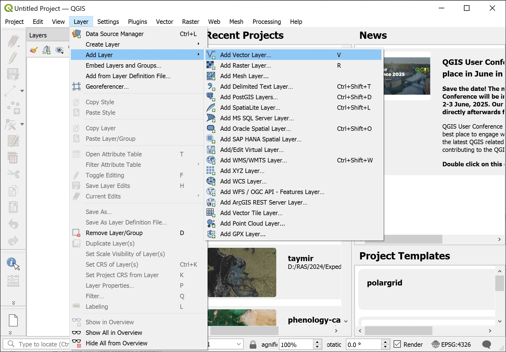 ](#selectvector) ] ] --- name: selectvector .toc.sidebar.left-column[ .outline[ # [Подготовка ](#Hdc8d2) # [Сбор данных ](#H0db48) # [Переброс данных](#Hca4d1).fg[] ## [Из учётного листа ](#findings) ## [С GPS](#gps).fg[] ### [Формат GDB ](#H99577) ### [Формат GPX](#gpx) ### [Импорт в QGIS ](#menulayer) <span class="bullet bullet">[•](#menulayer)</span><span class="bullet bullet-active">[•](#selectvector)</span><span class="bullet mslide43m">[•](#selectlayers)</span><span class="bullet mslide44m">[•](#addlayers)</span>.fg[].bg[] ## [С фотоаппарата ](#Hef552) ## [После авиаучёта ](#H24348) # [Треки ](#H7f976) # [Находки ](#Hec8ea) # [Анализ ](#analysis-gebco) ] ] .toc.mainbar.right-column.scrollable[ .header.h3.broad[ Импорт в QGIS .parent[.grand[С GPS .grand[Переброс данных]]] ] .fixprecode[ [ 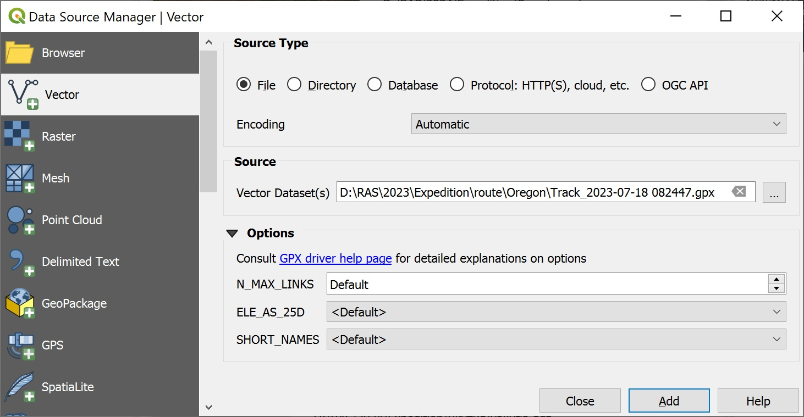 ](#selectlayers) ] ] --- name: selectlayers .toc.sidebar.left-column[ .outline[ # [Подготовка ](#Hdc8d2) # [Сбор данных ](#H0db48) # [Переброс данных](#Hca4d1).fg[] ## [Из учётного листа ](#findings) ## [С GPS](#gps).fg[] ### [Формат GDB ](#H99577) ### [Формат GPX](#gpx) ### [Импорт в QGIS ](#menulayer) <span class="bullet bullet">[•](#menulayer)</span><span class="bullet bullet">[•](#selectvector)</span><span class="bullet bullet-active">[•](#selectlayers)</span><span class="bullet mslide44m">[•](#addlayers)</span>.fg[].bg[] ## [С фотоаппарата ](#Hef552) ## [После авиаучёта ](#H24348) # [Треки ](#H7f976) # [Находки ](#Hec8ea) # [Анализ ](#analysis-gebco) ] ] .toc.mainbar.right-column.scrollable[ .header.h3.broad[ Импорт в QGIS .parent[.grand[С GPS .grand[Переброс данных]]] ] .fixprecode[ [ 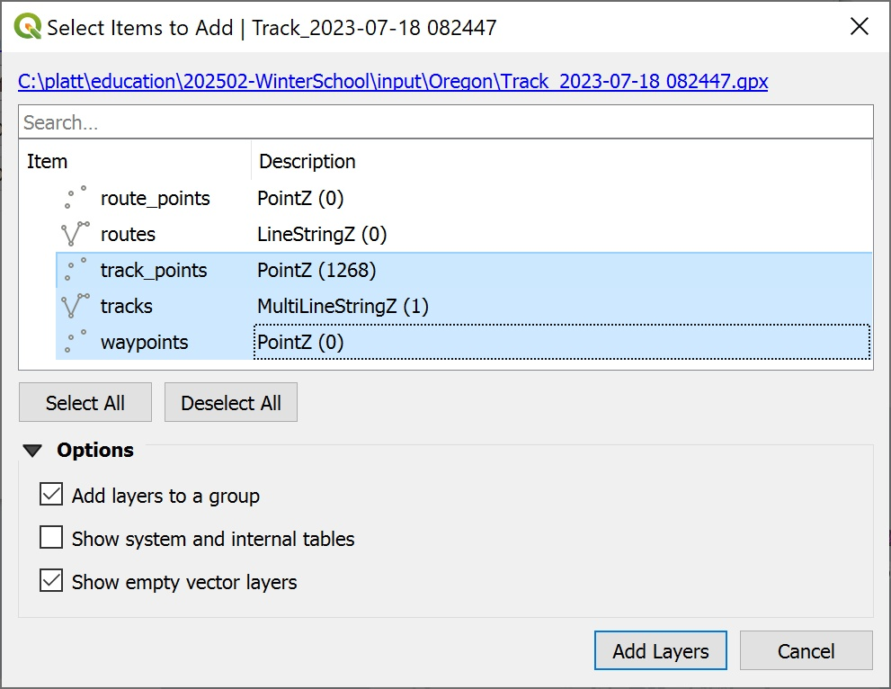 ](#addlayers) ] ] --- name: addlayers .toc.sidebar.left-column[ .outline[ # [Подготовка ](#Hdc8d2) # [Сбор данных ](#H0db48) # [Переброс данных](#Hca4d1).fg[] ## [Из учётного листа ](#findings) ## [С GPS](#gps).fg[] ### [Формат GDB ](#H99577) ### [Формат GPX](#gpx) ### [Импорт в QGIS ](#menulayer) <span class="bullet bullet">[•](#menulayer)</span><span class="bullet bullet">[•](#selectvector)</span><span class="bullet bullet">[•](#selectlayers)</span><span class="bullet bullet-active">[•](#addlayers)</span>.fg[].bg[] ## [С фотоаппарата ](#Hef552) ## [После авиаучёта ](#H24348) # [Треки ](#H7f976) # [Находки ](#Hec8ea) # [Анализ ](#analysis-gebco) ] ] .toc.mainbar.right-column.scrollable[ .header.h3.broad[ Импорт в QGIS .parent[.grand[С GPS .grand[Переброс данных]]] ] .fixprecode[ [ 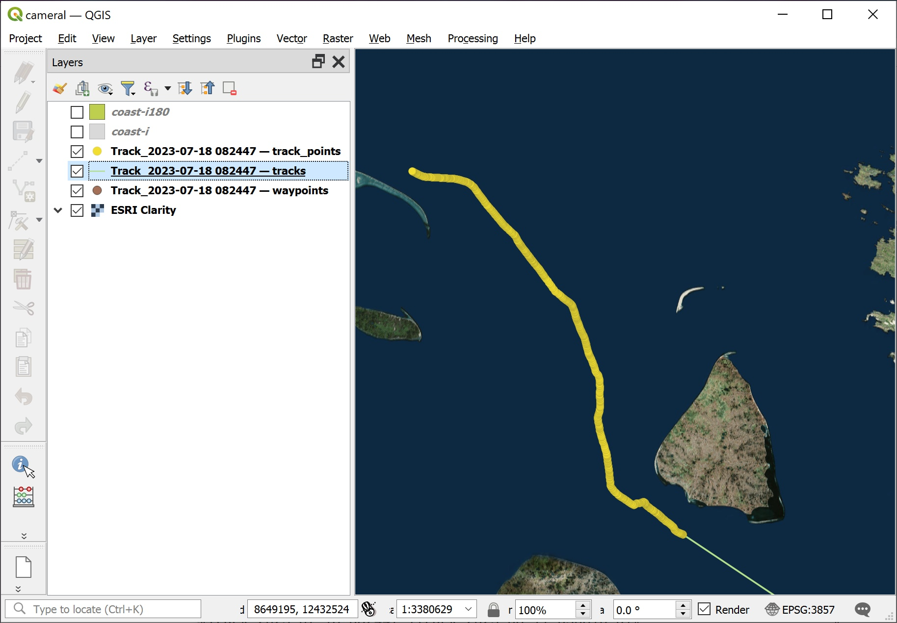 ](#trackinqgis) ] ] --- name: Hef552 .toc.sidebar.left-column[ .outline[ # [Подготовка ](#Hdc8d2) # [Сбор данных ](#H0db48) # [Переброс данных](#Hca4d1).fg[] ## [Из учётного листа ](#findings) ## [С GPS](#gps) ## [С фотоаппарата ](#Hef552).fg[].bg[] ### [EXIF в QGIS ](#H54813) ### [EXIF в R ](#Hdb25c) ### [Переименование в R ](#H5019a) ### [Другие программы ](#H923f3) ## [После авиаучёта ](#H24348) # [Треки ](#H7f976) # [Находки ](#Hec8ea) # [Анализ ](#analysis-gebco) ] ] .toc.mainbar.right-column.scrollable[ .header.h2.broad[ С фотоаппарата .parent[.grand[Переброс данных]] ] .fixprecode[ Переименовать исходные файлы + в новом имени файла должна содержаться информация о времени съемки + убедиться, что EXIF не пропадает .scrollable.explorer[ ``` size isdir mode mtime exe 20230718-012638-2408.jpg 559244 FALSE 666 2023-07-17 22:26:38 no 20230718-012639-2409.jpg 549317 FALSE 666 2023-07-17 22:26:40 no 20230718-012639-2410.jpg 554643 FALSE 666 2023-07-17 22:26:40 no 20230718-012639-2411.jpg 551275 FALSE 666 2023-07-17 22:26:40 no 20230718-012805-2412.jpg 590298 FALSE 666 2023-07-17 22:28:04 no 20230718-012805-2413.jpg 583264 FALSE 666 2023-07-17 22:28:04 no 20230718-012858-2414.jpg 697853 FALSE 666 2023-07-17 22:28:58 no 20230718-012859-2415.jpg 703233 FALSE 666 2023-07-17 22:28:58 no 20230718-012900-2416.jpg 689682 FALSE 666 2023-07-17 22:29:00 no 20230718-012935-2417.jpg 654982 FALSE 666 2023-07-17 22:29:34 no 20230718-012935-2418.jpg 663912 FALSE 666 2023-07-17 22:29:36 no 20230718-013018-2419.jpg 559580 FALSE 666 2023-07-17 22:30:18 no 20230718-013018-2420.jpg 550939 FALSE 666 2023-07-17 22:30:18 no 20230718-013111-2430.jpg 631630 FALSE 666 2023-07-17 22:31:12 no 20230718-013119-2431.jpg 624154 FALSE 666 2023-07-17 22:31:18 no 20230718-013121-2432.jpg 620069 FALSE 666 2023-07-17 22:31:20 no 20230718-014054-2433.jpg 628477 FALSE 666 2023-07-17 22:40:54 no 20230718-014055-2434.jpg 626081 FALSE 666 2023-07-17 22:40:56 no 20230718-014055-2435.jpg 634811 FALSE 666 2023-07-17 22:40:56 no 20230718-151545-3877.jpg 1021547 FALSE 666 2023-07-18 12:15:44 no ``` ] Время съёмки извлекать из EXIF. Очень часто при серийной съемке изображения находятся в оперативной памяти фотоаппарата и последовательно записываются на карту памяти. Этот процесс может занять несколько секунд. Это наиболее критично при авиаучётах. ] ] --- name: H54813 .toc.sidebar.left-column[ .outline[ # [Подготовка ](#Hdc8d2) # [Сбор данных ](#H0db48) # [Переброс данных](#Hca4d1).fg[] ## [Из учётного листа ](#findings) ## [С GPS](#gps) ## [С фотоаппарата ](#Hef552).fg[] ### [EXIF в QGIS ](#H54813) <span class="bullet bullet-active">[•](#H54813)</span><span class="bullet mslide47m">[•](#H2a901)</span><span class="bullet mslide48m">[•](#Hba2f0)</span><span class="bullet mslide49m">[•](#Hcd283)</span>.fg[].bg[] ### [EXIF в R ](#Hdb25c) ### [Переименование в R ](#H5019a) ### [Другие программы ](#H923f3) ## [После авиаучёта ](#H24348) # [Треки ](#H7f976) # [Находки ](#Hec8ea) # [Анализ ](#analysis-gebco) ] ] .toc.mainbar.right-column.scrollable[ .header.h3.broad[ EXIF в QGIS .parent[.grand[С фотоаппарата .grand[Переброс данных]]] ] .fixprecode[ 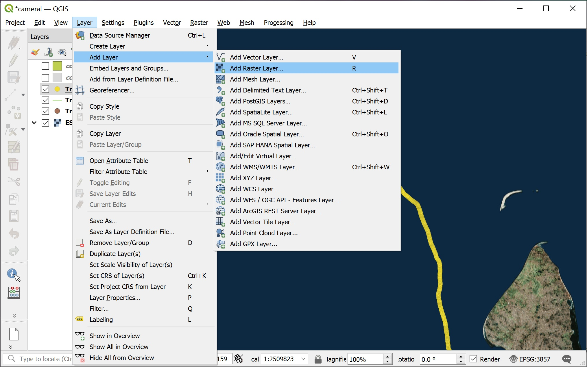 ] ] --- name: H2a901 .toc.sidebar.left-column[ .outline[ # [Подготовка ](#Hdc8d2) # [Сбор данных ](#H0db48) # [Переброс данных](#Hca4d1).fg[] ## [Из учётного листа ](#findings) ## [С GPS](#gps) ## [С фотоаппарата ](#Hef552).fg[] ### [EXIF в QGIS ](#H54813) <span class="bullet bullet">[•](#H54813)</span><span class="bullet bullet-active">[•](#H2a901)</span><span class="bullet mslide48m">[•](#Hba2f0)</span><span class="bullet mslide49m">[•](#Hcd283)</span>.fg[].bg[] ### [EXIF в R ](#Hdb25c) ### [Переименование в R ](#H5019a) ### [Другие программы ](#H923f3) ## [После авиаучёта ](#H24348) # [Треки ](#H7f976) # [Находки ](#Hec8ea) # [Анализ ](#analysis-gebco) ] ] .toc.mainbar.right-column.scrollable[ .header.h3.broad[ EXIF в QGIS .parent[.grand[С фотоаппарата .grand[Переброс данных]]] ] .fixprecode[ 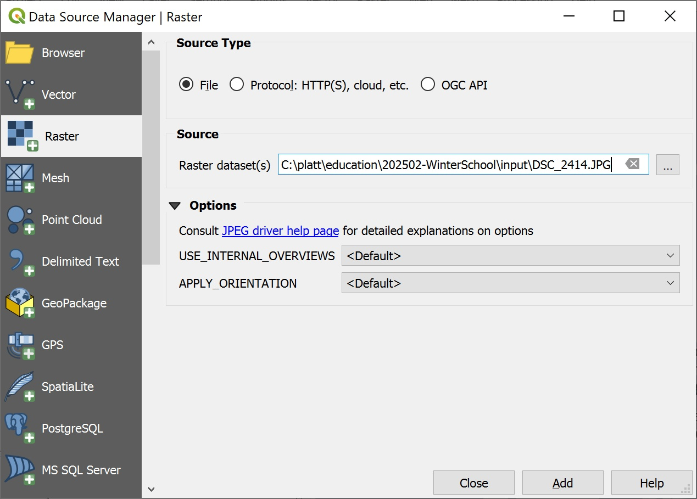 ] ] --- name: Hba2f0 .toc.sidebar.left-column[ .outline[ # [Подготовка ](#Hdc8d2) # [Сбор данных ](#H0db48) # [Переброс данных](#Hca4d1).fg[] ## [Из учётного листа ](#findings) ## [С GPS](#gps) ## [С фотоаппарата ](#Hef552).fg[] ### [EXIF в QGIS ](#H54813) <span class="bullet bullet">[•](#H54813)</span><span class="bullet bullet">[•](#H2a901)</span><span class="bullet bullet-active">[•](#Hba2f0)</span><span class="bullet mslide49m">[•](#Hcd283)</span>.fg[].bg[] ### [EXIF в R ](#Hdb25c) ### [Переименование в R ](#H5019a) ### [Другие программы ](#H923f3) ## [После авиаучёта ](#H24348) # [Треки ](#H7f976) # [Находки ](#Hec8ea) # [Анализ ](#analysis-gebco) ] ] .toc.mainbar.right-column.scrollable[ .header.h3.broad[ EXIF в QGIS .parent[.grand[С фотоаппарата .grand[Переброс данных]]] ] .fixprecode[ 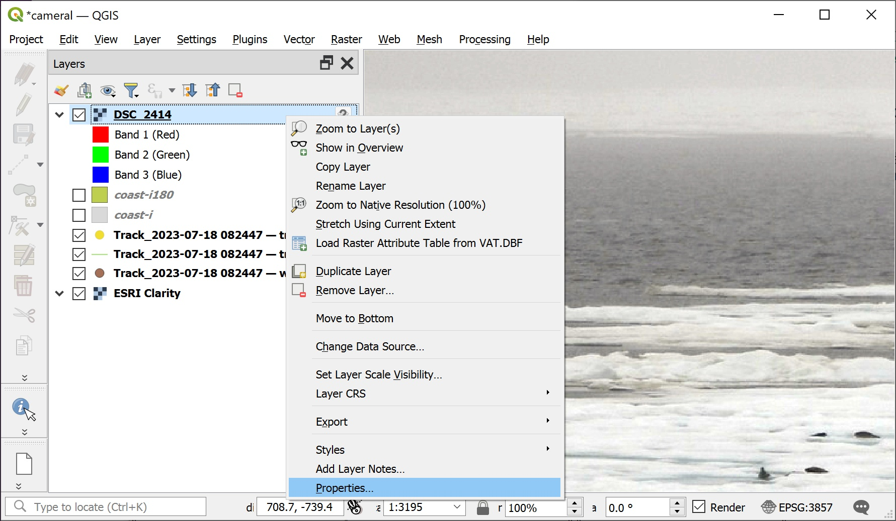 ] ] --- name: Hcd283 .toc.sidebar.left-column[ .outline[ # [Подготовка ](#Hdc8d2) # [Сбор данных ](#H0db48) # [Переброс данных](#Hca4d1).fg[] ## [Из учётного листа ](#findings) ## [С GPS](#gps) ## [С фотоаппарата ](#Hef552).fg[] ### [EXIF в QGIS ](#H54813) <span class="bullet bullet">[•](#H54813)</span><span class="bullet bullet">[•](#H2a901)</span><span class="bullet bullet">[•](#Hba2f0)</span><span class="bullet bullet-active">[•](#Hcd283)</span>.fg[].bg[] ### [EXIF в R ](#Hdb25c) ### [Переименование в R ](#H5019a) ### [Другие программы ](#H923f3) ## [После авиаучёта ](#H24348) # [Треки ](#H7f976) # [Находки ](#Hec8ea) # [Анализ ](#analysis-gebco) ] ] .toc.mainbar.right-column.scrollable[ .header.h3.broad[ EXIF в QGIS .parent[.grand[С фотоаппарата .grand[Переброс данных]]] ] .fixprecode[ 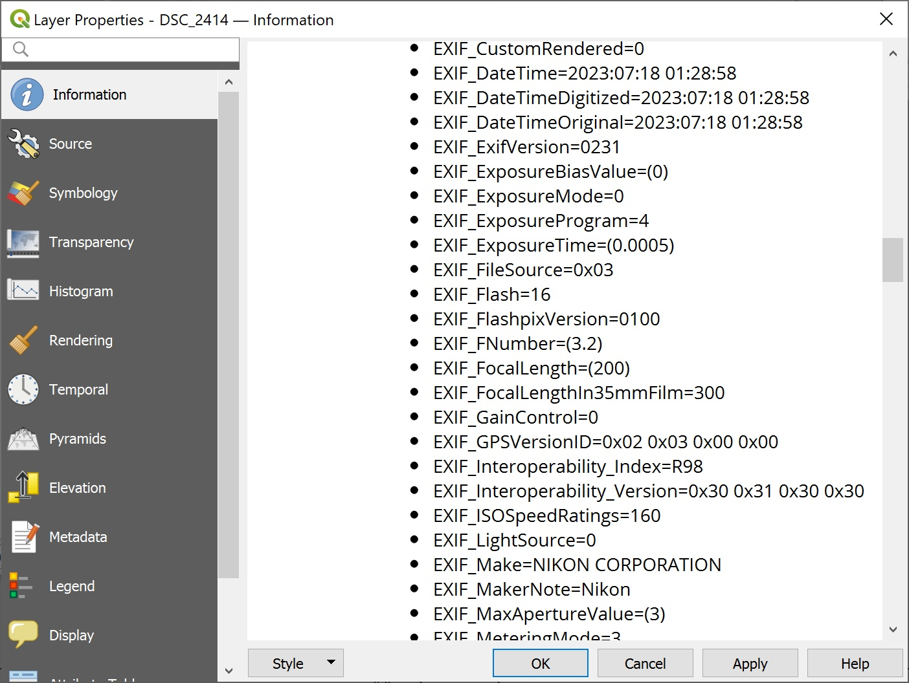 ] ] --- name: Hdb25c .toc.sidebar.left-column[ .outline[ # [Подготовка ](#Hdc8d2) # [Сбор данных ](#H0db48) # [Переброс данных](#Hca4d1).fg[] ## [Из учётного листа ](#findings) ## [С GPS](#gps) ## [С фотоаппарата ](#Hef552).fg[] ### [EXIF в QGIS ](#H54813) ### [EXIF в R ](#Hdb25c).fg[].bg[] ### [Переименование в R ](#H5019a) ### [Другие программы ](#H923f3) ## [После авиаучёта ](#H24348) # [Треки ](#H7f976) # [Находки ](#Hec8ea) # [Анализ ](#analysis-gebco) ] ] .toc.mainbar.right-column.scrollable[ .header.h3.broad[ EXIF в R .parent[.grand[С фотоаппарата .grand[Переброс данных]]] ] .fixprecode[ ``` r sf::gdal_utils("info","input/DSC_2414.JPG") ``` ``` Driver: JPEG/JPEG JFIF Files: input/DSC_2414.JPG Size is 2144, 1429 Metadata: EXIF_Artist= EXIF_CFAPattern=0x02 0x00 0x02 0x00 0x00 0x01 0x01 0x02 EXIF_ColorSpace=1 EXIF_ComponentsConfiguration=0x01 0x02 0x03 0x00 EXIF_CompressedBitsPerPixel=(4) EXIF_Contrast=0 EXIF_Copyright= EXIF_CustomRendered=0 EXIF_DateTime=2023:07:18 01:28:58 EXIF_DateTimeDigitized=2023:07:18 01:28:58 EXIF_DateTimeOriginal=2023:07:18 01:28:58 EXIF_ExifVersion=0231 EXIF_ExposureBiasValue=(0) EXIF_ExposureMode=0 EXIF_ExposureProgram=4 EXIF_ExposureTime=(0.0005) EXIF_FileSource=0x03 EXIF_Flash=16 EXIF_FlashpixVersion=0100 EXIF_FNumber=(3.2) EXIF_FocalLength=(200) EXIF_FocalLengthIn35mmFilm=300 EXIF_GainControl=0 EXIF_GPSVersionID=0x02 0x03 0x00 0x00 EXIF_Interoperability_Index=R98 EXIF_Interoperability_Version=0x30 0x31 0x30 0x30 EXIF_ISOSpeedRatings=160 EXIF_LightSource=0 EXIF_Make=NIKON CORPORATION EXIF_MakerNote=Nikon EXIF_MaxApertureValue=(3) EXIF_MeteringMode=3 EXIF_Model=NIKON D7500 EXIF_OffsetTime=+00:00 EXIF_OffsetTimeDigitized=+00:00 EXIF_OffsetTimeOriginal=+00:00 EXIF_Orientation=1 EXIF_PixelXDimension=2144 EXIF_PixelYDimension=1429 EXIF_RecommendedExposureIndex=160 EXIF_ResolutionUnit=2 EXIF_Saturation=0 EXIF_SceneCaptureType=0 EXIF_SceneType=0x01 EXIF_SensingMethod=2 EXIF_SensitivityType=2 EXIF_Sharpness=0 EXIF_Software=Ver.1.10 EXIF_SubjectDistanceRange=0 EXIF_SubSecTime=58 EXIF_SubSecTime_Digitized=58 EXIF_SubSecTime_Original=58 EXIF_UserComment= EXIF_WhiteBalance=0 EXIF_XResolution=(300) EXIF_YCbCrPositioning=2 EXIF_YResolution=(300) Image Structure Metadata: SOURCE_COLOR_SPACE=YCbCr INTERLEAVE=PIXEL COMPRESSION=JPEG JPEG_QUALITY=95 Corner Coordinates: Upper Left ( 0.0, 0.0) Lower Left ( 0.0, 1429.0) Upper Right ( 2144.0, 0.0) Lower Right ( 2144.0, 1429.0) Center ( 1072.0, 714.5) Band 1 Block=2144x1 Type=Byte, ColorInterp=Red Overviews: 1072x715, 536x358, 268x179, 160x107 Image Structure Metadata: COMPRESSION=JPEG Band 2 Block=2144x1 Type=Byte, ColorInterp=Green Overviews: 1072x715, 536x358, 268x179, 160x107 Image Structure Metadata: COMPRESSION=JPEG Band 3 Block=2144x1 Type=Byte, ColorInterp=Blue Overviews: 1072x715, 536x358, 268x179, 160x107 Image Structure Metadata: COMPRESSION=JPEG ``` ] ] --- name: H5019a .toc.sidebar.left-column[ .outline[ # [Подготовка ](#Hdc8d2) # [Сбор данных ](#H0db48) # [Переброс данных](#Hca4d1).fg[] ## [Из учётного листа ](#findings) ## [С GPS](#gps) ## [С фотоаппарата ](#Hef552).fg[] ### [EXIF в QGIS ](#H54813) ### [EXIF в R ](#Hdb25c) ### [Переименование в R ](#H5019a).fg[].bg[] ### [Другие программы ](#H923f3) ## [После авиаучёта ](#H24348) # [Треки ](#H7f976) # [Находки ](#Hec8ea) # [Анализ ](#analysis-gebco) ] ] .toc.mainbar.right-column.scrollable[ .header.h3.broad[ Переименование в R .parent[.grand[С фотоаппарата .grand[Переброс данных]]] ] .fixprecode[ ``` r (src <- file.path(dpath,"input","DSC_2414.JPG")) ``` ``` [1] "../input/DSC_2414.JPG" ``` ``` r file.info(src) ``` ``` size isdir mode mtime ctime ../input/DSC_2414.JPG 697853 FALSE 666 2023-07-17 22:28:58 2025-01-03 15:43:31 atime exe ../input/DSC_2414.JPG 2025-01-11 06:38:07 no ``` ``` r photoID <- gsub(".*\\D(\\d{4})\\D.*","\\1",basename(src)) a <- sf::gdal_utils("info",src,quiet=TRUE) a <- strsplit(a,split="\\n")[[1]] patt1 <- "\\s*EXIF_DateTimeOriginal=(.+)" if (length(ind1 <- grep(patt1,a))==1) { t3 <- gsub(patt1,"\\1",a[ind1]) t3 <- as.POSIXct(t3,format="%Y:%m:%d %H:%M:%S",tz="UTC") patt2 <- "\\s*EXIF_OffsetTimeOriginal=(.+)" if (length(ind2 <- grep(patt2,a))==1) { tz3 <- gsub(patt2,"\\1",a[ind2]) print(c(TZ=tz3)) t3 <- t3-(as.difftime(as.numeric(gsub("^(.+):(.+)$","\\1",tz3))+ as.numeric(gsub("^(.+):(.+)$","\\2",tz3))/60,units="hours")) t3 <- as.POSIXct(t3,tz=tz[user]) } print(c(t3=t3)) print(c(photoID=photoID)) dst <- file.path(dpath,"output",paste0(format(t3,"%Y%m%d-%H%M%S-"),photoID ,tolower(gsub(".*(\\..+$)","\\1",basename(src))) )) print(data.frame('src'=src,'dst'=dst)) # file.rename(src,dst) print(c(copying=file.copy(src,dst,overwrite=TRUE,copy.date=TRUE))) } ``` ``` TZ "+00:00" t3 "2023-07-18 01:28:58 UTC" photoID "2414" src dst 1 ../input/DSC_2414.JPG ../output/20230718-012858-2414.jpg copying TRUE ``` ] ] --- name: H923f3 .toc.sidebar.left-column[ .outline[ # [Подготовка ](#Hdc8d2) # [Сбор данных ](#H0db48) # [Переброс данных](#Hca4d1).fg[] ## [Из учётного листа ](#findings) ## [С GPS](#gps) ## [С фотоаппарата ](#Hef552).fg[] ### [EXIF в QGIS ](#H54813) ### [EXIF в R ](#Hdb25c) ### [Переименование в R ](#H5019a) ### [Другие программы ](#H923f3).fg[].bg[] ## [После авиаучёта ](#H24348) # [Треки ](#H7f976) # [Находки ](#Hec8ea) # [Анализ ](#analysis-gebco) ] ] .toc.mainbar.right-column.scrollable[ .header.h3.broad[ Другие программы .parent[.grand[С фотоаппарата .grand[Переброс данных]]] ] .fixprecode[ + Irfanview + ... ] ] --- name: H24348 .toc.sidebar.left-column[ .outline[ # [Подготовка ](#Hdc8d2) # [Сбор данных ](#H0db48) # [Переброс данных](#Hca4d1).fg[] ## [Из учётного листа ](#findings) ## [С GPS](#gps) ## [С фотоаппарата ](#Hef552) ## [После авиаучёта ](#H24348) <span class="bullet bullet-active">[•](#H24348)</span><span class="bullet mslide54m">[•](#Haa827)</span><span class="bullet mslide55m">[•](#Hdd854)</span>.fg[].bg[] # [Треки ](#H7f976) # [Находки ](#Hec8ea) # [Анализ ](#analysis-gebco) ] ] .toc.mainbar.right-column.scrollable[ .header.h2.broad[ После авиаучёта .parent[.grand[Переброс данных]] ] .fixprecode[ Полётное время и дальность полёта не позволяет провести учёт галсами Учёт наиболее населенной страты местообитаний, с манёврами. Таблица находок формируется в ГИС с целью исключить повторный учёт ] ] --- name: Haa827 .toc.sidebar.left-column[ .outline[ # [Подготовка ](#Hdc8d2) # [Сбор данных ](#H0db48) # [Переброс данных](#Hca4d1).fg[] ## [Из учётного листа ](#findings) ## [С GPS](#gps) ## [С фотоаппарата ](#Hef552) ## [После авиаучёта ](#H24348) <span class="bullet bullet">[•](#H24348)</span><span class="bullet bullet-active">[•](#Haa827)</span><span class="bullet mslide55m">[•](#Hdd854)</span>.fg[].bg[] # [Треки ](#H7f976) # [Находки ](#Hec8ea) # [Анализ ](#analysis-gebco) ] ] .toc.mainbar.right-column.scrollable[ .header.h2.broad[ После авиаучёта .parent[.grand[Переброс данных]] ] .fixprecode[ 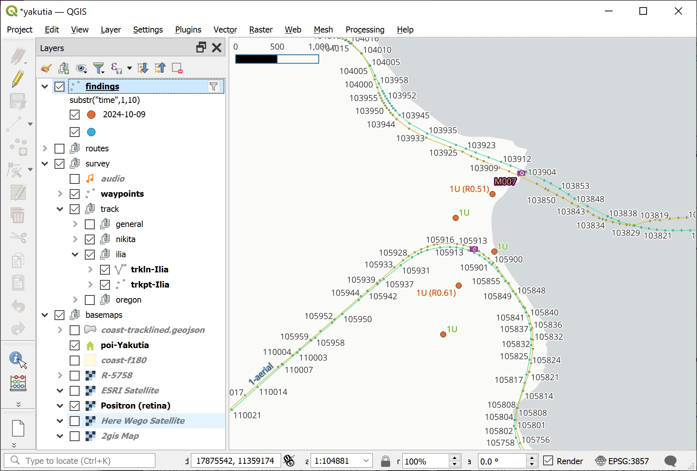 ] ] --- name: Hdd854 .toc.sidebar.left-column[ .outline[ # [Подготовка ](#Hdc8d2) # [Сбор данных ](#H0db48) # [Переброс данных](#Hca4d1).fg[] ## [Из учётного листа ](#findings) ## [С GPS](#gps) ## [С фотоаппарата ](#Hef552) ## [После авиаучёта ](#H24348) <span class="bullet bullet">[•](#H24348)</span><span class="bullet bullet">[•](#Haa827)</span><span class="bullet bullet-active">[•](#Hdd854)</span>.fg[].bg[] # [Треки ](#H7f976) # [Находки ](#Hec8ea) # [Анализ ](#analysis-gebco) ] ] .toc.mainbar.right-column.scrollable[ .header.h2.broad[ После авиаучёта .parent[.grand[Переброс данных]] ] .fixprecode[ 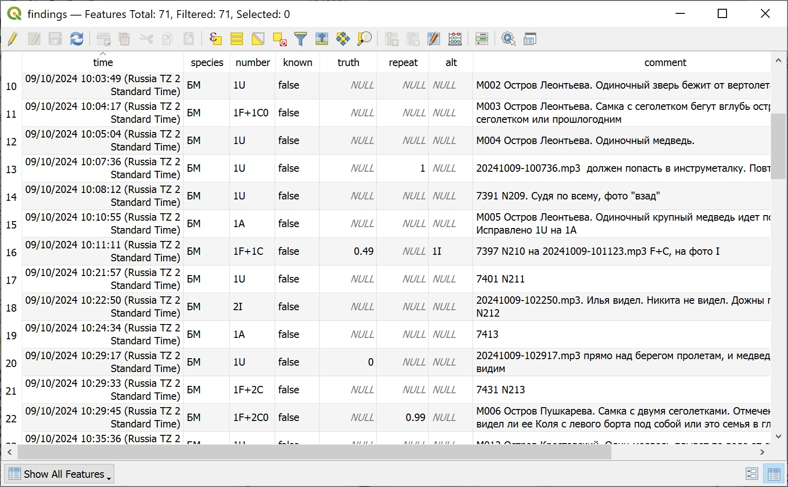 ] ] --- name: H7f976 .toc.sidebar.left-column[ .outline[ # [Подготовка ](#Hdc8d2) # [Сбор данных ](#H0db48) # [Переброс данных](#Hca4d1) # [Треки ](#H7f976).fg[].bg[] ## [Объединение фрагментов ](#H73e82) ## [Визуализация ](#H8752d) # [Находки ](#Hec8ea) # [Анализ ](#analysis-gebco) ] ] .toc.mainbar.right-column.scrollable[ .header.h1.broad[ Треки ] .fixprecode[ Треки - запись фактического маршрута. Непрерывный трек желателен для включения в отчёт. Непрерывная запись треков маловероятна: + Выключение устройства с целью замены батареек/аккумуляторов. + .serga[Батарейки сели] + Спутники нашлись не сразу или забыли вовремя включить В итоге, запись маршрута фрагментарна. Необходимость объединения фрагментов. ] ] --- name: H73e82 .toc.sidebar.left-column[ .outline[ # [Подготовка ](#Hdc8d2) # [Сбор данных ](#H0db48) # [Переброс данных](#Hca4d1) # [Треки ](#H7f976).fg[] ## [Объединение фрагментов ](#H73e82).fg[].bg[] ### [в R ](#Hb4560) ## [Визуализация ](#H8752d) # [Находки ](#Hec8ea) # [Анализ ](#analysis-gebco) ] ] .toc.mainbar.right-column.scrollable[ .header.h2.broad[ Объединение фрагментов .parent[.grand[Треки]] ] .fixprecode[ Запись трека осуществлялась несколькми устройствами. Устройство «Zhenya» находилось в каюте, устройство «Oregon» – у наблюдателя. Приоритетным считается устройство наблюдателя, но в случае отсутствия записи с устройства наблюдателя используются записи с запасного устройстваю ] ] --- name: Hb4560 .toc.sidebar.left-column[ .outline[ # [Подготовка ](#Hdc8d2) # [Сбор данных ](#H0db48) # [Переброс данных](#Hca4d1) # [Треки ](#H7f976).fg[] ## [Объединение фрагментов ](#H73e82).fg[] ### [в R ](#Hb4560).fg[].bg[] ## [Визуализация ](#H8752d) # [Находки ](#Hec8ea) # [Анализ ](#analysis-gebco) ] ] .toc.mainbar.right-column.scrollable[ .header.h3.broad[ в R .parent[.grand[Объединение фрагментов .grand[Треки]]] ] .fixprecode[ ``` r Sys.setenv(TZ="UTC") t0 <- as.POSIXct("2023-07-04") call <- knitr::opts_current$get("params.src") dpath <- if (is.null(call)) "." else "resources" 'getTrack' <- function(device,vehicle=FALSE,ltraj=FALSE,inside=NULL) { if (missing(device)) return(NULL) if (!ursa::is_spatial(device)) { list1 <- dir(path=file.path(dpath,device) ,pattern=".*20[x2]3.+\\.gpx$",full.names=TRUE) res <- lapply(list1,\(fname) { a <- sf::st_read(fname,layer="track_points",quiet=TRUE)[,1:5] a <- a[!is.na(a$time),] if (!ursa::spatial_count(a)) return(NULL) taf <- table(track_fid=a$track_fid) tas <- table(track_seg_id=a$track_seg_id) if (length(tas)>length(taf)) { b <- by(a,a$track_seg_id,\(x) x) } else { b <- by(a,a$track_fid,\(x) x) } a <- lapply(b,\(x) { rt <- range(x$time) y <- ursa::trackline(x) len <- ursa::spatial_length(y) dur <- as.numeric(diff(range(x$time)),units="hours") speed <- len*1e-3/dur sa <- data.frame(n=ursa::spatial_count(x),length=len,dur=dur,speed=speed ,from=rt[1],to=rt[2]) cond1 <- sa$dur>10/60 & sa$n>10 sa <- sa[cond1,] if (!cond1) return(NULL) x$device <- tolower(device) x$segment <- digest::digest(x,"crc32") tail(x[,c("time","ele","device","segment")],-1) }) |> do.call(ursa::spatial_bind,args=_) a }) |> ursa::spatial_bind() res <- res[order(res$time),] if (vehicle) { if (length(ind <- grep("^(cruise|road)",res$survey,invert=TRUE))) { res <- res[-ind,] } } if (!is.null(inside)) { cond <- vector("list",nrow(inside)) for (i in seq(nrow(inside))) { if (!inside$fill[i]) cond[[i]] <- integer() else { j <- which(res$time>inside$begin[i] & res$time<inside$end[i]) cond[[i]] <- j } } cond <- sort(unlist(cond)) if (!length(cond)) return(NULL) res <- res[cond,] } res$id <- "merge" } else { res <- device ltraj <- TRUE } if (!ltraj) return(res) if (length(ind <- which(duplicated(res$time)))) { res <- res[-ind,] } res2 <- adehabitatLT::as.ltraj(sf::st_coordinates(res) ,date=res$time ,id=res$id ,proj4string=sp::CRS(sf::st_crs(res)$proj4string) ) opW <- options(warn=-1) res3 <- adehabitatLT::cutltraj(res2,"dt>c(days=1)*c(hour=1)*c(min=12)*c(sec=60)" ,nextr=TRUE) options(opW) res3 } 'inside' <- function(device,dt=as.difftime(12,units="mins"),dl=50) { if (is.null(device)) return(NULL) ind1 <- which(diff(device$time)>dt) begin <- c(t0,device$time[ind1],max(device$time)+1) end <- c(min(device$time)-1,device$time[ind1+1],as.POSIXct(Sys.Date()+1)) ret <- data.frame(from=c(NA,ind1,NA),to=c(NA,ind1+1,NA) ,device=head(device$device,1) ,begin=begin ,end=end ,length=NA ,fill=TRUE ) for (i in seq(nrow(ret)) |> sample()) { ind <- c(ret$from[i],ret$to[i]) if (anyNA(ind)) next ret$length[i] <- ursa::trackline(device[ind,]) |> ursa::spatial_length() |> round() } ret$dt <- as.numeric(ret$end-ret$begin,units="hours") |> round(1) ret$fill[ret$length<dl] <- FALSE ret } 'suppl' <- function(main,suppl,vehicle=FALSE) { more <- getTrack(suppl,inside=inside(main),vehicle=vehicle,ltraj=!TRUE) main <- ursa::spatial_bind(main,more) main <- main[order(main$time),] main } priority <- list(oregon=c("Oregon","Zhenya")) pname <- names(priority) for (i in seq_along(priority)) { message(pname[i],":") vehicle <- pname[i] %in% "general" main <- getTrack() for (device in priority[[i]]) { message(" ",device,":") main <- suppl(main,device,vehicle=vehicle) } print(getTrack(main,ltraj=TRUE)) main <- main[,c("id","time","ele","device")] fname <- file.path(dpath,paste0("track-",pname[i],".geojson")) ursa::spatial_write(main,fname) tr <- ursa::trackline(main,by=main$id,connect="united") dst <- file.path(dirname(fname),gsub("^track","trackline",basename(fname))) ursa::spatial_write(tr,dst) } ``` ] ] --- name: H8752d .toc.sidebar.left-column[ .outline[ # [Подготовка ](#Hdc8d2) # [Сбор данных ](#H0db48) # [Переброс данных](#Hca4d1) # [Треки ](#H7f976).fg[] ## [Объединение фрагментов ](#H73e82) ## [Визуализация ](#H8752d).fg[] ### [в R ](#H8752d) <span class="bullet bullet-active">[•](#H8752d)</span><span class="bullet mslide61m">[•](#Hf1c5d)</span><span class="bullet mslide62m">[•](#H68cc8)</span><span class="bullet mslide63m">[•](#H1fcbb)</span>.fg[].bg[] ### [в QGIS ](#H3f04d) # [Находки ](#Hec8ea) # [Анализ ](#analysis-gebco) ] ] .toc.mainbar.right-column.scrollable[ .header.h3.broad[ в R .parent[.grand[Визуализация .grand[Треки]]] ] .fixprecode[ ``` r require(ursa) (trkpt <- spatial_read("input/track-general.geojson")) ``` ``` Simple feature collection with 32460 features and 4 fields Geometry type: POINT Dimension: XY Bounding box: xmin: 38.43368 ymin: 64.52775 xmax: 82.7288 ymax: 80.66036 Geodetic CRS: WGS 84 First 10 features: id time ele device geometry 1 merge 2023-07-04 07:33:55 -6.75 zhenya POINT (40.50959 64.52775) 2 merge 2023-07-04 07:34:55 -6.27 zhenya POINT (40.50934 64.52817) 3 merge 2023-07-04 07:35:55 -6.41 zhenya POINT (40.50905 64.52894) 4 merge 2023-07-04 07:36:55 -6.22 zhenya POINT (40.50886 64.52983) 5 merge 2023-07-04 07:37:55 -6.12 zhenya POINT (40.50879 64.53007) 6 merge 2023-07-04 07:38:55 -6.62 zhenya POINT (40.5086 64.52963) 7 merge 2023-07-04 07:39:55 -6.96 zhenya POINT (40.50757 64.52891) 8 merge 2023-07-04 07:40:55 -6.93 zhenya POINT (40.50627 64.5284) 9 merge 2023-07-04 07:41:55 -7.51 zhenya POINT (40.50543 64.52821) 10 merge 2023-07-04 07:42:55 -7.51 zhenya POINT (40.50544 64.52838) ``` ``` r (trkln <- trackline(trkpt)) ``` ``` Geometry set for 1 feature Geometry type: LINESTRING Dimension: XY Bounding box: xmin: 38.43368 ymin: 64.52775 xmax: 82.7288 ymax: 80.66036 Geodetic CRS: WGS 84 ``` ] ] --- name: Hf1c5d .toc.sidebar.left-column[ .outline[ # [Подготовка ](#Hdc8d2) # [Сбор данных ](#H0db48) # [Переброс данных](#Hca4d1) # [Треки ](#H7f976).fg[] ## [Объединение фрагментов ](#H73e82) ## [Визуализация ](#H8752d).fg[] ### [в R ](#H8752d) <span class="bullet bullet">[•](#H8752d)</span><span class="bullet bullet-active">[•](#Hf1c5d)</span><span class="bullet mslide62m">[•](#H68cc8)</span><span class="bullet mslide63m">[•](#H1fcbb)</span>.fg[].bg[] ### [в QGIS ](#H3f04d) # [Находки ](#Hec8ea) # [Анализ ](#analysis-gebco) ] ] .toc.mainbar.right-column.scrollable[ .header.h3.broad[ в R .parent[.grand[Визуализация .grand[Треки]]] ] .fixprecode[ ``` r glance(trkln,style="2gis") ``` 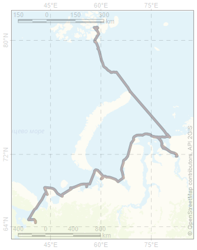 ] ] --- name: H68cc8 .toc.sidebar.left-column[ .outline[ # [Подготовка ](#Hdc8d2) # [Сбор данных ](#H0db48) # [Переброс данных](#Hca4d1) # [Треки ](#H7f976).fg[] ## [Объединение фрагментов ](#H73e82) ## [Визуализация ](#H8752d).fg[] ### [в R ](#H8752d) <span class="bullet bullet">[•](#H8752d)</span><span class="bullet bullet">[•](#Hf1c5d)</span><span class="bullet bullet-active">[•](#H68cc8)</span><span class="bullet mslide63m">[•](#H1fcbb)</span>.fg[].bg[] ### [в QGIS ](#H3f04d) # [Находки ](#Hec8ea) # [Анализ ](#analysis-gebco) ] ] .toc.mainbar.right-column.scrollable[ .header.h3.broad[ в R .parent[.grand[Визуализация .grand[Треки]]] ] .fixprecode[ ``` r trkdaily <- trackline(trkpt,by=list('Дата'=as.Date(trkpt$time))) ct <- colorize(trkdaily$'Дата',pal.bright=127,pal.rotate="circle") |> ursa_colortable() glance(trkdaily["Дата"],col=ct,resetGrid=TRUE,blank="aliceblue",coast.fill="lightyellow" ,basemap.order="before",pointsize=12) ``` 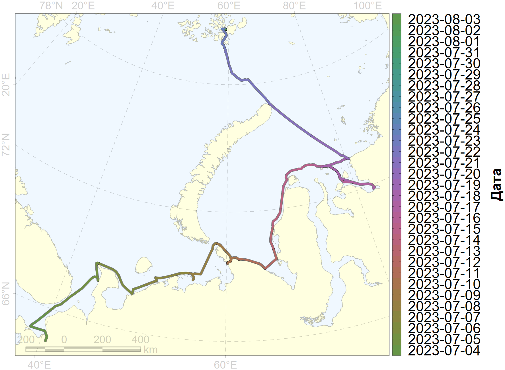 ] ] --- name: H1fcbb .toc.sidebar.left-column[ .outline[ # [Подготовка ](#Hdc8d2) # [Сбор данных ](#H0db48) # [Переброс данных](#Hca4d1) # [Треки ](#H7f976).fg[] ## [Объединение фрагментов ](#H73e82) ## [Визуализация ](#H8752d).fg[] ### [в R ](#H8752d) <span class="bullet bullet">[•](#H8752d)</span><span class="bullet bullet">[•](#Hf1c5d)</span><span class="bullet bullet">[•](#H68cc8)</span><span class="bullet bullet-active">[•](#H1fcbb)</span>.fg[].bg[] ### [в QGIS ](#H3f04d) # [Находки ](#Hec8ea) # [Анализ ](#analysis-gebco) ] ] .toc.mainbar.right-column.scrollable[ .header.h3.broad[ в R .parent[.grand[Визуализация .grand[Треки]]] ] .fixprecode[ ``` r mapview::mapview(trkln) ``` <div class="figure"> <div class="framed" style="height:634px; width=100%"> <iframe src="assets/widget_unnamed-chunk-34_be544740711bd6068953ef69579022ab.html" width="100%" height="634" class="ursa-widgetize"></iframe> </div> </div> ] ] --- name: H3f04d .toc.sidebar.left-column[ .outline[ # [Подготовка ](#Hdc8d2) # [Сбор данных ](#H0db48) # [Переброс данных](#Hca4d1) # [Треки ](#H7f976).fg[] ## [Объединение фрагментов ](#H73e82) ## [Визуализация ](#H8752d).fg[] ### [в R ](#H8752d) ### [в QGIS ](#H3f04d).fg[].bg[] # [Находки ](#Hec8ea) # [Анализ ](#analysis-gebco) ] ] .toc.mainbar.right-column.scrollable[ .header.h3.broad[ в QGIS .parent[.grand[Визуализация .grand[Треки]]] ] .fixprecode[ 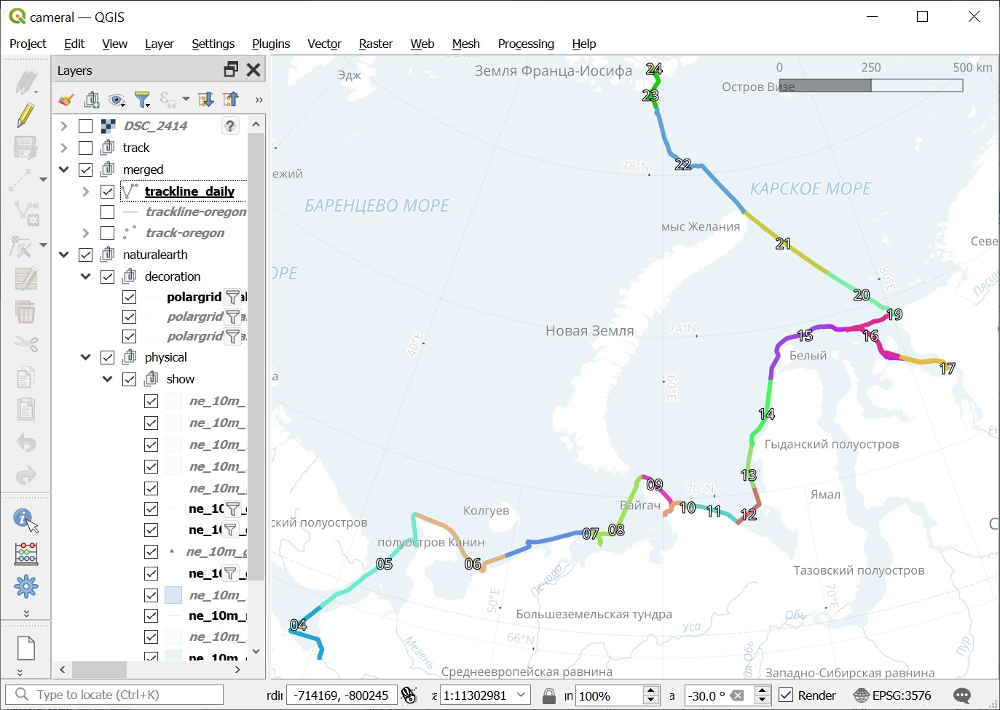 ] ] --- name: Hec8ea .toc.sidebar.left-column[ .outline[ # [Подготовка ](#Hdc8d2) # [Сбор данных ](#H0db48) # [Переброс данных](#Hca4d1) # [Треки ](#H7f976) # [Находки ](#Hec8ea) <span class="bullet bullet-active">[•](#Hec8ea)</span><span class="bullet mslide66m">[•](#H6fa14)</span>.fg[].bg[] ## [Время ](#H249fa) ## [Координаты ](#Hce019) ## [Пеленгация ](#He63f0) ## [План «Б»](#hidden-crd) ## [Преобразование в ГИС формат ](#H4730c) # [Анализ ](#analysis-gebco) ] ] .toc.mainbar.right-column.scrollable[ .header.h1.broad[ Находки ] .fixprecode[ ## GPS-метка Содержит информацию о названии метки, её времени и координатах. Как правило, это трехзначное число: 002, 012, 312. ## Номер фотографии В учётный лист или полевой дневник заносятся четыре последних цифры. Каждые 10 тыс. снимков эти цифры могут повториться. В [таблице находок](#findings) указывается дата, чтобы исключить неоднозначность по 4 последним цифрам. По дате и четырём последним цифрам находится имя файла снимка. Из этого имени извлекается информаиц ## Записанное время Иногда может быть приблизительное, особенно если находка сделана участниками экспедиции или членами экипажа. ] ] --- name: H6fa14 .toc.sidebar.left-column[ .outline[ # [Подготовка ](#Hdc8d2) # [Сбор данных ](#H0db48) # [Переброс данных](#Hca4d1) # [Треки ](#H7f976) # [Находки ](#Hec8ea) <span class="bullet bullet">[•](#Hec8ea)</span><span class="bullet bullet-active">[•](#H6fa14)</span>.fg[].bg[] ## [Время ](#H249fa) ## [Координаты ](#Hce019) ## [Пеленгация ](#He63f0) ## [План «Б»](#hidden-crd) ## [Преобразование в ГИС формат ](#H4730c) # [Анализ ](#analysis-gebco) ] ] .toc.mainbar.right-column.scrollable[ .header.h1.broad[ Находки ] .fixprecode[ ``` r Sys.setenv(TZ="UTC") a <- readxl::read_excel("input/marmam.xlsx",sheet="mammals") ind <- is.na(a[["Повтор"]]) a <- a[ind,] d3 <- a[["Дата"]] |> as.Date() a[["Дата"]] <- tidyr::fill(data.frame(d3=d3),"d3",.direction="down")[[1]] a$time <- Sys.time() a$time[] <- NA a$lon <- NA_real_ a$lat <- NA_real_ trkFname <- "input/Oregon/Track_2023-07-18 082447.gpx" print(sf::st_layers(trkFname)) ``` ``` Driver: GPX Available layers: layer_name geometry_type features fields crs_name 1 waypoints Point 0 23 WGS 84 2 routes Line String 0 12 WGS 84 3 tracks Multi Line String 1 13 WGS 84 4 route_points Point 0 25 WGS 84 5 track_points Point 1268 26 WGS 84 ``` ``` r trk <- sf::st_read(trkFname,layer="track_points",quiet=TRUE)[c("time","ele")] print(trk) ``` ``` Simple feature collection with 1268 features and 2 fields Geometry type: POINT Dimension: XY Bounding box: xmin: 76.62792 ymin: 71.86019 xmax: 82.72364 ymax: 73.51395 Geodetic CRS: WGS 84 First 10 features: time ele geometry 1 2023-07-17 16:04:28 7.79 POINT (82.72364 71.86383) 2 2023-07-17 16:04:29 7.80 POINT (82.72352 71.86384) 3 2023-07-17 16:05:47 7.80 POINT (82.72199 71.86266) 4 2023-07-17 16:06:03 7.80 POINT (82.72175 71.8625) 5 2023-07-17 16:09:13 7.80 POINT (82.72044 71.86077) 6 2023-07-17 16:09:20 7.80 POINT (82.7201 71.8606) 7 2023-07-17 16:09:24 7.80 POINT (82.71994 71.86048) 8 2023-07-17 16:09:27 10.95 POINT (82.71983 71.86039) 9 2023-07-17 16:09:29 14.02 POINT (82.71975 71.86033) 10 2023-07-17 16:09:31 14.82 POINT (82.71968 71.86028) ``` ``` r wptFname <- "input/Oregon/Waypoints_18-JUL-23.gpx" print(sf::st_layers(wptFname)) ``` ``` Driver: GPX Available layers: layer_name geometry_type features fields crs_name 1 waypoints Point 9 23 WGS 84 2 routes Line String 0 12 WGS 84 3 tracks Multi Line String 0 12 WGS 84 4 route_points Point 0 25 WGS 84 5 track_points Point 0 26 WGS 84 ``` ``` r wpt <- sf::st_read(wptFname,layer="waypoints",quiet=TRUE)[,c("time","name","ele","sym")] wpt$name <- paste0("О",wpt$name) print(wpt) ``` ``` Simple feature collection with 9 features and 4 fields Geometry type: POINT Dimension: XY Bounding box: xmin: 76.00353 ymin: 72.66492 xmax: 78.77027 ymax: 73.54822 Geodetic CRS: WGS 84 time name ele sym geometry 1 2023-07-18 01:14:32 О228 30.52069 Animal Tracks POINT (78.77027 72.66492) 2 2023-07-18 01:50:02 О229 21.19933 Animal Tracks POINT (78.54281 72.72084) 3 2023-07-18 02:32:56 О230 14.74249 Animal Tracks POINT (78.31423 72.74485) 4 2023-07-18 02:59:26 О231 12.97899 Animal Tracks POINT (78.23512 72.81431) 5 2023-07-18 04:44:35 О232 15.16237 Animal Tracks POINT (78.04303 73.11846) 6 2023-07-18 05:01:37 О233 13.45486 Animal Tracks POINT (77.97593 73.16531) 7 2023-07-18 05:17:40 О234 13.96805 Animal Tracks POINT (77.90786 73.20753) 8 2023-07-18 14:39:45 О235 15.53560 Animal Tracks POINT (76.00353 73.5481) 9 2023-07-18 15:15:36 О236 16.46867 Animal Tracks POINT (76.33078 73.54822) ``` ] ] --- name: H249fa .toc.sidebar.left-column[ .outline[ # [Подготовка ](#Hdc8d2) # [Сбор данных ](#H0db48) # [Переброс данных](#Hca4d1) # [Треки ](#H7f976) # [Находки ](#Hec8ea).fg[] ## [Время ](#H249fa).fg[] ### [по GPS ](#H249fa).fg[].bg[] ### [по фотографии ](#H43713) ### [напрямую ](#Hc7029) ## [Координаты ](#Hce019) ## [Пеленгация ](#He63f0) ## [План «Б»](#hidden-crd) ## [Преобразование в ГИС формат ](#H4730c) # [Анализ ](#analysis-gebco) ] ] .toc.mainbar.right-column.scrollable[ .header.h3.broad[ по GPS .parent[.grand[Время .grand[Находки]]] ] .fixprecode[ ``` r 'wptTime' <- function(a,wpt) { patt <- ".*([A-ZА-Я]\\d{3}).*" pt <- a[["Точка трека"]] ind <- grep(patt,pt) pt[ind] <- gsub(patt,"\\1",pt[ind]) ind2 <- match(wpt$name,pt[ind]) ind2pt <- ind[na.omit(ind2)] # print(ind2pt) ind2w <- which(!is.na(ind2)) # print(wpt[ind2w,]) # a[ind2pt,c("lon","lat")] <- ursa::spatial_coordinates(wpt[ind2w,]) a[["time"]][ind2pt] <- wpt[["time"]][ind2w] print(a[ind2pt,c("Время UTC","time","Точка трека","Вид")]) a } a <- wptTime(a,wpt) ``` ``` # A tibble: 7 × 4 `Время UTC` time `Точка трека` Вид <chr> <dttm> <chr> <chr> 1 01:14 2023-07-18 01:14:32 О228 Тюлень sp 2 <NA> 2023-07-18 01:50:02 О229 Тюлень sp 3 02:59 2023-07-18 02:59:26 О231 Тюлень sp 4 <NA> 2023-07-18 04:44:35 О232 Белуха 5 05:01 2023-07-18 05:01:37 О233 Белуха 6 <NA> 2023-07-18 05:17:40 О234 Кольчатая нерпа 7 15:15 2023-07-18 15:15:36 О236 3877 Кольчатая нерпа ``` ] ] --- name: H43713 .toc.sidebar.left-column[ .outline[ # [Подготовка ](#Hdc8d2) # [Сбор данных ](#H0db48) # [Переброс данных](#Hca4d1) # [Треки ](#H7f976) # [Находки ](#Hec8ea).fg[] ## [Время ](#H249fa).fg[] ### [по GPS ](#H249fa) ### [по фотографии ](#H43713).fg[].bg[] ### [напрямую ](#Hc7029) ## [Координаты ](#Hce019) ## [Пеленгация ](#He63f0) ## [План «Б»](#hidden-crd) ## [Преобразование в ГИС формат ](#H4730c) # [Анализ ](#analysis-gebco) ] ] .toc.mainbar.right-column.scrollable[ .header.h3.broad[ по фотографии .parent[.grand[Время .grand[Находки]]] ] .fixprecode[ ``` r 'photoTime' <- function(a,photoDir) { list1 <- dir(path=file.path(dpath,photoDir) ,pattern="\\d{4}\\.jpg$",full.names=TRUE) list2 <- basename(list1) photo <- a[["Точка трека"]] ind <- grep("\\D*\\d{4}\\D*",photo) ph <- gsub("[А-Я]\\d{3}\\D*","",photo[ind]) ph <- gsub("\\s+","",ph) ph <- gsub("^\\D|\\D$","",ph) ph <- strsplit(ph,split="(\\s+|,\\s*)") ph <- lapply(ph,\(x) { y <- strsplit(x,split="\\s*-\\s*")[[1]] if (length(y)==1) return(y) y <- as.integer(y) y <- sprintf("%04d",sort(seq(y[1],y[2]))) }) d3 <- a[["Дата"]][ind] found <- vector("list",length(d3)) for (i in seq_along(d3) |> sample()) { if (!is.na(a[["time"]][ind][i])) next patt <- paste0(format(d3[i],"%Y%m%d"),"-\\d{6}-",ph[[i]],"\\.jpg") ind2 <- unlist(lapply(patt,grep,list2)) if (!length(ind2)) next if (length(ind2)>1) ind2 <- sample(ind2,1) found[[i]] <- as.POSIXct(gsub(".*(\\d{8}-\\d{6}).*","\\1",list2[ind2]) ,format="%Y%m%d-%H%M%S") a[["time"]][ind][i] <- found[[i]] } ind2 <- which(sapply(found,\(x) length(x)>0)) ind3 <- ind[ind2] print(a[ind3,c("Точка трека","Вид","Субстрат","time")]) a } a <- photoTime(a,"2023-07-18") ``` ``` # A tibble: 0 × 4 # ℹ 4 variables: Точка трека <chr>, Вид <chr>, Субстрат <chr>, time <dttm> ``` ] ] --- name: Hc7029 .toc.sidebar.left-column[ .outline[ # [Подготовка ](#Hdc8d2) # [Сбор данных ](#H0db48) # [Переброс данных](#Hca4d1) # [Треки ](#H7f976) # [Находки ](#Hec8ea).fg[] ## [Время ](#H249fa).fg[] ### [по GPS ](#H249fa) ### [по фотографии ](#H43713) ### [напрямую ](#Hc7029).fg[].bg[] ## [Координаты ](#Hce019) ## [Пеленгация ](#He63f0) ## [План «Б»](#hidden-crd) ## [Преобразование в ГИС формат ](#H4730c) # [Анализ ](#analysis-gebco) ] ] .toc.mainbar.right-column.scrollable[ .header.h3.broad[ напрямую .parent[.grand[Время .grand[Находки]]] ] .fixprecode[ ``` r 'manualTime' <- function(a) { t3 <- a[["Точка трека"]] ind <- which(grepl("^\\d{1,2}\\:\\d{2}(\\:\\d{2})*$",t3)) if (length(ind2 <- grep("^\\d{1,2}\\:\\d{2}$",t3[ind]))) t3[ind][ind2] <- paste0(t3[ind][ind2],":30") ind3 <- is.na(a$time[ind]) a$time[ind[ind3]] <- paste(format(a[["Дата"]][ind[ind3]],"%Y-%m-%d"),t3[ind[ind3]]) ind3 <- which(a$time[ind]>=head(trk$time,1) & a$time[ind]<=tail(trk$time,1)) print(a[ind[ind3],c("Дата","Точка трека","Вид","time","lon","lat")]) a } a <- manualTime(a) ``` ``` # A tibble: 9 × 6 Дата `Точка трека` Вид time lon lat <date> <chr> <chr> <dttm> <dbl> <dbl> 1 2023-07-18 01:08:29 Тюлень sp 2023-07-18 01:08:29 NA NA 2 2023-07-18 01:20 Тюлень sp 2023-07-18 01:20:30 NA NA 3 2023-07-18 01:54 Тюлень sp 2023-07-18 01:54:30 NA NA 4 2023-07-18 02:18 Тюлень sp 2023-07-18 02:18:30 NA NA 5 2023-07-18 02:18 Тюлень sp 2023-07-18 02:18:30 NA NA 6 2023-07-18 02:19 Тюлень sp 2023-07-18 02:19:30 NA NA 7 2023-07-18 02:19 Тюлень sp 2023-07-18 02:19:30 NA NA 8 2023-07-18 03:19 Тюлень sp 2023-07-18 03:19:30 NA NA 9 2023-07-18 04:03 Тюлень sp 2023-07-18 04:03:30 NA NA ``` ] ] --- name: Hce019 .toc.sidebar.left-column[ .outline[ # [Подготовка ](#Hdc8d2) # [Сбор данных ](#H0db48) # [Переброс данных](#Hca4d1) # [Треки ](#H7f976) # [Находки ](#Hec8ea).fg[] ## [Время ](#H249fa) ## [Координаты ](#Hce019).fg[].bg[] ### [из GPS метки ](#Hd960b) ### [из путевого трека ](#H7ba3d) ## [Пеленгация ](#He63f0) ## [План «Б»](#hidden-crd) ## [Преобразование в ГИС формат ](#H4730c) # [Анализ ](#analysis-gebco) ] ] .toc.mainbar.right-column.scrollable[ .header.h2.broad[ Координаты .parent[.grand[Находки]] ] .fixprecode[ ``` r a <- a[!is.na(a$time),] a <- a[a$time>=head(trk$time,1) & a$time<=tail(trk$time,1),] print(a[,c("Точка трека","Вид","time","lon","lat")]) ``` ``` # A tibble: 15 × 5 `Точка трека` Вид time lon lat <chr> <chr> <dttm> <dbl> <dbl> 1 01:08:29 Тюлень sp 2023-07-18 01:08:29 NA NA 2 О228 Тюлень sp 2023-07-18 01:14:32 NA NA 3 01:20 Тюлень sp 2023-07-18 01:20:30 NA NA 4 О229 Тюлень sp 2023-07-18 01:50:02 NA NA 5 01:54 Тюлень sp 2023-07-18 01:54:30 NA NA 6 02:18 Тюлень sp 2023-07-18 02:18:30 NA NA 7 02:18 Тюлень sp 2023-07-18 02:18:30 NA NA 8 02:19 Тюлень sp 2023-07-18 02:19:30 NA NA 9 02:19 Тюлень sp 2023-07-18 02:19:30 NA NA 10 О231 Тюлень sp 2023-07-18 02:59:26 NA NA 11 03:19 Тюлень sp 2023-07-18 03:19:30 NA NA 12 04:03 Тюлень sp 2023-07-18 04:03:30 NA NA 13 О232 Белуха 2023-07-18 04:44:35 NA NA 14 О233 Белуха 2023-07-18 05:01:37 NA NA 15 О234 Кольчатая нерпа 2023-07-18 05:17:40 NA NA ``` ] ] --- name: Hd960b .toc.sidebar.left-column[ .outline[ # [Подготовка ](#Hdc8d2) # [Сбор данных ](#H0db48) # [Переброс данных](#Hca4d1) # [Треки ](#H7f976) # [Находки ](#Hec8ea).fg[] ## [Время ](#H249fa) ## [Координаты ](#Hce019).fg[] ### [из GPS метки ](#Hd960b).fg[].bg[] ### [из путевого трека ](#H7ba3d) ## [Пеленгация ](#He63f0) ## [План «Б»](#hidden-crd) ## [Преобразование в ГИС формат ](#H4730c) # [Анализ ](#analysis-gebco) ] ] .toc.mainbar.right-column.scrollable[ .header.h3.broad[ из GPS метки .parent[.grand[Координаты .grand[Находки]]] ] .fixprecode[ ``` r 'getCoordsFromPoint' <- function(a,gpx) { ind <- match(a$time,gpx$time) if (all(is.na(ind))) return(a) ind1 <- na.omit(ind) ind2 <- which(!is.na(ind)) ind2 <- ind2[is.na(a$lon[ind2]) | is.na(a$lat[ind2])] xy <- ursa::spatial_coordinates(gpx)[ind1,] a$lon[ind2] <- xy[,1] a$lat[ind2] <- xy[,2] a } a <- getCoordsFromPoint(a,wpt) print(a[,c("Точка трека","Вид","time","lon","lat")]) ``` ``` # A tibble: 15 × 5 `Точка трека` Вид time lon lat <chr> <chr> <dttm> <dbl> <dbl> 1 01:08:29 Тюлень sp 2023-07-18 01:08:29 NA NA 2 О228 Тюлень sp 2023-07-18 01:14:32 78.8 72.7 3 01:20 Тюлень sp 2023-07-18 01:20:30 NA NA 4 О229 Тюлень sp 2023-07-18 01:50:02 78.5 72.7 5 01:54 Тюлень sp 2023-07-18 01:54:30 NA NA 6 02:18 Тюлень sp 2023-07-18 02:18:30 NA NA 7 02:18 Тюлень sp 2023-07-18 02:18:30 NA NA 8 02:19 Тюлень sp 2023-07-18 02:19:30 NA NA 9 02:19 Тюлень sp 2023-07-18 02:19:30 NA NA 10 О231 Тюлень sp 2023-07-18 02:59:26 78.2 72.8 11 03:19 Тюлень sp 2023-07-18 03:19:30 NA NA 12 04:03 Тюлень sp 2023-07-18 04:03:30 NA NA 13 О232 Белуха 2023-07-18 04:44:35 78.0 73.1 14 О233 Белуха 2023-07-18 05:01:37 78.0 73.2 15 О234 Кольчатая нерпа 2023-07-18 05:17:40 77.9 73.2 ``` ] ] --- name: H7ba3d .toc.sidebar.left-column[ .outline[ # [Подготовка ](#Hdc8d2) # [Сбор данных ](#H0db48) # [Переброс данных](#Hca4d1) # [Треки ](#H7f976) # [Находки ](#Hec8ea).fg[] ## [Время ](#H249fa) ## [Координаты ](#Hce019).fg[] ### [из GPS метки ](#Hd960b) ### [из путевого трека ](#H7ba3d).fg[].bg[] ## [Пеленгация ](#He63f0) ## [План «Б»](#hidden-crd) ## [Преобразование в ГИС формат ](#H4730c) # [Анализ ](#analysis-gebco) ] ] .toc.mainbar.right-column.scrollable[ .header.h3.broad[ из путевого трека .parent[.grand[Координаты .grand[Находки]]] ] .fixprecode[ ``` r 'getCoordsBetweenPoints' <- function(a,gpx) { if (!length(ind <- which(is.na(a$lon) | is.na(a$lat)))) return(a) for (i in ind |> sample()) { ind4 <- which(trk$time-a$time[i]>0) |> head(1) trk2 <- trk[ind4+c(-1,0),] trk2 <- ursa:::spatialize(trk2,style="stere") sc <- as.numeric(a$time[i]-trk2$time[1],units="secs")/ as.numeric(trk2$time[2]-trk2$time[1],units="secs") xy2 <- ursa::spatial_coordinates(trk2) xy <- data.frame(lon=xy2[1,1]+sc*(xy2[2,1]-xy2[1,1]) ,lat=xy2[1,2]+sc*(xy2[2,2]-xy2[1,2])) xy <- sf::st_as_sf(xy,coords=c("lon","lat"),crs=sf::st_crs(trk2)) xy <- ursa::spatial_coordinates(sf::st_transform(xy,4326)) a$lon[i] <- xy[,1] a$lat[i] <- xy[,2] } a } a <- getCoordsBetweenPoints(a,trk) print(a[,c("Точка трека","Вид","time","lon","lat")]) ``` ``` # A tibble: 15 × 5 `Точка трека` Вид time lon lat <chr> <chr> <dttm> <dbl> <dbl> 1 01:08:29 Тюлень sp 2023-07-18 01:08:29 78.8 72.7 2 О228 Тюлень sp 2023-07-18 01:14:32 78.8 72.7 3 01:20 Тюлень sp 2023-07-18 01:20:30 78.7 72.7 4 О229 Тюлень sp 2023-07-18 01:50:02 78.5 72.7 5 01:54 Тюлень sp 2023-07-18 01:54:30 78.5 72.7 6 02:18 Тюлень sp 2023-07-18 02:18:30 78.4 72.7 7 02:18 Тюлень sp 2023-07-18 02:18:30 78.4 72.7 8 02:19 Тюлень sp 2023-07-18 02:19:30 78.4 72.7 9 02:19 Тюлень sp 2023-07-18 02:19:30 78.4 72.7 10 О231 Тюлень sp 2023-07-18 02:59:26 78.2 72.8 11 03:19 Тюлень sp 2023-07-18 03:19:30 78.2 72.9 12 04:03 Тюлень sp 2023-07-18 04:03:30 78.2 73.0 13 О232 Белуха 2023-07-18 04:44:35 78.0 73.1 14 О233 Белуха 2023-07-18 05:01:37 78.0 73.2 15 О234 Кольчатая нерпа 2023-07-18 05:17:40 77.9 73.2 ``` ] ] --- name: He63f0 .toc.sidebar.left-column[ .outline[ # [Подготовка ](#Hdc8d2) # [Сбор данных ](#H0db48) # [Переброс данных](#Hca4d1) # [Треки ](#H7f976) # [Находки ](#Hec8ea).fg[] ## [Время ](#H249fa) ## [Координаты ](#Hce019) ## [Пеленгация ](#He63f0) <span class="bullet bullet-active">[•](#He63f0)</span><span class="bullet mslide75m">[•](#Hefb32)</span>.fg[].bg[] ## [План «Б»](#hidden-crd) ## [Преобразование в ГИС формат ](#H4730c) # [Анализ ](#analysis-gebco) ] ] .toc.mainbar.right-column.scrollable[ .header.h2.broad[ Пеленгация .parent[.grand[Находки]] ] .fixprecode[ .clarify[ Столбцы «дальность» и «пеленг» в таблице находок. + Если судно в походе, то фиксируется направление в часах от носа судна + Если судно на рейде или совершает манёвры, то фиксируется сторона света (в градусах компаса) ] ] ] --- name: Hefb32 .toc.sidebar.left-column[ .outline[ # [Подготовка ](#Hdc8d2) # [Сбор данных ](#H0db48) # [Переброс данных](#Hca4d1) # [Треки ](#H7f976) # [Находки ](#Hec8ea).fg[] ## [Время ](#H249fa) ## [Координаты ](#Hce019) ## [Пеленгация ](#He63f0) <span class="bullet bullet">[•](#He63f0)</span><span class="bullet bullet-active">[•](#Hefb32)</span>.fg[].bg[] ## [План «Б»](#hidden-crd) ## [Преобразование в ГИС формат ](#H4730c) # [Анализ ](#analysis-gebco) ] ] .toc.mainbar.right-column.scrollable[ .header.h2.broad[ Пеленгация .parent[.grand[Находки]] ] .fixprecode[ ``` r 'getbearing' <- function(device,time,distance,bearing) { bearing1 <- bearing bearing2 <- NA if (!is.na(bearing)) { pattHHMM <- "(\\d{1,2})\\:(\\d{2})" if (grepl("\\d+(T|Т)$",bearing)) { bearing2 <- as.numeric(gsub("\\D","",bearing)) } else if (grepl(pattHHMM,bearing)) { hh <- as.numeric(gsub(pattHHMM,"\\1",bearing)) mm <- as.numeric(gsub(pattHHMM,"\\2",bearing)) bearing <- 30*(hh+mm/60) } else { bearing <- as.numeric(gsub("\\s*ч$","",bearing)) if ((bearing>=0)&&(bearing<=24)) bearing <- bearing*30 } } else bearing <- 0 if (is.na(distance)) distance <- 0 g <- device ind <- match(time,g$time) if (is.na(ind)) { ind <- which(g$time>time)[1] if (is.na(ind)) stop("out of temporal range?") } g3 <- ursa:::spatialize(g[ind+seq(-2,2),"time"],resetGrid=TRUE,style="stere") xy <- ursa::spatial_coordinates(g3) pca <- prcomp(xy,scale=FALSE) direction <- unname(pca$rotation[,1]) if (direction[1]==0) theta <- pi/2*sign(direction[2]) else theta <- atan(direction[2]/direction[1]) if (direction[1]<0) { theta <- pi+theta } theta <- pi/2-theta x <- as.numeric(g3$time) y <- unname(predict(pca)[,1]) n <- length(x) slope <- 3.6*(mean(x*y)-mean(x)*mean(y))/var(x)*n/(n-1) if (slope<0) { theta <- theta-pi slope <- -slope } g2 <- g[ind+c(-1,0),] tr <- ursa::trackline(g2) trlen <- ursa::spatial_length(tr) trdur <- as.numeric(difftime(g2$time[2],g2$time[1]),"secs") trspd <- trlen/trdur*3.6 tr <- ursa::spatial_coordinates(sf::st_segmentize(tr,trlen/1000))[[1]] t3 <- as.numeric(g2$time) scale <- (as.numeric(time)-t3[1])/(t3[2]-t3[1]) ind <- round((nrow(tr)-1)*scale+1) crd <- data.frame(t(tr[ind,])) heading <- lwgeom::st_geod_azimuth(g2) units(heading) <- "degrees" if (is.na(bearing2)) bearing2 <- as.numeric(heading)+bearing ep <- geosphere::destPoint(crd,b=bearing2,d=distance) strip <- round(sin(as.numeric(bearing)*pi/180)*as.numeric(distance),-1) if (abs(strip)>1000) strip <- round(strip,2) if (abs(strip)>5000) strip <- round(strip,3) ret <- data.frame(time=time,observer_lon=crd[,1],observer_lat=crd[,2] ,target_lon=ep[,1],target_lat=ep[,2] ,in_strip=strip ,speed=slope,heading=theta*180/pi ,check.names=FALSE ) rownames(ret) <- NULL ret$time <- NULL ret } 'observationState' <- function(a,trk) { colBearing <- grep("(пеленг|азимут)",colnames(a),ignore.case=TRUE,value=TRUE) colDistance <- grep("дистанц|(расст.*набл)",colnames(a),ignore.case=TRUE,value=TRUE) lapply(seq(nrow(a)),\(i) { getbearing(device=trk,time=a$time[i] ,distance=a[[colDistance]][i],bearing=a[[colBearing]][i]) }) |> do.call(rbind,args=_) } b <- observationState(a,trk) # a <- cbind(a[,c("Вид","time")],b) print(b,digits=4) ``` ``` observer_lon observer_lat target_lon target_lat in_strip speed heading 1 78.80 72.65 78.82 72.66 1000 17.222 -61.081 2 78.77 72.66 78.77 72.66 -40 16.261 -27.594 3 78.73 72.68 78.73 72.68 0 17.628 -53.865 4 78.54 72.72 78.54 72.72 0 6.144 -39.802 5 78.54 72.72 78.53 72.73 -250 3.118 -12.339 6 78.43 72.72 78.44 72.73 500 16.933 -56.538 7 78.43 72.72 78.44 72.73 1000 16.933 -56.538 8 78.42 72.72 78.43 72.73 700 17.833 -56.366 9 78.42 72.72 78.44 72.73 900 17.833 -56.366 10 78.24 72.81 78.23 72.81 -40 19.976 -11.744 11 78.19 72.87 78.23 72.88 1500 19.603 -19.823 12 78.17 73.00 78.15 73.00 -400 20.581 1.429 13 78.04 73.12 78.03 73.12 -200 19.846 -16.762 14 77.98 73.17 77.97 73.17 0 19.670 -17.711 15 77.91 73.21 77.91 73.21 90 19.920 -54.157 ``` ] ] --- name: hidden-crd class: blackout .toc.sidebar.left-column[ .outline[ # [Подготовка ](#Hdc8d2) # [Сбор данных ](#H0db48) # [Переброс данных](#Hca4d1) # [Треки ](#H7f976) # [Находки ](#Hec8ea).fg[] ## [Время ](#H249fa) ## [Координаты ](#Hce019) ## [Пеленгация ](#He63f0) ## [План «Б»](#hidden-crd).fg[].bg[] ## [Преобразование в ГИС формат ](#H4730c) # [Анализ ](#analysis-gebco) ] ] .toc.mainbar.right-column.scrollable[ .header.h2.broad[ План «Б» .parent[.grand[Находки]] ] .fixprecode[ Для каждой находки (с фото или без) ставить метку GPS + С ГИС + Отобразить трек (track, track_points) + Вывести метки находок (waypoints) + Воспользоваться инструментом получения координат при клике на waypoints. + Без ГИС + Открыть [GPX](#gpx) в текстовом редакторе и соотносить название метки с её координатами. Но без ГИС не получится создать файл, который мог бы быть открыт кем-то другим в ГИС. ] ] --- name: H4730c .toc.sidebar.left-column[ .outline[ # [Подготовка ](#Hdc8d2) # [Сбор данных ](#H0db48) # [Переброс данных](#Hca4d1) # [Треки ](#H7f976) # [Находки ](#Hec8ea).fg[] ## [Время ](#H249fa) ## [Координаты ](#Hce019) ## [Пеленгация ](#He63f0) ## [План «Б»](#hidden-crd) ## [Преобразование в ГИС формат ](#H4730c).fg[].bg[] ### [R ](#Hf3461) ### [QGIS ](#Hd1ff7) # [Анализ ](#analysis-gebco) ] ] .toc.mainbar.right-column.scrollable[ .header.h2.broad[ Преобразование в ГИС формат .parent[.grand[Находки]] ] .fixprecode[ Создание точечного слоя ] ] --- name: Hf3461 .toc.sidebar.left-column[ .outline[ # [Подготовка ](#Hdc8d2) # [Сбор данных ](#H0db48) # [Переброс данных](#Hca4d1) # [Треки ](#H7f976) # [Находки ](#Hec8ea).fg[] ## [Время ](#H249fa) ## [Координаты ](#Hce019) ## [Пеленгация ](#He63f0) ## [План «Б»](#hidden-crd) ## [Преобразование в ГИС формат ](#H4730c).fg[] ### [R ](#Hf3461).fg[].bg[] ### [QGIS ](#Hd1ff7) # [Анализ ](#analysis-gebco) ] ] .toc.mainbar.right-column.scrollable[ .header.h3.broad[ R .parent[.grand[Преобразование в ГИС формат .grand[Находки]]] ] .fixprecode[ ``` r a <- sf::st_as_sf(a,coords=c("lon","lat"),crs=4326) ursa::spatial_write(a,"output/mammals_subset.geojson") print(a[,c("Вид","Кол-во","Субстрат")]) ``` ``` Simple feature collection with 15 features and 3 fields Geometry type: POINT Dimension: XY Bounding box: xmin: 77.90786 ymin: 72.65398 xmax: 78.80145 ymax: 73.20753 Geodetic CRS: WGS 84 # A tibble: 15 × 4 Вид `Кол-во` Субстрат geometry <chr> <dbl> <chr> <POINT [°]> 1 Тюлень sp 1 разводья (78.80145 72.65398) 2 Тюлень sp 1 разводья (78.77027 72.66492) 3 Тюлень sp 1 разводья (78.73301 72.67523) 4 Тюлень sp 1 разводья (78.54281 72.72084) 5 Тюлень sp 1 разводья (78.53791 72.72264) 6 Тюлень sp 5 льдина (78.42713 72.72192) 7 Тюлень sp 19 льдина (78.42713 72.72192) 8 Тюлень sp 1 разводья (78.42004 72.72338) 9 Тюлень sp 1 разводья (78.42004 72.72338) 10 Тюлень sp 1 вода (78.23512 72.81431) 11 Тюлень sp 59 льдина (78.19121 72.872) 12 Тюлень sp 1 разводья (78.16659 73.00207) 13 Белуха 1 вода (78.04303 73.11846) 14 Белуха 1 вода (77.97593 73.16531) 15 Кольчатая нерпа 1 разводья (77.90786 73.20753) ``` ] ] --- name: Hd1ff7 .toc.sidebar.left-column[ .outline[ # [Подготовка ](#Hdc8d2) # [Сбор данных ](#H0db48) # [Переброс данных](#Hca4d1) # [Треки ](#H7f976) # [Находки ](#Hec8ea).fg[] ## [Время ](#H249fa) ## [Координаты ](#Hce019) ## [Пеленгация ](#He63f0) ## [План «Б»](#hidden-crd) ## [Преобразование в ГИС формат ](#H4730c).fg[] ### [R ](#Hf3461) ### [QGIS ](#Hd1ff7).fg[].bg[] # [Анализ ](#analysis-gebco) ] ] .toc.mainbar.right-column.scrollable[ .header.h3.broad[ QGIS .parent[.grand[Преобразование в ГИС формат .grand[Находки]]] ] .fixprecode[ + Сохранить лист Экселя в формате CSV. + [Layer >> Add Layer >> Add Vector Layer](#menulayer) Указать названия столбцов, содержащих координаты. 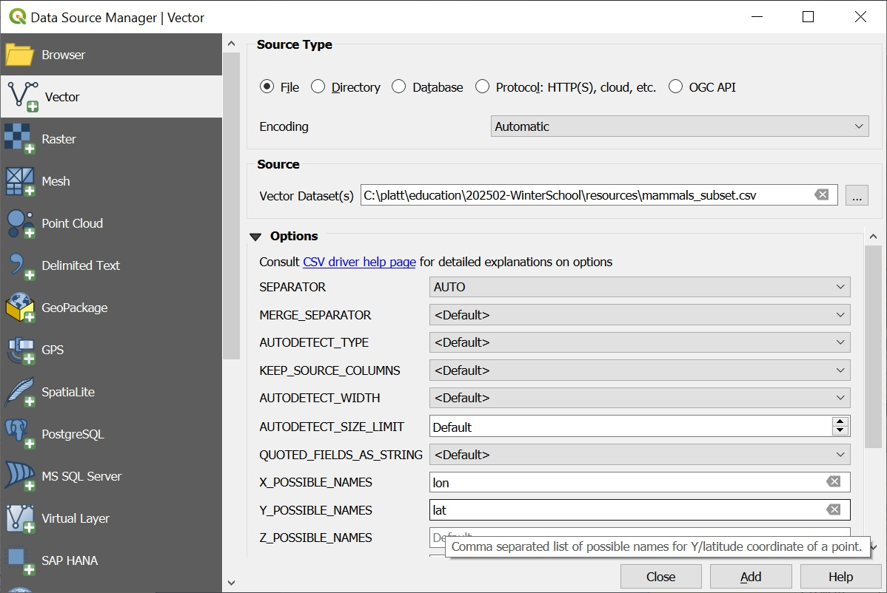 ] ] --- name: analysis-gebco .toc.sidebar.left-column[ .outline[ # [Подготовка ](#Hdc8d2) # [Сбор данных ](#H0db48) # [Переброс данных](#Hca4d1) # [Треки ](#H7f976) # [Находки ](#Hec8ea) # [Анализ ](#analysis-gebco).fg[] ## [Батиметрия ](#analysis-gebco).fg[] ### [по всему региону](#analysis-gebco) <span class="bullet bullet-active">[•](#analysis-gebco)</span><span class="bullet mslide83m">[•](#H81489)</span><span class="bullet mslide84m">[•](#H1f2c0)</span>.fg[].bg[] ### [для находок ](#Ha3c5d) ## [Расстояние до берега ](#H232dc) ] ] .toc.mainbar.right-column.scrollable[ .header.h3.broad[ по всему региону .parent[.grand[Батиметрия .grand[Анализ]]] ] .fixprecode[ Используем предварительно [скачанные данные GEBCO](#download-gebco). ``` r src <- "./input/gebco_2024_n82.0_s64.0_w30.0_e90.0.tif" depth <- ursa_read(src) str(ursa_grid(depth)) ``` ``` List of 9 $ columns: int 7200 $ rows : int 2160 $ resx : num 0.00833 $ resy : num 0.00833 $ minx : num 30 $ maxx : num 90 $ miny : num 64 $ maxy : num 82 $ crs : chr "WGS 84" - attr(*, "class")= chr ".ursaGrid" ``` ``` r display(depth,pointsize=12) ``` 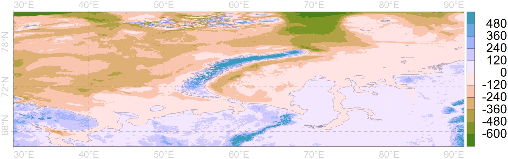 ] ] --- name: H81489 .toc.sidebar.left-column[ .outline[ # [Подготовка ](#Hdc8d2) # [Сбор данных ](#H0db48) # [Переброс данных](#Hca4d1) # [Треки ](#H7f976) # [Находки ](#Hec8ea) # [Анализ ](#analysis-gebco).fg[] ## [Батиметрия ](#analysis-gebco).fg[] ### [по всему региону](#analysis-gebco) <span class="bullet bullet">[•](#analysis-gebco)</span><span class="bullet bullet-active">[•](#H81489)</span><span class="bullet mslide84m">[•](#H1f2c0)</span>.fg[].bg[] ### [для находок ](#Ha3c5d) ## [Расстояние до берега ](#H232dc) ] ] .toc.mainbar.right-column.scrollable[ .header.h3.broad[ по всему региону .parent[.grand[Батиметрия .grand[Анализ]]] ] .fixprecode[ ``` r a <- ursa:::spatialize("./input/track-general.geojson",resetGrid=TRUE) g1 <- regrid(spatial_grid(a),res=2000,border=100) print(g1) ``` ``` List of 9 $ columns: int 1102 $ rows : int 1019 $ resx : num 2000 $ resy : num 2000 $ minx : num -1250000 $ maxx : num 954000 $ miny : num -2856000 $ maxy : num -818000 $ crs : chr "stere lon_0=60.58 lat_0=90 lat_ts=72.55 'WGS 84'" - attr(*, "class")= chr ".ursaGrid" ``` ``` r session_grid(g1) print(gebco <- ursa:::.gdalwarp(src)) ``` ``` name mean sd sum min max n nNA [1] Band 1 -53.0663 184.331 -48246950 -709 1687 909182 213756 ``` ``` r ursa_write(gebco,"./output/gebco.tif") ``` ] ] --- name: H1f2c0 .toc.sidebar.left-column[ .outline[ # [Подготовка ](#Hdc8d2) # [Сбор данных ](#H0db48) # [Переброс данных](#Hca4d1) # [Треки ](#H7f976) # [Находки ](#Hec8ea) # [Анализ ](#analysis-gebco).fg[] ## [Батиметрия ](#analysis-gebco).fg[] ### [по всему региону](#analysis-gebco) <span class="bullet bullet">[•](#analysis-gebco)</span><span class="bullet bullet">[•](#H81489)</span><span class="bullet bullet-active">[•](#H1f2c0)</span>.fg[].bg[] ### [для находок ](#Ha3c5d) ## [Расстояние до берега ](#H232dc) ] ] .toc.mainbar.right-column.scrollable[ .header.h3.broad[ по всему региону .parent[.grand[Батиметрия .grand[Анализ]]] ] .fixprecode[ ``` r display(gebco,blank="white",pointsize=12,coast_fill="#00000010") ``` 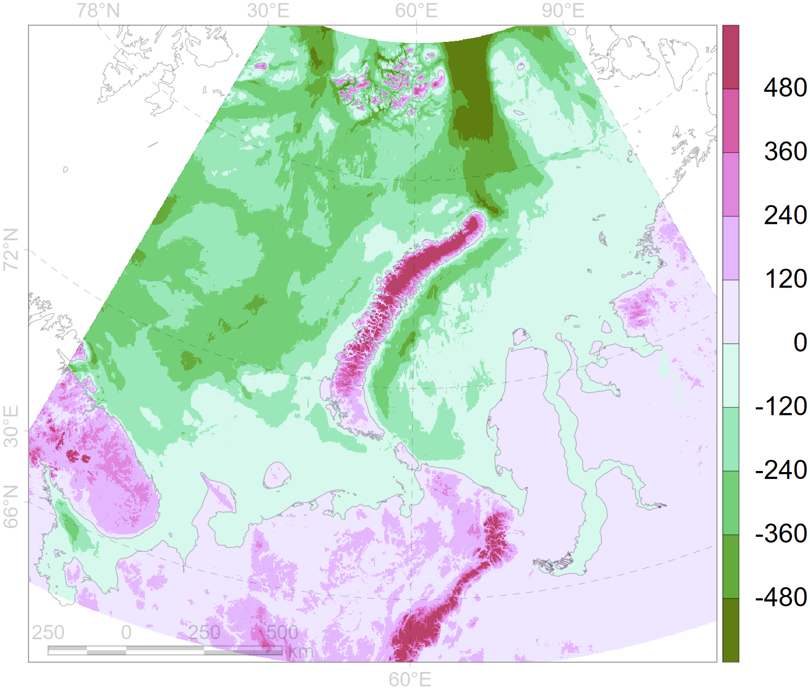 ] ] --- name: Ha3c5d .toc.sidebar.left-column[ .outline[ # [Подготовка ](#Hdc8d2) # [Сбор данных ](#H0db48) # [Переброс данных](#Hca4d1) # [Треки ](#H7f976) # [Находки ](#Hec8ea) # [Анализ ](#analysis-gebco).fg[] ## [Батиметрия ](#analysis-gebco).fg[] ### [по всему региону](#analysis-gebco) ### [для находок ](#Ha3c5d).fg[].bg[] ## [Расстояние до берега ](#H232dc) ] ] .toc.mainbar.right-column.scrollable[ .header.h3.broad[ для находок .parent[.grand[Батиметрия .grand[Анализ]]] ] .fixprecode[ ``` r session_grid(NULL) gebco <- ursa_read("output/gebco.tif") session_grid(gebco) pt <- spatial_read("input/marmam.geojson")[c("time","Вид")] pt$gebco <- value_xy(gebco,pt)[1,] spatial_data(pt)[sort(sample(seq(nrow(pt)),14)),] ``` ``` time Вид gebco 9 2023-07-06 05:57:49 Белуха -36 11 2023-07-07 17:45:41 Белуха -10 24 2023-07-13 13:47:30 Белуха -9 41 2023-07-16 03:12:23 Кольчатая нерпа -11 58 2023-07-16 08:13:27 Кольчатая нерпа -10 113 2023-07-18 01:43:18 Лахтак -13 194 2023-07-18 23:31:30 Белуха -38 200 2023-07-20 14:13:46 Кольчатая нерпа -31 243 2023-07-22 20:24:15 Гренландский кит -198 281 2023-07-24 03:13:56 Кольчатая нерпа -55 322 2023-07-28 16:59:02 Морж -103 326 2023-07-29 08:34:14 Морж -103 379 2023-08-01 15:11:29 Морж -103 398 2023-08-01 17:19:30 Морж 11 ``` ] ] --- name: H232dc .toc.sidebar.left-column[ .outline[ # [Подготовка ](#Hdc8d2) # [Сбор данных ](#H0db48) # [Переброс данных](#Hca4d1) # [Треки ](#H7f976) # [Находки ](#Hec8ea) # [Анализ ](#analysis-gebco).fg[] ## [Батиметрия ](#analysis-gebco) ## [Расстояние до берега ](#H232dc).fg[] ### [для находок ](#H232dc) <span class="bullet bullet-active">[•](#H232dc)</span><span class="bullet mslide88m">[•](#H169a4)</span>.fg[].bg[] ### [по всему региону ](#Hf13a7) ] ] .toc.mainbar.right-column.scrollable[ .header.h3.broad[ для находок .parent[.grand[Расстояние до берега .grand[Анализ]]] ] .fixprecode[ .font99[ ``` r pt <- ursa:::spatialize("input/marmam.geojson",resetGrid=TRUE)[c("time","Вид")] b <- spatial_buffer(ursa:::spatialize(spatial_bbox(pt)),100*1e3) b <- sf::st_segmentize(b,100) list1 <- unzip("input/simplified-land-polygons-complete-3857.zip" ,exdir=tempdir(),junkpaths=TRUE) coast <- spatial_read(list1[grep("\\.shp$",basename(list1))]) file.remove(list1) coast <- spatial_intersection(spatial_geometry(coast),b) coast <- sf::st_segmentize(coast,100) coast <- sf::st_cast(coast,"POINT") dist2coast <- ursa:::.dist2(pt,coast) cl <- coast[dist2coast$ind,] pt$coast <- dist2coast$dist seg <- cbind(spatial_coordinates(pt),spatial_coordinates(cl)) seg <- apply(seg,1,\(x) sf::st_linestring(matrix(x,ncol=2,byrow=TRUE)),simplify=FALSE) seg <- sf::st_sfc(seg,crs=sf::st_crs(pt)) spatial_data(seg) <- data.frame(dist=round(pt$coast*1e-3,1)) ``` ``` r spatial_data(pt)[sort(sample(seq(nrow(pt)),4)),] ``` ``` time Вид coast 56 2023-07-16 08:13:02 Кольчатая нерпа 16384.030 110 2023-07-18 01:26:39 Тюлень sp 8618.799 214 2023-07-20 13:52:52 Тюлень sp 29452.759 263 2023-07-23 07:05:40 Тюлень sp 4517.123 ``` ``` r m <- mapview::mapview(spatial_geometry(pt),cex=3,col.regions="red",layer.name="finding")+ mapview::mapview(spatial_geometry(cl),cex=2,col.regions="blue",layer.name="coast")+ mapview::mapview(seg,popup="dist",layer.name="segment") ``` ] ] ] --- name: H169a4 .toc.sidebar.left-column[ .outline[ # [Подготовка ](#Hdc8d2) # [Сбор данных ](#H0db48) # [Переброс данных](#Hca4d1) # [Треки ](#H7f976) # [Находки ](#Hec8ea) # [Анализ ](#analysis-gebco).fg[] ## [Батиметрия ](#analysis-gebco) ## [Расстояние до берега ](#H232dc).fg[] ### [для находок ](#H232dc) <span class="bullet bullet">[•](#H232dc)</span><span class="bullet bullet-active">[•](#H169a4)</span>.fg[].bg[] ### [по всему региону ](#Hf13a7) ] ] .toc.mainbar.right-column.scrollable[ .header.h3.broad[ для находок .parent[.grand[Расстояние до берега .grand[Анализ]]] ] .fixprecode[ ``` r m ``` <div class="figure"> <div class="framed" style="height:634px; width=100%"> <iframe src="assets/widget_unnamed-chunk-57_c451220b0b94707d027ff15c71aeb648.html" width="100%" height="634" class="ursa-widgetize"></iframe> </div> </div> ] ] --- name: Hf13a7 .toc.sidebar.left-column[ .outline[ # [Подготовка ](#Hdc8d2) # [Сбор данных ](#H0db48) # [Переброс данных](#Hca4d1) # [Треки ](#H7f976) # [Находки ](#Hec8ea) # [Анализ ](#analysis-gebco).fg[] ## [Батиметрия ](#analysis-gebco) ## [Расстояние до берега ](#H232dc).fg[] ### [для находок ](#H232dc) ### [по всему региону ](#Hf13a7) <span class="bullet bullet-active">[•](#Hf13a7)</span><span class="bullet mslide90m">[•](#H015af)</span>.fg[].bg[] ] ] .toc.mainbar.right-column.scrollable[ .header.h3.broad[ по всему региону .parent[.grand[Расстояние до берега .grand[Анализ]]] ] .fixprecode[ ``` r gebco <- ursa_read("./output/gebco.tif") gebco <- regrid(gebco,mul=1/4) bbox <- spatial_buffer(ursa:::spatialize(ursa_bbox(gebco)),500*1e3) list1 <- unzip("input/simplified-land-polygons-complete-3857.zip" ,exdir=tempdir(),junkpaths=TRUE) session_grid(NULL) coast <- spatial_read(list1[grep("\\.shp$",basename(list1))]) file.remove(list1) cntr <- spatial_centroid(coast) |> spatial_coordinates() ind <- which.min(cntr[,2]) coast <- spatial_transform(coast[-ind,],bbox) coast <- spatial_intersection(spatial_geometry(coast),bbox) coast <- sf::st_simplify(coast,ursa(gebco,"cellsize") ,preserveTopology=TRUE) |> sf::st_cast("MULTIPOLYGON") session_grid(gebco) dist2coast <- ursa:::.dist2(gebco,coast)["dist"]*1e-3 ursa_write(dist2coast,"./output/dist2coast.tif") ``` ] ] --- name: H015af .toc.sidebar.left-column[ .outline[ # [Подготовка ](#Hdc8d2) # [Сбор данных ](#H0db48) # [Переброс данных](#Hca4d1) # [Треки ](#H7f976) # [Находки ](#Hec8ea) # [Анализ ](#analysis-gebco).fg[] ## [Батиметрия ](#analysis-gebco) ## [Расстояние до берега ](#H232dc).fg[] ### [для находок ](#H232dc) ### [по всему региону ](#Hf13a7) <span class="bullet bullet">[•](#Hf13a7)</span><span class="bullet bullet-active">[•](#H015af)</span>.fg[].bg[] ] ] .toc.mainbar.right-column.scrollable[ .header.h3.broad[ по всему региону .parent[.grand[Расстояние до берега .grand[Анализ]]] ] .fixprecode[ ``` r display(dist2coast,blank="white",pointsize=12,coast.fill="#00000010") ``` 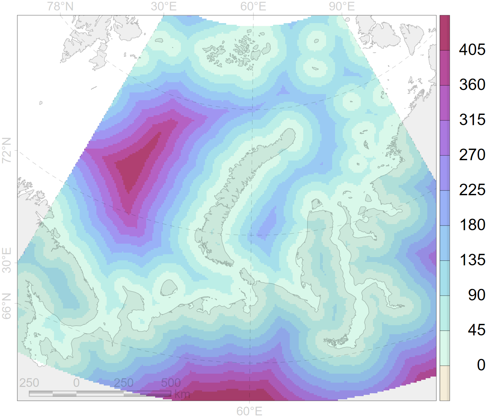 ] ] --- name: beforefinalizing .toc.sidebar.left-column[ .outline[ # [Подготовка ](#Hdc8d2) # [Сбор данных ](#H0db48) # [Переброс данных](#Hca4d1) # [Треки ](#H7f976) # [Находки ](#Hec8ea) # [Анализ ](#analysis-gebco) ] ] .toc.mainbar.right-column.scrollable[ ] ]